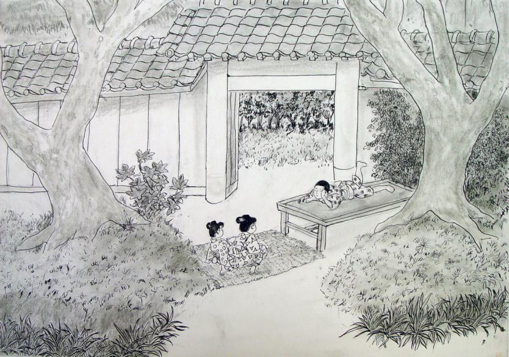

| 失われた村の日々 | |
| 佐賀純一 | |
| (2015) | |
父が身重の母と僕を残してロンアに行ってしまったのは大正二年六月だから二歳半の時だ。父が出発するという日、母に連れられて東京駅まで見送りに行った。他に何人か来ていたが、小柄な色白の若い女の人が混じっていた。後から聞くと父のお妾さんだったという。汽車に乗り込んだ父は窓を開けて、窓枠に肘をついてこっちを見ていた。グレーの背広にネクタイを締め、黒い立派な口髭を生やしていた。大きな厚い唇を偉そうに結んで、にこりともしなかった。母は黙っていたように思う。色白の若い女の人は母と少し離れたところに立って、やはり黙っていた。汽車がゴトンと動いて、父は肘をついたまま指の先をちょっと動かして、それきりどんどん行ってしまった。悲しいという思いはなかった。それが父であるという意識も定かではなかったように思う。汽車が見えなくなるまで見送っていたが、母の目に涙を見た記憶はない。なぜ父が母を置き去りにしてロシアへ行ってしまったのか、その理由も長い間分からなかった。
母は霞ヶ浦湖畔の安中村山内の実家に戻って妹を生んだ。僕が七歳になった年の春、父は突然帰国した。立派な口髭と厚い唇と冷たい目をしていた。母はようやく戻った父との同居を期待したが、父は薬の調達に一時帰国しただけだった。再び革命下のロシアに戻ると言う言葉に、母は怒って、僕と妹を連れ、ロシアヘ渡った。イルクーツクでの生活は想像を絶するものだった。この時の出来事は『氷雪のバイカル・ロシア革命を見た少年』（キンドル）に記した。やがて革命は熾烈になり、母と僕と妹は父と別れてようようの思いで帰国し、数年の間ふたたび実家の世話になったのだが、その間の母の苦労は子供の目にも気の毒だったという思いしかない。
こうしたわけで母の村で過ごした日々は楽しい思い出に充ちているとは言い難いのだが、にもかかわらず、あの時の村の記憶は一種独特の色彩を帯びて鮮明によみがえる。とりわけ二歳から七歳まで過ごした五年間の出来事は、それぞれの場面が黴の生えた幻灯のように浮かんでは消え、小川のせせらぎ、鶏の鳴く声などが耳元に聞こえて来るような気がする。
僕は長い問大脳に深く畳まれて蓄えられていたこれらの記憶をできるだけ修正を加えずに、丹念に描写することに努めてみようと思う。それは単なる追憶のためではなく、記憶の表層を少しずつはがして行くことによって、ちょうど考古学がそうであるように、かつてはどこにでもあったのだが、今はもうどこにも存在しない、そのような人々の営みと情感を再現できはしまいかと思うからだ。僕の記憶はひどく偏った経験と固く結びついてはいるけれども、ひとつの時を共有したということもまた確かなことである。
子どもの目に、母の生まれた家はとても大きく見えた。屋敷の周りには竹藪と畑が広がり、門の前には何百年の椎の大木が四本、黒々と枝を張っていた。当主は祖父の飯塚源太郎だったが、村の人はこの家を「源兵衛」と呼んでいた。というのも昔からの屋号が源兵衛だったからだ。ややこしかったことは、源太郎の親の源兵衛は隠居していたもののまだすこぶる健在で、後妻の徳といっしょに門の側の隠居所に住んでいたということである。家の実権は当主の源太郎が握っていたが、曾祖父の源兵衛は頑固だったし、曾祖母の徳は金貸しで意地悪だった。
この家の最初の記憶は、母の背中で泣いていたことである。母はその時庭で洗濯物を干していた。建物や木々に囲まれて、庭はひっそりとしていた。僕の泣き声だけが竹藪に響いていた。涙で辺りの景色がぼおっとかすんで、洗濯竿に下がった敷布の白さが目に強く焼き付いた。後で母からあの時お前は麻疹だったんだ、と聞かされたが、麻疹の子が背負われて表に出されたのでは気分も悪かったろう。母がなぜ病気の僕を背負って洗濯していたのか分からない。強い陽射しが頭に照りつけて、遠くに大きな藁屋根の母屋が見えた。東は深い竹藪、その前は二階建ての倉、井戸、藁屋根の風呂場、小さな藁屋根の便所。南の門の側には築山越しに隠居所が見え、山茶花の垣根がある。隠居所の西側にはマテヤと呼ばれていた仕事場がある。開いた戸の間に餅をつく臼や粉を挽く石臼、箕、笊、ゴザなぞが並んで、土間続きの八畳ばかりの畳の部屋もわずかにのぞいている。母と僕はそこに寝泊まりしているのだ。後から聞くと母が子どもを連れて帰って来るというので祖父の源太郎が仕事場を改造して畳を敷いたのだという。粗末な小屋の周りで蝉がやかましく鳴いている。息が苦しい。遠くの方で誰かが叫んでいる。叫びながらどんどん近づいてくる。そして突然汗だらけの黒い顔が僕をのぞき込んだ。
「ススム、だいじょうぶか」
皺だらけの顔だ。唇がぱくぱくと動いてしきりに話しかける。それから黒い手が伸びて額にそろりとさわって、僕は急に気持ちが良くなった。
「ハシカでは身体は冷やせねえかんな、頭だけちびっと冷やしてやっから」
手桶の中で手ぬぐいが揺れ動いている。それから水をざっと絞って、おばあちゃんはその手ぬぐいを僕の額にのせた。気持ちのよい布の感触がおでこにぴったりとはりついた。
「どうだかや」
僕はおばあちゃんの声を聞いているうちに、急に、あの深い井戸の底の水が飲みたくなった。縁から顔を出してのぞくと、きらきらと光る井戸の底が少しゆらいでみえる。釣瓶を落とすと、ポターンと重々しく反響する。ああ、あの水を飲みたい、僕はいくどもそう思い、それからまたおばあちゃんの声がだんだん遠くなって、それきり眠ってしまった。
次の記憶はそれからどれほどたってからだったのか、あたりはやっぱりひっそりとして、何の音も聞こえなかった。門の外の椎の木は大きな山のように盛り上がって、冷たい空気を吐き出している。その向こうの畑の隅にいちじくの木が大きな実を何百とつけて甘い香りを放っている。このいちじくは曾祖母の持ち物で子供が近寄ると罰が当たると言われているのだが、それだけにいつかその実を食べたいと見るたびに考えていた。
母屋の前庭に立派なひばの木が立っている。これは曾祖父の源兵衛が大切にしていて、触ったのが分かると気違いみたいに怒って、箒を持って追いかけて来る、そんな奇妙な木なのだが、僕はその木の側の地面にしゃがんで何か絵のようなものを描いていた。すると突然何かが頭を突っついた。驚いて立ち上がって頭を手で触ると、その手を鋭く突つく。振り返ると身の丈ほどもある茶色の雌鶏が恐ろしい目をして、今にも飛びかかって来るところだ。鶏は目をビー玉のように怒らせ、羽根を逆立て、小さな鶏冠を真っ赤にして僕に突きかかってくる。僕にはその鶏が大鷲にも大きく見えて、びっくりして後向きにひっくり返った。鶏は偉丈高になって僕の上にのしかかった。そして目玉をつつこうとする。僕は恐ろしくて顔を覆って泣きだした。鶏は着物の上から僕の尻を軽くつついた。蝉が雨のように鳴いている。僕は熱い地面に額をくっつけて、頭を両手で抱えながら鶏の太い爪のある黄色い脚がいかにも勝ち誇って動くのを泣きながら見つめていた。
鶏はいっぱい飼っていた。雄鶏は黒くて大きな体格の立派な鶏が一羽だけで、あとはみんな雌だった。雄はこどもには案外無関心だった。こっちを見てもフンというふうにすぐに視線を外らせて、胸を張って庭をゆったりと歩いては時々力強く地面を蹴立てて餌をついばんでいる。雌はその周りを忙しく歩きながら、時々意地悪そうにこっちを見る。中には僕が近寄って行くと、馬鹿にするように脚で地面を蹴立てて見せる雌鶏がいる。全部で二十羽以上いたろう。僕はそれがみんな憎らしくて、あのつぶれたような鶏冠をひねってやったらどんなに愉快だろうと考えたが、鋭い嘴を見ると恐ろしくて、手を伸ばすことは出来なかった。
鶏のねぐらは竹山の中にあった。昼間は庭や周りの畑の中を歩いてみみずや虫を食べて、夜はちゃんとねぐらに帰って眠る。鶏は鳥目だから暗くなると目が見えない。それで夕暮れが迫って来ると竹山の中のねぐらに帰ってきて、地面には寝ずに、高いところに渡してある横木に、コケココココ、と喉を絞った大げさな声を出して止まる。茶色や黒や胡麻斑や白、いろいろな羽色の鶏が頚をめいめいの方向に向けて眠るのだ。藪の中には小さな杉皮の屋根だけの小屋があって、その中に笊が置いてある。鶏たちはその中に卵を生む。おばあさんは朝になるとこの卵をとりに行って、卵買いが来るまで鶏小屋の側の笊に貯めておく。ある日、鶏たちがみんな木に止まってしまってからそろっと近寄ってのぞいてみたら、いつ生んだのだろうか、藪の中に卵が二つ、うっすらと浮かんでいた。鶏たちは身動きもせずにじっとしている。僕はその卵を笊に入れようと、手をのばした。すると頭の上の鶏が急にコッコッコと鳴いて、竹の葉がざわざわと揺れた。僕は手を引っ込めた。鶏はそのままじっとしている。暗くなりかけているのでこっちが見えないらしい。僕は思わずぞくっとして、音のしないようにそろっと戻った。
僕は物置に入ってナタを取り出し、手近な竹の枝を削って鋭くとがらせた。それからそろそろと藪の中に入って行った。鶏たちは黒い塊になって止まっている。僕は藪の中の卵に手を伸ばした。白くぼんやりと光る卵はずっしりと重かった。竹の枝のとがった先を卵に近づけてすべすべした殻に深く突き刺すと、ヌルッとした液体が穴から滑り出て、指の間から下に垂れた。僕は殻を捨て、藪の奥へ足を踏み入れて残った卵を下駄でぎゅっと踏んずけた。パリッと小さな音がした。もうほの白い光はなかった。小さな紙のようなものが黒い下駄の歯から細く垂れ、とろりとした透明の淡い光が笹の葉にへばりついていた。振り仰ぐと、たくさんの鶏が黒い塊のようになって、黙ってじっと止まっていた。
僕は暗い竹藪の中をそろそろと走った。
＊
村にはキツネもいた。お稲荷様の境内に住んでいるという噂だったが実際に見たことはない。けれども大人たちの中には見たという人もあり、狐はお稲荷様のお使いだというので、村人たちは決して犬を飼わなかった。その頃、母と妹はマテヤに寝て、僕は母屋のおばあちゃんと寝ていた。その部屋は出居と呼ばれていたが、玄関と奥座敷の間にある広い部屋で、昔は殿様が訪ねて来たとき、家来が待っているところだったという。こんな田舎の百姓屋に殿様が訪ねてきたことがあったのかどうか分からないけれど、玄関は小さいながら寝殿造りの凝ったもので、あるいは一度ぐらいはそんなことがあったのかも知れないという雰囲気は残っていた。その伝統のためかどうか、普通のお客がくると土間続きの囲炉裏端に通し、ちょっとした人は出居でもてなし、大切なお客は奥座敷に通すという風だった。
出居にはたいおばあちゃんと源太郎おじいちゃんの間に僕が寝て、貞子おねえちゃんはいちばん東の隅に寝る。貞子おねえちゃんというのは母の妹だからほんとうは叔母さんなのだが、僕とは七つしか違わないし、僕がいっしょに暮らし始めたころは小学校に通っていたから、おねえちゃんと呼んでいたのだ。
夜になるとランプの油がもったいないので、誰もがとても早く寝る。僕は夕ご飯を食べると必ずすぐに布団に入れられた。おばあちゃんたちもそのあとそれほど遅くならないうちに横になった。ランプの火が消えると真っ暗で、天井も壁もとなりに眠っているおばあちゃんの顔も見えない。夜中にふっと目が覚めると、母屋の側の竹藪がざわざわと風に騒いでいる。その音が恐ろしくて、真夜中に何度も目が覚めるのだった。
そんなある晩、夢の中で狐の鳴く声を聞いた。コンコン、コンコン、二声ずつ聞こえる。はっとして目をさまして、あたりを見ると、真っ暗だ。手を目の前にかざしてみてもなにも見えない。竹藪がそよそよと静かにさやいでいる。闇がシーンと鳴っている。僕は両手を耳に当てて息をこらす。暗闇の中で、確かに、狐が鳴いている。
コンコン...... コンコン......
母屋の東側には竹藪がある。その向こうの細道は善仁門と仁兵衛の横を抜けて稲荷様に通じている。その細道には狐が出るという噂があった。噂ばかりではない、ひいおじいちゃんの源兵衛はちゃんと見たことがあるという。おばあちゃんがくれた絵本には白い狐が描いてある。狐には尻尾が九本もある。空を飛ぶこともできる。人を化かしたり殺したりする。
コンコン、コンコン、その声がだんだん近づいて母屋の玄関から今にも入って来るような気配だ。
「オッカネエヨー」僕はおばあちゃんにしがみついた。
「なあしたんだ」
「キツネが来るよー」
「どれ......ああ、ほんとだなあ」
おばあちゃんは真っ暗な中で手を伸ばした。
「ススムは思ったよりか弱虫だなやあ、こっちさ来およ」
僕はおばあちゃんの胸にしがみついた。
「おっかねえよー」
その頃狐というのは魔物のようなもので、どこにでもスウッと入ってこられるもののように想像していた。もしかしたら狐はもうとっくに家の中に入って、白い狐の首が天井から覗いているのかも知れない。僕の目にはあの笹藪の白い卵がはっきりと見える。青い闇の中で聞いた卵の殻のパリッと破れる音もはっきりと聞こえる。もしかしたら、狐はあのことを知っているのかもしれない。暗い竹藪の奥から白い頭をぬっと突き出して、鋭い目で見ていたのかも知れない。それで化かしに出てきたのだろう。僕は生きた心地がしなくて、おばあちゃんの胸の中でぶるぶるとふるえた。
「そうたにおっかながんねえでも、大丈夫だ」おばあちゃんは僕の頭をくるりとなぜた。
「悪いことしねければ狐は決して悪さはしねえもんなんだ。だからほれ、首出して、言って見ろ、おら、悪いことしねえんだからかんべんしてくろよ、そうたふうにいってみろ」
「おっかねえよー」
「そうたに弱虫だと、食われちまあど。早く言え。かんべんしてくれって、言って見ろ」
僕は恐る恐る布団から首を出して「かんべんしてくろよ」と蚊の鳴くような声を出した。
「もっとえかい（でかい）声で、狐にちゃあんと約束するんだ。悪いことしねえからかんべんしてくろよって」
コンコン...... コンコン...... 狐は雨戸の近くで鳴いている。風が吹いて竹藪がざわざわと盛んに揺れている。真っ暗な屋根裏の煙出しの穴の向こうを夜風がスウッと渡って行く。でも何も見えない。
「ぐずぐずしてっと狐も待ってらんねえぞ」おばあちゃんは僕の耳に口を押しつけて小声で言った。「食われちまってもいいのか」
「やだよー」僕は泣きそうになって叫んだ。「もう悪いことしねえから、かんべんしてくれよー」
「うん、そだな、もう一回言って見ろ」
「もう悪いことしねえから、かんべんしてくれよー」
「そーだ、もうはあ大丈夫だ」
おばあちゃんは僕を抱きしめた。コンコン、コンコン、狐は母屋の周りをぐるぐると回りながら鳴いている。その声がだんだん小さくなる。おばあちゃんはすやすやと寝息を立てて眠ってしまった。源太郎おじいちゃんもいびきをかいて眠っている。貞子おねえちゃんは死んだように眠っている。僕は暗闇の中でひとりで目を開いて、狐の声が聞こえないか耳を澄ませている。竹藪がサワサワと鳴っている。天井裏が揺れているような気がする。眠ろうとしても眠れない。卵の青白い光と狐の顔が重なりあう。鶏が竹藪の奥からじっと見ている。
「お前が悪いんだ」僕はギョッとして叫ぶ。鶏はビー玉のような目でこっちをギロリとにらむ。
「お前が悪いんだ」僕はにらみ返す。遠くでふくろうが鳴いている。風も止んで、闇がシーンと鳴っている。その音を聞いているうちに、僕はいつの間にか眠ってしまった。
＊
たいおばあちゃんは江戸時代の生まれで、明治十年に嫁に来たそうだが、その時はまだ十七歳だったという。それからとても一生懸命働いて、三十八の時にはもう腰が曲がってしまった。だから背筋をまっすぐにして歩くおばあちゃんを見たことはない。本当ならおばあちゃんはもう楽隠居で、朝もゆっくり起きて、囲炉裏の側でお茶を飲んでいればいいのに、ぜんぜんそんな身分にはなれなくて、今でも一日中働いていなくてはならないのは、門の横の隠居所に、曾祖母の徳と、曾祖父の源兵衛が威張っているからだ。徳婆さんは金があって、髪も綺麗に結っているし着物も上等なものを着て、朝ご飯がすむと縞模様の下駄をはいて日傘をさしてどこかへ出かけて行く。徳は源兵衛の後妻で、源兵衛が年をとってから貰ったのでたいおばあちゃんとそれほど年が違わない。それなのに、徳婆さんはいい格好をして、一日中遊び回っているのに、たいおばあちゃんは畑や田圃で働かなければならない。徳婆さんはときどきたいおばあちゃんのことを怒る。なんで怒るのか分からない。でもたいおばあちゃんは竈の前に小さく身体を屈めて、声を出さないようにして泣いている。僕は身体が熱くなって、徳婆さんが憎くて、歯ぎしりする。でも、たいおばあちゃんは何にも言わない。だから僕も黙っている。ふだん、徳婆さんは隠居に居て、ごはんも別に食べるのだから母屋には関係ない人間だ。こっちへ顔を出さない限り、僕たちは平和に暮らしていられる。一生こなければいいと思う。
たいおばあちゃんは何でも知っている。夜噺もいくらだって知っている。おばあちゃんは毎晩、僕が眠ってしまうまでいろいろな噺をしてくれる。よまいごとの長右衛門の話は狐が出た次の晩にしてくれたと僕は思う。
「ススムも知ってっぺなあ、いなご田の長右衛門のことなあ」
「知んなんいよ」
「まあだ話してやんなかったかなあ。そおかあ、そんだら八井田池は知ってっぺ」
「知ってる。学校があるところだろう」
「そうだ、おめえも大きくなったら尋常小学校さへえるんだ」
「お母さんは土浦の小学校に入るんだって言ってたよ」
「そうたことあんめえ」
「ロシアからお父さんが帰って来たら土浦に住むんだってさ」
「なあに、そうたこと、あてには出来ねえ。おめえの父ちゃんはなあ、おめえたちを残して、遠い遠い国さ行っちまったんだ。そんだから、決して当てには出来ねえんだぞ。そこは雪ばかり降ってどこもかしこも凍ってるんだとさ。たまに手紙が来るだけで、何をやってるのか分かりもしねえ。ススムはここにずっといたのが一番いいんだ。おめえはここが嫌えか」
「わかんない」
「そうか、仕方ねえべな、そんでもそのうちに好きになっぺよ。ここにはいろんな面白いことがあっかんなあ。そうだ、八井田小学校の話だ。あの学校はずいぶん前に建てたんだが、もともとあそこは源兵衛の山だったところを村が学校を建てるというので寄付したんだ。そして山を崩したところが、いろんなものが出てきた。鉄の剣だの曲玉だの、石棺だの、それこそ見たこともねえものがいっぱい出てきたんだ。それでこれはもしかしたら宝の山ではねえのか、ということになって、みんなでもっと掘ってみべつうことになった。みんな大張り切りだった。そうしたところが、そん時先頭に立った者が急に病気になった。次に親方になったものも、大怪我をした。周りの者にも面白くねえことが続いた。そんでこれは掘ったら駄目だと神様が教えてんだつうことになって、学校が出来た他は手つかずになっちまった」
「宝が埋まっているというのはほんとうなの」
「神様の宝だから、誰も取ってはいけねえんだよ」
「僕は剣が欲しい」
「だめだ、誰ももう掘れねえ。それよりも何よりも、あそこの山には狐が住んでいる。狐は神様の使いになって守ってるんだ」
「この間来たのもその狐かなあ」
「それはわかんねえ。でもな、あの狐が神様の使いだということは、確かなことなんだ。この村では昔から犬を飼ってはなんねえという掟があって、みんなそれを守っている。だから、狐も安心して出られるんだ。もし狐が鶏を食いたければいくらでも取れる。ところがいままで鶏を取られたという百姓はいねえ。家の鶏も一羽もとられたことはねえよ。ただ、狐はときどき人を化かすことはある。これは確かなことだ。いなご田に住んでいるよまいごとの長右衛門を化かしたのは金比羅山の狐なんだ」
僕が知っているよまいごとの長右衛門という人はもうずいぶんの歳で、その家というのもいなご田という寂しいところにあった。山内から学校へ通じる金比羅山の山裾の畑の中にたった一軒たっている。昔はもう一軒あったそうだけど、いつのまにかたった一軒になってしまったという。
「これは私が嫁に来たばかりの頃だ。長右衛門が青い顔をして来て言うことには、このごろ真夜中になると、誰かが雨戸をトントンと叩きながら、チョウエモン、チョウエモンと呼ぶ。それで戸を開けると誰もいねえ。それでふとんに入るとまたチョウエモン、チョウエモンと呼ぶんだ。それが毎夜続くもんだからとても寝てはいられねえ、なんとかなんねえもんだろうかと頼みに来たんだ。それでおじいちゃんは村の者と相談して、まずどんな具合いなものか見に行ってみることにした。そうして夕方から竹藪に潜んで息をこらして待ってたという。するとその真夜中、長右衛門の話した通り、山の奥から一匹のえかい狐が出てきた。そして雨戸の前までくると、前足で逆立ちして、尻尾で戸を叩きながら、チョウエモン、チョウエモン、と尻尾で戸を叩いている。あたりはいちめんの星明りでな、狐の毛はふっさりと青白く光って、それはそれはきれいに見えて、うっとりするほどだったんだとよ。みんなはその狐があんまりきれいなもんで思わず見とれていた。狐はふさふさする尻尾で、チョウエモン、チョウエモンと叩いている。しばらくそれを見ていた村の者は、そうだ、と我に返って、今だ、と叫んで飛び出して、ワラワラッと狐を取りまいて、捕まえようとした。ところが狐は驚くほど身が軽い。さっと草叢の中さ隠れて、それきり見えなくなっちまったんだ」
おばあちゃんからこの話を聞いたとき、それは僕のところに来た狐とは別の狐にちがいないと思った。それというのは、こっちに来たのはその気配からしてなんとなく雄狐のように感じられるのに、長右衛門の所に出たのはたしかに雌狐に違いなかったからだ。その雌狐は、独り者の長右衛門を騙そうとして、尻尾で雨戸をトントンと叩いていたのだろう。村の人がもっと我慢して待っていたら、狐はほんとうに美しい女になって長右衛門を化かすところを見られたかもしれないのだ。その時、その女はとてもきれいで着物の裾からはふっさりとした白い尾がぼっと光って出ていたのだろうと想像すると、僕は村の人たちがいきなり飛び出して狐を驚かしたことがとても悔しい気がする。
それに僕が変だなと思うのは、長右衛門がその事件の後も逃げ出さないで、ずっといなご田に住んでいるということだ。もし長右衛門が狐を恐ろしがっているとしたらとっくにあそこから逃げだして村の中に住んでいるにちがいない。ところが今もあそこに住んでいるということは、本当は長右衛門は狐を嫌っていたのではなくて、狐に嫁さんになって貰いたいと思っているのかも知れないのだ。なぜ僕がそんなことを想像するかと言えば、丁度いなご田から八井田池のあたりに狐の嫁入りが出たからだ。
僕が狐の嫁入りを見たのは秋の穫り入れがすんだ後、ある夕暮れ時に、貞子おねえちゃんが、「ススム、今夜は狐の嫁入りがあるらしいからいくべなあ」という。たいおばあちゃんも「今夜はでっぺなあ」とうなずく。それで僕が暗くなるのを楽しみにしていると、その夜はなんとなく夕闇がぼっと重たく垂れ込んでいて、星も月も全く見えない深い闇夜が来たのだった。
急いで夕御飯を食べ終わると「さあいぐべ」と貞子おねえちゃんは僕を誘う。普段はすぐに寝ろ、と言われるのに、誰も止めない。八千代叔母もたいおばあちゃんも源太郎おじいちゃんもいつもよりなんとなく機嫌がいい。それで僕もうきうきして、みんなといっしょに出かけた。
三望にはもう十数人が集まっていた。三望というのは、村から来る道がそこで三つ又に別れていて、あたりは田圃と畑で、南に行けば根火の方向。東に行けば太田、西に行けば木原へ通じる。正面には金比羅山とその山続きの丘が黒い塊になって低く続き、八井田池のあるあたりはその山陰になって見えない。
「もおはあ、出る頃だっぺなあ」
「そろそろだっぺ」
みんな小声で話している。あたりはほんとうに真っ暗で、貞子おねえちゃんと手をつないでいても、その姿は見えない。提灯の灯も消しているので、誰が誰だかすぐ側に立っていてもさっぱり見当もつかないのだ。と、その時、誰かが、「めえたぞ」と低く叫んだ。背伸びしてみると、闇の彼方にほの明るい光が点々と並んで動いていた。そして不思議なことは、その光の周りの景色がぼんやりと見えたことだ。それは八井田池の桜並木で、狐の嫁入りは並木の下をゆっくりと通って行く。
「あれあれ、嫁さんは化粧していんなあ」
「んだ、真っ白に化粧していってやあ」
誰かが言うけれど、僕には白い顔はぜんぜん見えない。でも嫁さんらしい人が歩いているのは見えるような気がする。行列は金比羅山に隠れて見えないはずの八井田池の桜並木の間を通って静かに進んで行く。桜並木のトンネルは西から東へ延びている。その幹の間を行列は厳かに通る。一つの陰が桜の大木の向こうから現れて幹の向こう側に隠れると、次の行列が現れる。
「長持ちが行ぐべ、嫁様がいんべ」
「んだ、そん次が挟み箱だなあ」
村の人々が口ぐちにしゃべっている。長右衛門のところに出たのはあの中の狐に違いないと僕は思うのだ。でもいつまで見ていると、それはだんだん狐ではなくて、人間の行列のように見えてくる。闇の中から「あら、丸髷に結っているよ」なんていう八千代叔母さんの声が聞こえる。黒い髪の毛が淡い光の中でぼっと艶を帯びて浮き立っている。狐の嫁入りはつぎつぎに桜のトンネルを通って、光がちらちらと怪しく光って、やがてふっと見えなくなってしまった。
提灯を灯して家に戻ると、母屋に曾祖母の徳が囲炉裏の側に座っていた。
「こうた遅くまで、何していたんだ」と徳婆さんはギロリとした目で言った。
「狐の嫁入りがめえましたよ」と源太郎おじいちゃんが腰を下ろしながら答えた。継母でも母には違いないのだから源太郎おじいちゃんはいつもとても丁寧に話をする。「八井田池の桜並木の下を通るのがよくめえましたよ」
「そおかい、おめえが見えたつうんなら見えたんだろう。そんでもオレはこれまで何十年と生きてきたが一度も見たことはねえ。それにだいいち三望から八井田池がどうやって見えんだ。あそこに行くには山を越えて行かなければならねえんだぞ。金比羅山を越えなければあのあたりは決して見えめえ。いい歳こいた大人がそろいもそろって、そんな馬鹿なものを見るために母屋をこうた時間まで空っぽにすんだかんな、何かあったらどうすんだ。村にもいろんな人間がいるんだぞ。ほんとに、若いものはしょうがねえ」
徳婆さんはみんなをぐるりと見回してから、最後にたいおばあちゃんを見た。そしてそれから僕をきつい目でにらんだ。子どもがまだ起きているのか、そんなことではろくな人間にはなれねえ、その目はそう言っている。
「どうして狐はこんな嫌な人を生かしておくんだろう」僕は徳婆さんの横顔を見ながら真剣に考える。もし僕が狐だったら、毎晩だって徳婆さんを化かしたり脅かしたりして、この家から追い出してやる。隠居所の天井裏に住み込んでひとつ目小僧だの大入道になって肝っ玉をひっくり返るほど驚かしてやる、そうすれば心を入れ換えて少しは優しくなるかも知れない、僕は心の底からそう考え、狐のような妖術を使えない自分自身がひどく悔しかった。
ところで、僕は狐の嫁入りを見た翌日、ひとりで八井田池に行ってそのあたりをぐるぐると歩いてみた。けれども何の不思議もなかった。桜並木の下に狐の足跡がないかなとも思って調べてみたけれど、ひとつも残ってはいなかった。ただ、桜並木の並び方は昨日みたのとそっくりで、大きな大木の後ろからは、あの狐の顔がぬっと出てきそうで気味が悪かった。
僕はその後も二度、狐の嫁入りを見たけれど、これはみんな金比羅山の狐の仕業にちがいないと思っている。
＊
僕が母とやっかいになっていた安中の実家には大勢の人間が住んでいた。狭くない屋敷ではあったけれど、よくもあんなに大勢の人間が暮らしていられたものだと今思えば感心するが、混乱しないために簡単に紹介しておく必要がある。まず曾祖父母の源兵衛と妻の徳婆さんは前にも言った通り門の側の隠居所に住んでいて、店を開いて商いもしていたし、婆さんはその他に金貸しのようなこともやっていたから裕福だったが、家計は母屋とは別だった。食事は母屋から箱膳で運ばせて、二人だけで食べた。母屋には源太郎とその妻のたい、長女の朝子、三女の八千代、四女の貞子が同居し、マテヤには母と僕と妹が暮らしていた。母は源太郎の次女として生まれたがいちばん早く結婚して、朝子、八千代、貞子の三人のおばさんは二十七、二十、十二歳、朝子伯母さんは田舎では嫁に行くのには遅すぎる歳になっていた。
朝子伯母さんはとても変わっている人で、毎日なにをするでもなく、ただ和歌ばかり詠んで、奥座敷からほとんど外に出なかった。たいおばあちゃんがどれほど野良で忙しく働いていても決して手伝うということをしないし、ご飯だって一度も炊いたことがない。僕に声をかけてくれることはほとんどない。いつも難しい本を読んでいて、僕が奥座敷を覗くととても怒った顔でにらみつける。なぜこんな変な人がたいおばあちゃんのような優しい人から生まれたのか、僕にはさっぱりわからない。
家族の他に、母屋の台所の後ろの納戸には作男の健次郎が居た。健次郎は二十五過ぎの独り者で、天気がよい日にはたいおばあちゃんといっしょに野良に行き、雨が降っている日は土間で米をついている。大きな臼に玄米を入れ、玄米の山の真ん中に荒縄でこしらえた丸い輪を置く。健次郎はその輪の中に杵をポンポンと突き入れる。健次郎の身体は痩せて、腕ばかりがひどく太い。
「なんでそんな輪を入れて置くの」僕はある時聞いたことがある。すると健次郎は、「そんじゃあ入れねえでついてみっか」と言って輪を取り、ぽんぽんと杵を突き入れた。「これでもつけねえことはねえ。そんでもこうたぐあいにやったれば、よく突いたとこと、ろくろくついてねえところが出らあ。ところがこうやって輪を入れて、そこを突くつうと、輪の中の米がへこむべ。へこむから輪の外側から米が崩れて入って来る。な、こうた具合いに入る。そこをまた突く。つまり、輪があると、その輪を中心に内と外の米がぐるぐる回って、平らに突けるつうわけだ」健次郎はぽんぽんと輪の中を突いてから「坊ちゃん、やってみるかね」と笑ってみせた。
健次郎の他に、源兵衛の弟の泰次郎の息子の雄之輔も始終出入りしていた。雄之輔は卵買いのおちか婆さんの息子で、年は二十ぐらいだった。野良仕事の合間には薪を割ったり、屋敷の周りを見回って、壊れた所を修理したり山の手入れをしたりした。それから養蚕の時にはまだ増えて、近隣から手伝いにきた若い娘さんたちが同居することもあった。女中さんが住み込む時もあった。だから大変な大所帯だったが、昼間はみんな外に出ているから大きな屋敷はしーんとして、鶏が餌を啄む声と風の音しか聞こえなかった。
母屋の入口は格子戸で、僕の記憶では冬の寒い時期の他はいつも開いていた。格子戸の敷居を跨いで中に入るとそこは広い土間だがにわばと呼ばれていて、雨が降った日など豆や穀類が足の踏み場もないほどいっぱいに敷き詰められる。にわばに立って見上げると天井はなくて、高い屋根の下に黒く煤けた梁が幾本も走っている。そしてそこには燕の巣が三つあった。燕が巣を作り易いように小さな板を鍵の字にぶつけてあって、燕が巣を作っている。
「なあ、かわいいもんだっぺ」とたいおばあちゃんは見上げながら言う。「燕という鳥は遠い遠い、それこそ気の遠くなる遠い国から飛んで来て、そうやってここに来んだ。それも毎年、決して間違わねえで同じ家に帰って来る。たいした鳥なんだ」
僕はおばあちゃんと並んで燕の巣を眺める。ちいちゃい首がいくつものぞいている。鶏のふてぶてしい様子と比べると、燕はほんとうにかわいい。ときどき開け放たれた戸から親燕がすいすいと飛び込んでくる。入口の格子戸がいつも開いているのはこの燕のためなんだ。僕は親燕が子つばめに餌を食べさせている光景を見上げている。すると、ふと、この燕はロシアにも行くのかな、と想像する。でもすぐにその想像は途切れる。僕はお父さんを思いだしたくない。
土間の突き当りには大きな竈がある。いちばん右側の竈には、直径三尺もある大瓶が仕掛けてある。これは藍瓶で、糸を染めるのに使うのだ。たいおばあさんは十七の時に嫁に来たというのだが、蚕を育てて繭にして、その繭から糸を取って、糸を染めて、機織で反物にして、それで着物を作ることが出来た。僕はその着物を着て遊んだ。でも普通の家は藍瓶がないから紡いだ糸は藍染め専門の紺屋に出して染めてもらっていた。専門の紺屋は湖の対岸の志戸崎村にあった。そして紺屋からはひと月に何度か「拾い子」が来て、どんな具合いに染めて貰いたいのか注文をとって、糸を預かって、できあがるとそれを届けに来た。拾い子というのはたいがいは隠居仕事のおばあさんたちで、籠を背負って、湖を船に乗って渡って来る。だからいろいろな話を知っていて、拾い子が来ると村の人たちはご飯を食べさせたりして話を聞く。他の村から嫁や婿を貰うためにも拾い子の話はとても大切だし、なんといっても知らないことが聞けるから面白い。でも源兵衛の家はちゃんと藍瓶があって糸を染めるのを拾い子は知っているから、ときどき挨拶に寄ることはあっても、注文を取ることはなかった。
藍瓶の左隣には竈が二つ並んでいて、毎日のご飯と味噌汁を作る。左端の竈は少し小さくて、ここにはいつも茶釜がかかっている。茶釜の大きさは直径十五センチぐらい。欅の厚い蓋があって、真ん中にお団子のような格好の木の把手がついている。この下の竈にはいつも細い火が焚かれていて、湯が沸いていた。
竈の右手の板壁には木の釘が何本も出ていてそこには背開きにして焼いた魚がいつも五、六匹は張ってある。この魚は源太郎おじいちゃんが捕って来る。おじいちゃんは天気が良い日は必ず漁に出かける。ときどき「ススムもついていっか」と声をかけてくれる。葦の間を水路が田圃の方へ入り込んで、おじいちゃんは色のすっかり黒くなった綱を解いて舟に乗り込む。葦原の間を竿で押して行くと、波が押し寄せて来るそのあたりに、昨日仕掛けた目印の竹が見える。おじいちゃんは紐を引いてウケを引き上げる。竹でこしらえたウケの中には必ず鮒や鯉が何匹も入っている。あんまり入りすぎて持ち上げるのに苦労する時もあるくらいだ。おじいちゃんはウケを逆さにして魚を舟の胴間に落とす。
「ススム、手を入れてつらめえてみろ」
「バタバタすんだもの、つかまらないや」
「そうた腰つきでは駄目だ、パッとつらめえるんだ」
水の無い舟の上に転がされて暴れている魚はきらきら光ってとてもきれいだ。沢山捕れすぎた時には家の前の小川に活けて、焼く分だけ持って帰る。そして背開きにして囲炉裏で焼いて竈の横の板壁に刺しておく。これにお醤油をたらして食べるととても香ばしくておいしい。
竈の後ろは真っ黒い壁で、その壁の中ほどの棚には虚空蔵さまがまつられている。高さ七寸ぐらいの小さい仏像で、いつも煙に包まれているので真っ黒に煤けている。虚空蔵様の横の壁には武者窓のような板の窓が切ってあるが、ここには細い板が縦に並んでいて、夜になると横に引いて閉める。そして朝になると源太郎おじいさんがこの窓を開けるのだが、この小さな板の窓が引き開けられると、朝の光がピカーッと飛び込んで、真っ暗な土間が突然明るくなる。ほんとうに突然なにもかもが目が覚めて、障子までが白く生き返ったようになるのだ。
虚空蔵様は竈の上で薄紫に輝いている。源太郎おじいさんは外の井戸端で顔を洗ってから水と炊きあがったご飯を上げてお祈りする。家族もめいめいに頭を下げてお詣りする。僕もみんなの真似をしてお祈りをする。虚空蔵様の縁日は十三日なので、前日になるとたいおばあさんは大きな石臼をゴロゴロと挽いてお団子をこしらえる。そうしてまず最初に虚空蔵様にお供えして、それから大神宮様と仏様にも山盛りにお供えする。でも神様と仏様に供えておくのは昼過ぎまでで、その後は下げられて、砂糖をつけて子供たちや家族に配られる。だから僕は虚空蔵様が好きだったし、特に十三日は大好きになったのだ。
虚空蔵様は大昔からこの家の守り本尊だったそうだが、僕は源太郎おじいちゃんからこんな話を聞いたことがある。「昔な、半七という家の先祖が会津の柳津の虚空蔵様にお参りにいったことがあったそうだ」おじいちゃんは団子を食べながら僕に話してくれた。「まだ明治になるずっと前の、江戸の頃だったから、脚半にわらじ、肩には振り分け荷物という出で立ちで、山また山を歩きに歩いて、柳津までたどりついた。そうして虚空蔵様にお参りを果して、帰って来る途中、山の中の吊り橋にさしかかった時、反対側から真っ白い着物に身を包んだ人物が来るのに出会った。髪も髭も真っ白で、一目で仙人と分かった。吊り橋の中程で半七はこの仙人と向かい合った。すると仙人は、お前とお前の家族の心がけはいかにも殊勝である。ここに宝があるからお前にやろう、とそう言って、袂から四角い包みを取り出して半七にくれた。半七はおおいに喜んでこれを持って帰って親戚のものと分けて家宝としたんだ。ところが、宝を分けてもらった親戚は、これを質にいれちまった。それからもう一軒は誰かにやっちまったんだ。それでその親戚の二軒は面白くねえことばかり起こって潰れちまったんだが、源兵衛の家だけはちゃんとお祀りしてあるからこうして今も立派に栄えている」
「それがあの竈の虚空蔵様なの」
「そうじゃあねぇ。あの仏様はもっとずっと前からあったんだ」
「じゃ、もらった宝はどこにあるの」
「大神宮様にちゃんとおまつりしてある」
「じゃあ、見せて」
「駄目だ。その仙人が先祖に申し渡したことには、この宝は家長の者以外は絶対に見てはならない。見た者は罰があたる、とそう申されたそうだ。だからわしもまだ見たことはない。わしの親の源兵衛おじいさんは見た」
「それじゃ、隠居の源兵衛おじいちゃんに聞けば教えてくれるかな」
「駄目だな。お前はここの家のものではない。居候だ。居候が見れば、天罰があたる。見せた者にも大罰が落ちる。だから決して見るなよ」
居候という言葉がどんな意味を持っているか、僕は小さい頃から知っていた。最初にこの言葉を聞いたのは朝子伯母さんの口からだった。僕がまだほんとに小さいときだったが、朝ご飯を食べた後、奥座敷の外の廊下を大きな音を立てて走っていたら、突然障子が開いて伯母さんが手を伸ばして僕の着物をつかんだ。
「そんなに大きな音を立てて走ったら、歌も詠んでいられないでしょう。イソウロウは、身分を心得て、静かに歩きなさい」
伯母さんの目は意地悪くて、口元がネズミのように尖っていた。僕は目を伏せ、坊主頭をそろそろと下げた。伯母さんは黙って着物を放すと、障子を音もなく閉め、また歌を詠み始めた。奇妙に透き通った声だった。僕は忍び足で廊下を歩き、角まで来ると、「ばーか」と長い舌を出した。それから僕は下駄をはいて築山を回り、マテヤの母のところに行った。母は僕の話を聞いて「姉さんはそんなことを言ったの」と無表情に言い、胸を開けて妹に乳を含ませながら、「お前はここの家のものではないんだから、勝手な真似をすると嫌われて追い出されてしまうよ」と僕を真剣な目で見つめた。
僕は信じられないけれど、伯母さんはほんとうはとても学問がある立派な人なんだという。十歳にならない頃から和歌をたくさん詠んで、古今集も万葉集も空で全部覚えているので誰もが驚くほどだった。その頃朝日商豆という有名な歌人で各地を放浪して歩いていた人が朝子伯母さんの才能に目をとめて源兵衛の家に寄ると何か月も滞在して、朝子伯母さんに和歌の指導をした。伯母さんが廊下に座って奥座敷の先生に和歌を書きつけた半紙を渡すと、先生はそれを預かって、障子を閉める。そうしてしばらくすると先生は散歩に行ってしまう。部屋の机の上には添削した歌がのっている。伯母さんはそれを戴いてまた稽古に励んだのだそうだ。その和歌の先生は後に世に知られる国学者になったということだが、僕はそんな話を母から聞いてもなんだか別人のことを聞かされているようでとても信じられない。そんな立派な先生についていろいろな学問を勉強した人がなぜあんなに意地が悪いのかさっぱり分からないのだ。僕はその朝日商豆という先生がまた訪ねて来たらもしかして僕にも歌を教えてくれるかも知れないと思ったけれど、一度も姿を見せなかった。
それはともかくこうしたわけで、僕は居候という言葉の意味をちゃんと知っていたし、源太郎おじいちゃんが「絶対に見てはいかん。もし隠れて見たりしたら、天罰が落ちるぞ」と言う意味も分かるような気がしていた。でも僕は誰もいないときにきっと見てやろうと決心していたのだ。けれども天罰が当たるというのがほんとうだとしたら、それはいやだなあとも考えていた。天罰というのはどんなものか、たいおばあちゃんに聞いたことがあるが、それはそれは恐ろしい、針の山や血の池がある地獄へ行くことなのだという。おばあちゃんの話では、悪人どもは毎日毎日そこで苦しめられるのだそうだ。
「な、悪いことをすると、それこそもう大変な責め苦にあうんだぞ。生きたまま皮を剥がれたり、毒を飲まされたり、それだけではねえ、油の中に入れられて、釜ゆでにされちまうんだ」
「あの、秀吉の千鳥の香炉を盗もうとして、鴬張りの廊下でみつかった泥棒みたいに」
「そうだよ。石川五右衛門も地獄で何度も釜ゆでにされたり、鬼に追われて泣く泣く針の山に上らなければならないんだ」
「でも、からだ中針で刺されたら、死んじまうじゃない。どうして五右衛門は刺されても死なないのかな」
「それが地獄の恐ろしいところだ。いい人間というのは、ちゃーんと死ぬことが出来る。死んだ後、何の苦しみもないということは大したことなんだ。お前も少しは分かるだろうが、誰だって生きている時は苦しいことがいっぱいある。大人には大人の苦しみがある、子供には子供の苦しみがある。昔からそう決まっている。ところがその苦しみも死んだら全部終わりだ。だから人間が死んだときには、その苦しみが終わったというので、『お苦止み申し上げます』という。つまりそれは、もう苦しまなくてもいいというわけなんだ。特に良いことをして死んだ人間は、極楽へ行くから、苦しみは一切なくて、楽しみだけがあるということだからこれはもう大した幸せだ。ところが悪人は、死んでも苦しみは終わらない。死んだ後もますます苦しみが続く。何度でも死ぬ。死ぬたびに苦しんで、それでもまた生き返って苦しむんだ。それが天罰というものだ。だから人間は悪いことをしては駄目だというんだよ」
僕は血の池地獄や針の山なんかは絶対にないと思う。おばあちゃんは僕をおどかしているだけなんだ。天罰が当たるとしたら、まず隠居の徳婆さんがいちばん先に当たらなければならない。その次が源兵衛爺ちゃんで、その次は源太郎おじいちゃん。僕はまだまだ死なないから、天罰はそれまで決して当たらない。だから僕は大神宮様にあるという宝を見てやろうと思う。源太郎おじいちゃんのおどかしだってちっとも恐くない。おばあちゃんの話は気になるけれど、黙っていれば誰にも分からないんだから、僕は平気だ。宝物を別な箱に入れて隠しておき、宝物が入っていた箱には石ころを入れて、源兵衛爺がそれを開けてびっくりする顔を見てやる、その時はきっと愉快だ。源太郎おじいちゃんだって驚くに違いない。僕はこんなことを想像しながら、意識的に母の顔を思い浮かべないように努力した。
＊
ある時、それは夏のはじめの天気のよい朝だった。僕は庭の隅にしゃがんで韮虫をとっていた。庭のそっちこっちに直径三ミリぐらいの穴が開いている。その穴に韮の葉の茎をちょっと差し込むと、韮の葉がぴくぴくと動く。その瞬間を狙ってヒュッと持ち上げると、韮虫がくっついてくるのだ。茶色の丸い頭をして、身体は乳色をしている。釣り上げられると驚いて丸くなって掌の上でころころと転がる。黄金虫の仲間だとおばあちゃんが教えてくれたことがあったけれど、こんな奴が土の中で何をしているのか不思議だ。
「坊ちゃん、そうたふうに頭を日に照らされてるっつうとまた病気になっと」健次郎が草籠を背負って声をかける。
「うん」
「帽子をかぶんねえとだめだでや」健次郎はそう言い残して行ってしまう。裸足の大きな足が門の外を早足で遠ざかるのが気持ち良く聞こえる。足音が消えると、何の音も聞こえない。家はガランとして障子も戸も板の窓も明け放たれている。ちょっと青みがかった空気が流れている。貞子おねえちゃんも叔母さんたちもみんなどこかへ行ってしまって、誰も居ない。僕は立ち上がって、顔の蝿を韮の葉で追い払った。
「お前はここの家のものではない。居候だ。居候が見れば、天罰があたる。見せた者にも大罰が落ちる。だから決して見るなよ」
源太郎おじいちゃんの言葉が頭の中を通り抜け、また戻って来る。おじいちゃんが僕を嫌っているわけじゃあないということは分かっている。でも、僕がここの家の人間ではないことを教え込もうとしていることは僕にもちゃんと分かる。僕がここの家にずうっと住んでいたほうがいいと考えているのはたいおばあちゃんだけなのだ。
僕は韮虫をぱらぱらと捨て、両手をぱちぱちと叩いて、手をきれいにしてから母屋の中に入って行った。竈からうっすらと煙が上がっている。その上で虚空蔵様がじっと立っている。僕はそろりと納戸を開け、踏台を取り出すと、仏壇の前に置いた。大神宮様はその真上だ。僕は踏台に足を掛け、一段上った。土間の方を振り返ると、なんだか景色が違って見える。竈の上の虚空蔵様が、じっとこっちを見ている。僕は踏台を降り、土間と座敷の間の重い板戸を力いっぱい引っ張って、半分だけ閉めた。こうすれば虚空蔵様は見えない。庭にも誰もいない。僕は踏台を上り、大神宮様に手を伸ばした。するとその時、突然後ろから、か～ん、という音が響いてきた。
僕はギョッとして手を引っ込めた。素早く辺りを見渡したが、誰もいない。でもその音ははっきりと聞こえる。澄み通った音だ。誰かが小さな鐘を叩いている。でも誰もいない。気味が悪くなって、踏台を飛び降りた。音は竈の方から聞こえて来る。僕は土間に降りた。そして竈に近づくと息を殺した。
竈の火はほとんど見えないくらいに静かに燃えている。茶釜の蓋はしまっている。その茶釜が、か～んと鳴っている。僕は竈の前の土間にしゃがみこんでじっと耳を傾けた。澄み透った静かな音が茶釜の中から響いて来る。それは静かにいつまでも鳴っている。僕は息を殺してその音に耳をすませていた。
気がつくと、たいおばあさんが後ろに立っていた。あの音はもう止んでいた。
「いま、この釜が鳴っていたんだよ」
僕はおばあちゃんを見上げた。おばあちゃんは背負っていた草刈篭を土間に下ろした。土間はひどく静かだった。
「いい音がしていたんだよ」
「そうか」おばあちゃんはにっこりとして、頭の手ぬぐいを取った。
「これが鳴っていたんだよ、ほんとうだよ」
「ああ、それはほんとうだ」おばあちゃんはうなずいた。「この茶釜はときどき鳴んだよ。いい音だっぺ。ばあちゃんも何度も聞いた。いい音だ。そうかおめえも聞いたのか。それはいかった」おばあちゃんはにっこりした。
釜は湯が煮立ってくると松風の音を立てるけれど、それとはまるで違う。か～ん、というどこまでも澄み透ってゆく音なんだ。田舎の友達はだれもそれを知っている。古い大人も知っている。それは誰もが聞いた音なのだ。でもなぜ大神宮様に上がっている宝を見ようとした時に鳴ったのか、それはほんとうに不思議だと僕は思うのだ。
夢の中で一番鶏が鳴いた。竹藪の中に横に長く伸びた樫の木の枝にとまった雄鶏が、まだ薄明にも遠い深い闇の空に向かって、首を思いきり伸ばして、コケコッコーッと鳴く。僕はほんとうには一番鶏が鳴くところを見たことはないけれど、でも夢の中ではちゃあんと見ている。家の雄鳥が鳴くと、隣の善兵衛や仁兵衛や長左衛門の鶏も負けまいとしてコケコッコーッと鳴く。それから突然静かになる。シーンという闇の音が耳に痛い。
僕は暗い天井を見上げながら、母が見せてくれた日本の地図や、日本海や朝鮮、中国、そしてロシアを思い描く。
＊
「お父さんはロシアで何をしているの」
「お医者さんの仕事よ」
「なぜ日本でやらないの」
「向こうに大切な仕事があるからなの。ロシアにも領事館があるでしょう、そこの日本人やロシアに行っている日本人を見てあげる人がいないと困るでしょう」
「僕たちをなぜ連れて行かなかったのかな」
「あちらはね、寒いのよ。ほんとうに寒いの。それに、この頃は戦争が始まって、とても苦労しているって、手紙に書いてあった」
「帰って来る？」
「帰ってきますとも」
「帰ってきたら、僕は居候ではなくなるんだよね」
僕がそういうと、母は黙って僕を見つめた。
＊
とろとろと眠っていると、どこかで元気な声がする。二番鶏だ。コケコッコーッ、コケコッコーッ、夜が明けたー、コケコッコーッ、みんな起きろー。
「貞子、貞子、起きろ！」
源太郎おじいちゃんが布団の中からおねえちゃんを起こしている。
「貞子、鶏が鳴いたぞ、起きろ」
おねえちゃんはまだ小学校五年だけれど、朝のご飯はおねえちゃんが作るのだ。ネズミみたいな顔の朝子伯母さんは絶対にやらない。遅くまで寝ていて、朝ご飯を食べるとすぐに奥座敷に入ってしまう。朝子伯母さんは朝日商豆先生に和歌を教わってから東京の女子学校に入って和歌の勉強を専門に始めたのだが、隠居と親威から反対されていやいや戻ってきた。それからこんな具合いにヘんちくりんな生活をしているのだという。八千代伯母さんは僕たちが同居する前は貞子おねえちゃんの仕事を全部やっていたのだそうだけれど、もうすぐお嫁に行くので自分で何枚も着物を縫ったり、買物に町に出かけたりして支度を整えるのに忙しくて、夜なべも遅くまでやっているので、朝はちょっと遅く起きる。
「貞子、起きっぺ」とたいおばあちゃんはいいながら自分も起きあがる。
鶏が鳴いている。僕はうとうとと眠っている。眠りながら貞子おねえちゃんが目をこすって、ふとんをようやくはいだして、そろそろと土間に降りるのを見ている。土間はまだほんとうに真っ暗だ。でも雨戸の隙間や節穴から朝の白い光がわずかに漏れておねえちゃんの姿をちらちらと浮かび上がらせている。おねえちゃんは竈の横から付け木を取って、板の間にある囲炉裏の種火から付け木に火をつける。そしてその火を竈に移すのだ。マッチは買わなければならないから滅多に使わない。付け木の火は黄緑色でチョロチョロと頼りなく燃える。
やがて湖のほうから、ボーッというねむたげな音が響いて来る。蒸気船だ。蒸気船は銚子から海の魚を積んで利根川を遡り、浪逆浦を越えて霞ケ浦に入ってくる。そして汽船の時計が五時になると、決ってボーッと汽笛を鳴らして通り過ぎる。湖の周辺の人々はその音を聞いて、ああ、五時だ、と知るのだ。柱時計を持っている家の者は時計の針を五時に合わせてネジを巻く。あちらこちらの学校の宿直の先生も職員室の時計の針を合わせる。たいおばあちゃんも腰の曲がった身体で踏台に上って大黒柱にかかっている時計のガラス戸を開き、十五分も遅れた長い針を十二のところにもって来る。ボン、ボン、ボン、ボン、ボン。重い音が響き渡る。カラスがカアカアと鳴き始めた。
「猫は見たか」おばあちゃんは柱に手をやってそろりそろりと踏台を降りる。「いないよ」おねえちゃんは眠い声で答える。
猫のミイはときどき竈の中で眠っている。竈は火を落とした後でも土があったまっているからとても気持ちがいいらしい。灰の中に丸くなってクウクウと鼻を鳴らして眠っている。「あらあ、ミイの野郎、また眠っていたんだよ」なんておばあちゃんがうれしそうに驚く声を僕は何度も聞いた。そんなとき、三毛猫のミイは全身灰だらけで、鼻の先にもひらひらの灰の屑がくっついている。そんなひどい格好になってもミイはまったく気持ちがいいらしく、竈から追い出されたのが不服で、いつまでもそのあたりをうろついているのだ。だから竈の火を焚くときには、おねえちゃんは必ず棒で灰の中をつついて、猫がいないことを確かめてから火をつける。
屋根の上で雀がチュンチュンと鳴いている。欅の木の枝でも柿の木でもチュンチュン騒いでいる。おねえちゃんが竈に火をつけると、煙がたち上って、土間がうすぼんやり明るくなる。やがて雨戸に開いたいくつもの節穴から薄明の光が射込んで、煙を細く貫く。煙はもくもくと動いてたちまち変化して、まるで光の中でくるくると踊っているようだ。濃いのや白いのや丸いのや人間の手や顔のような格好をした煙がもくもくと土間に立ちこめて、それが屋根裏の煙出しのほうにゆっくりと移動しながら盛り上がって、すうっと屋根の向こうに消えて行く。僕は節穴から漏れて来る光の中をあわあわしく通って行く水蒸気もぼんやり見ている。
「さあ、ススム、おきろや、朝んなったど」
おばあちゃんがのぞき込んで小さい声で言う。
「さあ、朝が来たど、もうすぐおてんと様が上がってくっと。そしたらもうはあ罰があたっと。夜盗虫もいなくなっちまあど」
僕はとっくに目が覚めているのに、わざわざ眠そうな目をしておばあちゃんをまぶしそうに見る。
「夜盗虫、まだいる？」
「いっともやあ、そんでもいそがねえと、ぬげちまあど。怠けているからおめえはいつまでも身体が弱いんだ。そったらことでは一人前にはなれねえ、朝露を踏むつうと身体にひっついた弱虫も逃げちまうんだから、早く、行ぐべ」
僕はおばあちゃんの後について門を出る。椎の木はまだくろぐろと眠っている。おばあちゃんは大きな笊を抱え、背中に野菜籠を背負っている。僕は小さな笊を持って、下駄をはいている。黒い土にふくまれた朝露が下駄の歯にしっとりとまといつく。足の裏もいつのまにかびっしょりだ。竹山を過ぎると、目の前にどこまでも畑が続いている。六月の朝の畑を青い靄がうっとりと覆っている。曙の空が東の大山の空から西の木原の空まで美しく彩っている。僕はおばあちゃんについて、五右衛門畑に入って行く。大昔、五右衛門という人の畑だったのをいつのころからか手にいれたのを、まだ昔の人の名で呼んでいるのだ。
「ススム、おめえはここらあたりのを取れや、オラはそっちでとってっかんな」
おばあちゃんはそういいながら、もう夜盗虫を見つけて次々に笊のなかにいれて行く。でも僕はこの虫がすきじゃない。親指ほどもあって、おまけに青くて冷たくて、とっても気持ちが悪い。キュウリの葉っぱにくっついているのを見つけてびくびくしながらつかむと、キュッキュッと小さい声を出して僕の指にからみついてくる。その感触がひゃっこくて、僕はゾッとして声を出しそうになるのだ。
「夜盗虫は悪い虫なんだ」とおばあちゃんは言う。「夜の間に野菜の葉っぱを腹いっぱい食って、そんで朝になるとぱっと姿を消して、夜が来るまでぐうぐう眠ってる。そんだからこうやって取っちまわねえと、どっからどこまで全部きれいに食われちまあんだ」
僕は夜盗虫が昼間どこに消えるのか不思議だ。きっと葉の陰に隠れているのだろう。それとも地面にもぐってしまうのか。太陽が出てから見つけようとしてもなかなか見つからない。でも日が射さないうちは夜の中にお腹いっぱいたべてうとうとしているので、すぐに見つかって捕まえることができる。それで毎朝おばあちゃんと僕は夜盗虫退治に出かけてくるのだ。
「ススム、いっぱいつらめえたか」
「ううん」
「ちゃんとつらめえろよ、オラははあ、笊いっぱいになったど」
「僕は」目で一、二、と数えてみる。
「八匹だ」笊の中で青いぬめぬめした虫が観念したようにじっと転がっている。でも死んではいない証拠に、鼻のあたりを用心深くもぞもぞと動かしているのをみればすぐに分かるのだ。
「どれ、みせろや、はあ、これは大したもんだ」
おばあちゃんはにこにこして僕を見る。
浮島の方角の雲が金色に輝いて、その光がだんだん強くなる。目を細めないと頭がくらくらする。やがて太陽の光が水平にピカーッと伸びてきて、空も山も松の林も畑も田圃も、まぶしい光に飲み込まれる。おばあちゃんも皺の寄った目を細めて太陽を見る。そして両手を合わせて頭を垂れる。
「ススムも拝め。おてんとう様を拝め。いい子にして下さいってな」
僕はおばあちゃんの横に立って、いがくり頭を下げる。
「僕をいい子にしてください」
「家内安全天下泰平」
「カナイアンゼンテンカタイヘイ」
おばあちゃんは最後にパンパンと柏手を打つ。僕もパチンパチンと柏手を打つ。
「さあ、よし、夜盗虫を返してやるべ」
おばあちゃんは手で畑に穴を掘り、その穴に夜盗虫を入れる。僕も真似をして入れる。青い夜盗虫はくるっと丸くなって、穴の中に固まっている。
「今度出て来っ時にはいい虫に生まれ変わって来るだぞ、なあ」
おばあちゃんはそう言い聞かせて、土をそろっとかけてやる。「あんまりかけると苦しいべからなあ」とおばあちゃんは僕を見る。それでも土をかけないと、野菜を食べてしまうから、やっぱり仕方がないのだ。夜盗虫に土をかけると、おばあちゃんは野菜を穫る。キュウリは僕は大好きだ。菜っ葉も穫る。
野菜籠を背負って帰るおばあちゃんの背中はほんとうに曲がっている。野菜が落ちそうにも見える。僕はそれを監視しながら後にくっついて朝の光の中を帰って来る。
どこの家の屋根の煙出しからも、紫の煙がたちのぼっている。雀が盛んに騒いでいる。子供がおしゃべりしている声がする。あれは誰、こっちは誰、僕はすぐに分かる。でも朝ご飯を食べないうちに遊びに行くわけにはいかない。僕はおばあちゃんの後にくっついて椎の木の門を入る。下駄はもうびっしょりだ。
雨ばかり降っている。それでもたいおばあちゃんは毎日畑に出て行く。作男の健次郎と手間取りの雄之輔も蓑笠をつけておばあちゃんといっしょに働きに出る。源太郎おじいちゃんはどこかで寄り合いがあると言って、首から大きな財布を下げて下駄を帯の後ろにはさんで、番傘をさして、裸足で門を出て行った。僕は源太郎おじいちゃんが働くところを見たことがない。こんな日でもおばあちゃんとおじいちゃんのすることはまるでちがう。なんでおじいちゃんは財布を首から下げて遊びに行って、おばあちゃんがびしょ濡れになって働かなければならないのか、僕には分からない。貞子おねえちゃんは木原まで一里の道をやっぱり裸足でお使いに行った。朝子伯母さんは奥座敷で相変わらず和歌の勉強をしている。八千代叔母さんは出居で着物を縫っている。格子戸から燕がスイッと入ってきて、白い腹を見せて上昇して、子燕に餌をやっている。
僕は腹ばいになって庭を見ている。猫のミイは僕の側に丸くなって目をつぶっている。雨が降り始めると庭は次第にしっとりと湿って黒くなり、それからだんだんと光って、やがて全体が鏡のようになると木々の枝や葉や白い壁の倉や築山の山椿の赤がくっきりと映る。そのきれいな表面に、雨がぼしゃぼしゃと落ちる様子はなんともたとえようもなく美しい。雨粒は灰色の空からたえまなく落ちてきて鏡に飲み込まれる。木の根っこに落ちる雨粒は小さなしぶきをあげて根をぐっしょりと濡らす。
母屋の屋根は藁屋根で樋がない。降った雨は屋根を滑ってつるつると落ちる。だから雨粒は軒端から銀の簾のようになってサラサラと落下して、溝のようにえぐれた地面を更にえぐって、小さな流れを作る。その流れはだんだん小川のようになり、左から右のほうへゆっくりと流れていく。屋根から大粒の雨垂れがポシャポシャと落ちてくると、たちまちあぶくが生まれて、それがいくつも並んでスーッと流れて、パッと消える。
小川は母屋に沿って右に少しずつ流れて、山茶花の生け垣から屋敷の外に出て、竹山の先の溝の中をぐるっと流れて門の前を通り、村の小川といっしょになって、霞ケ浦に通じる水路に入る。僕はその流れに笹舟を浮かべて裸足で追いかけるのが好きだ。でも今日はただ見ているだけだ。
井戸の向こうに大きな柿の木と欅の大木が見える。雨に濡れて葉っぱが白く光っている。柿の木と欅の木の幹は普段でもひどく黒い。その黒さが雨に濡れていっそう重々しく見える。僕は源太郎おじいちゃんに、あの木はなんであんなに黒いんだろう、と聞いたことがある。すると「あれは火事で焼けたんだ」ということだった。「明治二十九年に母屋が焼けて、その時の火勢がものすごくてなあ、あそこまで火が届いて焼いた痕なんだ。他の家に移らなかったのが幸いだったが、もしそうなったらこの村に住んでいるのも難しかっただろうよ」
こんな大きな家が焼けるなんて、どんなだったのか、考えただけでも恐ろしい気がする。ごうごうと轟きながら燃え盛る火の勢いが天を焦がして、その火の先端があの欅の大木の幹や葉をめらめらと飲み込もうとしてる有様がいかにもものすごく、たいおばあちゃんやおじいちゃんや村の人々が手桶をもってあたりをうろうろしている様子が目に浮かぶ。何が原因で燃えてしまったのだろう。焦げた欅の大木の幹は雨に濡れて炭のように黒い。その下に大きな浅い池が出来て、その表面にポシャポシャと雨が絶え間なく降っている。ミイは雨降りの日はどこへも行けないので置物のように目を閉じたままさっきからちっとも動かない。僕はそっと手を伸ばして腹をくすぐる。それから髭を引っ張る。でもミイはされるままになって目を閉じたままだ。僕は本をミイの頭の上からバサッとかぶせる。ミイは驚いて後向きになって本の下から這いだして、それから大きなあくびをした。僕はそのあくびを見ながら大きなあんころもちを思いだした。
たいおばあちゃんが大きな重箱にあんころもちを入れている。数えてみると八つも入ってる。そしてその重箱は五つもある。
「それみんな持っていっちゃうの」
「そうだ、さなぶりだもの」
あんころもちを作るのは容易でない。貞子おねえちゃんとおばあちゃんはいつもよりちょっと早く起きてごはんといっしょにもち米も炊く。それから小豆を煮る。小豆が煮上がるとすり鉢でねっとりと擦ってお砂糖をたっぷり入れる。できあがったあんこは熱くてやけどしそうだ。
おばあちゃんは小さなお皿に炊きあがったばかりのもち米をよそって、あんこをその上にちょこっとのせて、虚空蔵様にあげる。それから同じものを僕にも作ってくれる。貞子おねえちゃんもおばあちゃんも上がり框に腰掛けて小さな皿から急いで食べる。
「こんなにもらったら得するねえ」
「そりゃあさなぶりだもの、手伝ったものがもらあのは当りめえだ」
源兵衛の家は田圃がいっぱいあるのに働き手が少ないから手伝いが何軒も入る。それでこんなにたくさんあんころもちが必要なんだ。
気がつくと、築山の向こうに番傘が開いている。その下に二本の細い裸足の足が見える。水の中にも番傘と細い足がそっくり映っている。オトリが遊びにきたのだ。オトリは僕より一つ年上らしいけれど、まだ戸籍には入っていないということだ。源太郎おじいちゃんは、「なんとか学校さ入れるためには手続きしねえとだめだな」とおばあちゃんと話している。
オトリの両親は千葉の方の人だそうだが、オトリが赤ん坊の時、夜逃げして来てこの村に住み着いた。その時は大工だったオトリの父親の鉄蔵が年老いた母親を背負い、女房が赤ん坊を背負って、着の身着のままでたどりついたんだという。村の人は哀れに思って、無住の小さな寺に住まわせることにした。この寺は木造のちっぽけな阿弥陀様と太鼓と木魚があるだけで、あとは何もない。布団と鍋釜は村の人たちが都合したが、その他の家具はなにひとつないのでほんとうにがらんとしている。ここではひと月に一度念仏講がある。それから遊山講という集まりがときどきある。その時はとてもにぎやかだが、オトリ一家は端の方で小さくなっている。遊山講の日は寺の太鼓がドーンドーンと鳴る。そうすると年寄り達がぞろぞろと集まって、男らは酒を飲む。女達は甘いものを持ち寄って、大きな皿にそれを盛って、なんだかんだとおしゃべりしながら食べる。腹がいっぱいになると、おばあさんたちは鈴を鳴らしながら念仏を唱える。男達も小さな太鼓をたたきながら念仏を唱える。そうやって夕方になると三々五々帰るのだ。ところがある日村の年寄りが隅に小さくなっていたオトリの父親を呼んで、「おめえもせっかくこの村さ住むようになったんだから、何かやれや。念仏ができなければ何でもいい。踊りでも歌でもやんねえか」と言った。するとオトリの父親の鉄蔵は待ってましたとばかりに着物をするっと脱いで、褌一本になって、その褌の端を解いて長く後ろに垂らして、手をくねくねさせて踊りながら奇妙な歌を歌い始めた。
「さんじゃくぼーらあ、さあがって、あちょらみても、こちょらみても、けつわりきんかくし」
こんな歌はこれまで誰も聞いた事がない。それにその踊りがとても滑稽なので、村中の者が腹を抱えて笑ったんだという。それでオトリの一家はすっかり村の人気者になったんだという。これはおばあちゃんから聞いたことだ。
鉄蔵は大工なので、家のそっちこっちが傷んだり、ちょっとした建物を建てる時には村の人たちも大いに重宝する。仕事がないときには夫婦そろって僕の家に来て畑仕事の手伝いをする。職人に似合わず普段はとても無口で黙々と働くので、僕はこの人が褌をゆるゆるにしてあの変な歌をほんとうに歌ったのかといつも不思議になるのだ。この人はご飯を食べるときには箱膳の前に片足を立てて、もう一方はくの字に曲げて、背を屈曲して急いで食べる。足が悪いのだろうかと心配したんだけれど、普段はそんな気配もない。おじいちゃんに聞いたら職人というのはもともとそんな格好でご飯をたべるのだそうだ。田植の時には夫婦そろって手伝ったから、たいおばあちゃんはあんころもちを届けた。オトリの家では何軒もの田植を手伝ったからあんころもちがいっぱいになって食べ終わらないうちにあんこが固くなっちゃった。それで固まったあんこを水で流して、残った餅を干して、これを焼いて食べている。
オトリは源兵衛の家に毎日遊びに来る。そして妹の幸子のお守りをする。雨の中でオトリはカラカサをくるりくるりと回しながらゆっくりと近づいて来る。僕が畳に腹ばいになって頬杖をついて見ていたら、ちょっと傘をずらして首をのぞかせてこっちを見た。オトリは下駄をはいている。でも下駄は水の中にすっかり浸かっている。オトリが歩く度に波紋が動く。
「入ってもいいのけ」とオトリは池の中に立ったまま言う。カラカサに雨が当たってぱらぱらと音を立てる。その音がとっても気持ちがいい。
「入ってもいいのけ」とオトリは再び聞く。
「うん」僕は畳に両肘をついたままうなづく。オトリは格子戸から入って上がり框の雑巾で足をふき、上がって来る。桃割れに結った髪が濡れて髪飾りのビーズのようにきれいに並んで光っている。
「さっちゃん、マテヤの方かなあ」
「うん、眠っているんだろう。起きたらお母ちゃんが連れてくるから」僕は腹ばいのまま頬づえをついて目だけをオトリに向けている。
「あれ、光ったぞ」
オトリが言う。でも僕のほうが先に気がついたのだ。
「まあだ遠いや」
僕は強がりを言う。僕は雷が大嫌いだ。たいおばあちゃんも雷にはとても弱い。だから田圃の中で困っている顔が目に浮かぶ。椎の木のずっと向こうの空で紫の光がパッと走る。それからややしばらくして、ゴロゴロッという石臼を挽くような重い音が山を這うようにして轟いて来る。
僕だけでなく源兵衛の者はみんな雷が大嫌いだ。鳴り始めると大急ぎで蚊帳を吊る。麻でこしらえた大きな蚊帳で、十人の大人が入ってもまだ席がある。その中で線香を焚く。雷はお線香の煙が大嫌いだから、煙が立っていれば絶対に落ちないと信じて、もうもうと蚊帳の中が紫色になるまで焚く。それからみんなで声を併せて観音経を唱える。全部唱えるのではなくて、除雷に効き目のあるところだけを繰り返し繰り返し唱えるのだ。
ウンライクウセンデン コウバクチイタイウ ネンピカンノンリキ
オウジイトクショウサン ウンライクウセンデン コウバクチイタイウ
ネンピカンノンリキ オウジイトクショウサン
源太郎も源兵衛もお徳婆さんも朝子伯母さんもみんな手を合わせてウンライクウセンデン コウバクチイタイウ ネンピカンノンリキとやる。僕も手を合わせて一生懸命に唱える。煙がもくもくと上がって、蚊帳の外はほとんど見えない。そのうち雷がだんだん遠ざかると、みんなほっとして蚊帳から出て、軒端に立って、雲足の具合いを見上げるのだ。ある時僕は球雷というのを見た。これは普通の稲妻と違って、カギのように光るのではなくて、丸い大きな球が雷雲からキュキュッと出て、パッと斜めに走ると、それがまたどうかした具合いにキュキュッと曲がって、パッと落下するのだ。もし近かったらとても見てはいられなかっただろうけれど、それは丁度僕が源太郎おじいちゃんと葦原に魚を獲りに行った時で、湖のはるか彼方の土浦の町の上空に真っ黒い雲が低く垂れ込めて、その黒い雲の中から丸い雷がパッと出たのだった。
「球雷だ」と源太郎おじいちゃんは叫んで、漁具を大あわてで取り込んで、僕の手を引いてどんどんと走った。僕の頭の上の空はまだ曇っているだけなのに、おじいちゃんは今にも落ちるように恐れていた。
ウンライクウセンデン コウバクチイタイウ ネンピカンノンリキ オウジイトクショウサン。おじいちゃんは観音経を唱えながら家の中に飛び込んだ。家の中にはもう蚊帳が吊ってあって、おばあちゃんが線香に火をつけていた。
でも今日は誰も戻って来る様子はなかった。あんなに遠くては大丈夫だとみんな思っているんだろう。気がつくと、庭の真ん中に番傘を持った女の子が立っていた。お倉だ。お倉は後ろの源仁門の娘で僕よりも二つ年上だが、オトリと仲が良くて、いつも二人で妹のお守りをしてくれる。お倉は傘を持ったまま鶴のように首を伸ばして水の中を見つめている。
「なんだかあ」オトリが部屋から叫ぶ。「なんかめっかったか」
突然お倉は番傘をぱたりと畳んで水の中に横たえ、雨に濡れるのもかまわずに尻端折りして、
「オトリ、早く、やた押しのざる、もってこお」と怒鳴った。
「早く、はやくこおよ」
「何か、めっけたのか」
「いるいる、うなぎだ、うなぎが川から上がってきたんだ。えっぱいいっと！」
目を凝らすと、池のようになった庭のところどころに輪のような波紋が出来て、それがスイスイと動いている。オトリはもう土間に走り降りて、道具のしまってある竈の後ろの納屋からざるを取り出して表に出て行った。
「やた押しのざる」というのは、深さ一尺ほどの笊の底を抜いたもので、子供たちが川で魚を捕まえる時にはいつも使う道具だ。この笊を持って水辺に行って、魚のいそうなところにかぶせると、魚が入っていれば笊の壁にぶつかってバタバタと暴れるから分かる。普通の笊では魚を捕まえるのに笊を持ち上げなければならないから、よほどうまくしても縁から逃げられてしまう。ところが底の抜けた笊なら、その穴から手を入れて捕まえられるから都合がいい。雨が上がって魚が上がって来る日など、霞ケ浦の水路（エンマ）ではどこでもこのやた押しの笊を持った子供が魚を捕まえに出る。僕も春先は毎日源太郎おじいちゃんに連れられて魚捕りに行く。大きな鯉が笊の中に捕らえられて、バタバタッと暴れるのが手に伝わって来ると、捕まえた方の身体もブルッとふるえるほどうれしい。
お倉とオトリはそれぞれに笊を持ってそろりそろりと池になった庭を移動している。
「それ、そっちさ行ったど」
「うん、来た！」
オトリは腰を屈めてスウッと移動する波紋を待ちかまえて、パッと笊をかぶせる。
「どうだ」
「つらめえた！」
「よし」
お倉は男の子のように乱暴に水を跳ねらかしてオトリに近づくと、笊の穴に顔を近づけて中をのぞき込む。
「いっと、いっと、えかいのがいる」
お倉の声はきゃっきゃとはずんでいる。僕は縁側から飛び降りて水の中を走って行った。
「どれ、見せて」
僕はのぞき込む。大きな鰻が笊の中でぬるぬるととぐろを巻いて動いている。
「よし、捕まえちまあから」
お倉は笊の中に手を伸ばして首を横ちょに傾けた。
「つるつるすっと」
「あっ、こっちにもいた」
オトリが笊を構えて水をばしゃばしゃ跳ねさせて軒の方へ走りだした。僕も後に続いて走った。蛇のように大きな鰻がするすると溝の中を動いている。オトリはすばやく笊をバッとかぶせた。
「あっ、ぬげた」
オトリは再び笊を勢い良くかぶせた。水しぶきが激しく上がって、屈んだ僕の顔にもビシャリとはねた。
不意に、頭の上から大きな声が降ってきた。見上げると、朝子伯母さんが恐ろしい顔をして格子戸の前に立っていた。
「ススム、体がちょうろくでもねえのに、雨の中で何やってんだ！」
伯母さんの顔があんまり尖っているので、僕ははっとして目を伏せた。
「ススム、何やってんだ」
僕は雨にぼしょぼしょ打たれて黙っていた。
「オトリ、おめえは何やってんだ」
「......」
「そうたもので、また魚をとってんのか。まさか、鰻ではあんめえな」
オトリもお倉も黙っていた。鰻は虚空蔵様のお使い姫だという言伝えがあって、この家では絶対に食べてはならないという決まりになっていた。だから源太郎おじいちゃんも魚捕りに行って、仕掛けた罠にたまたま鰻が入っていても、放して帰って来る。宴会で鰻が出たりすると、別に膳をこしらえてもらって、一人だけ違うものを食べる、そんな具合いだから、この家族は鰻を捕まえるということは大罪なのだった。
「見せなさい」朝子伯母さんはオトリが押さえている笊を指さしてきびしい声で言った。「もし、鰻だったら、承知しねえぞ。もうおめえの一家は出入りさせねえぞ。風呂にも入れてやんねえぞ」
オトリは伯母さんの顔を額越しに見ながら泣きそうな顔になった。
「逃がしてやりなさい。逃がしなさい！ オトリ！」
オトリは恨めしそうに伯母さんを見た。それからのろのろと笊を持ち上げた。ところがその瞬間、オトリは鰻の首を素早く捕まえて水の中を駈け出した。オトリの腕におおきな鰻がくるくると蛇のように巻き付いている。
「オトリ、こら！」伯母さんが怒鳴ると、オトリは築山の所で振り返って、「食わねえよう、こうたとこにいっと、つかまっちまあから、川さ放してやんだよお」そう言って、雨の中をばしゃばしゃと走って行く。お倉も並んで走って行く。二人が捕まえた鰻を川に放したのか、それとも家に持って帰って食べてしまったのか、僕は知らない。
五歳頃までは丈夫だったのに、だんだん弱くなった。学校へ入る前の一時期はどうしたわけかしばしば熱を出した。黒い天井も囲炉裏の自在鈎も、屋根裏の煙出しも、僕は布団の中からぼんやりした目で長い間眺めた。熱がようやっと引いて久しぶりに着物を着させられても、なんとなく力が入らない。足も腰もだるくてごろんと横になりたくなる。するとそんな僕の姿を見て、源太郎おじいちゃんは「こんなことでは使い者になりはしねえぞ」と舌打ちした。
今から思えば脚気もあったのか、熱がない時にたまに庭に出て遊んだりするとすぐに転んだ。膝小僧は始終擦りむいてばかりいた。それで母もたいおばあちゃんもとても心配して「こうたことでは今に頭をぶってどうかなりはしねえだろうか」と恐れ、夏でもないのに外に出るときには必ず麦わら帽子をかぶせられたが、僕はそれが億劫でますます外に出なくなった。朝子伯母さんは母に向かって「あれではススムはとても長くは生きられまいよ」と露骨に言った。
母は何とか丈夫にしようとしていろいろ食べさせようとしたが、好き嫌いが激しくて、魚などもほんのひと箸かふた箸しか食べなかった。母は「おまえ、そんなわがままばかりしていると、ほんとうに学校へも行けない身体になっちゃうよ」と声をあらげて幾度も怒ったが、食べたくないのだからどうしようもなかった。それで母は僕のためにわざわざ牛乳を取ることにした。牛乳は当時の田舎では考えられないようなぜいたくで、近隣を含め誰一人飲んでいる者はいなかった。だから近くの村にはどこにも牛乳屋はないので、一里も離れた木原から毎日配達してもらったが、木原は山内とは違ってちょっとした賑わいのある町で、郵便局も宿屋もあるし、港には長い桟橋もあってそこから沖合いの蒸気船まで艀が出る、そんなところだから牛乳屋もあったのだ。牛乳配達の少年は真っ白い洋服を着て、毎朝一里の道を走ってくる。少年はまだ貞子おねえちゃんしか起きていない時に庭先にトットッと走って入って来ると、肩から斜めに掛けた白い袋から牛乳を一本取り出して、格子戸の横のデントボウの上に黙って置いて行く。僕は二、三度顔を合わせたことがあるけれど、おでこが鼻より先によほど出っ張って、真っ黒く日焼けした背の低い人で、僕より六つ七つ大きそうだった。ある朝僕がデントボウに立っていたらその人が走ってきて、こっちを見ながら「この牛乳、おめえが飲むのか」とぶっきらぼうに聞くから、「うん」と小さくうなづくと、細い目で僕をにらむように見て、それからくるっと身を翻して行ってしまった。僕はその走り方がよほど素早いので、あれは牛乳を飲んでいるからあんな具合いになったのだろうかと想像したのだが、実際、牛乳配達の少年は余った牛乳を毎日二本は飲むのだと噂に聞いたことがある。
ところでデントボウというのは母屋の雨戸が閉まる外に出ている濡れ縁だけれど、母から聞いた話では、もともとはデントというのは「田土」で、「日当りのよい場所」、トボウというのは「戸房」つまり出入口ということだから、デントボウというのは日当りの良い、出入口にあたるところという意味なのだという。なるほどそう言われて見るとあそこは家の中でいちばん日当りが良いし、庭を見るのにもいいところだ。だから八千代叔母さんは朝起きるとここに出て、小さな鏡で髪を整える。でも毎日いちばん先にデントボウに出るのは貞子おねえちゃんで、おねえちゃんは牛乳を取りに出て、ついでに新聞も持って来る。新聞も山内では源兵衛以外にはほとんど読んでいなかった。
牛乳を毎日飲んではいたが、いやいや飲んでいたのでさっぱり元気にならなかった。それで母は僕のために何種類かの薬を常備していたのだが、いちばん嫌いだったのが熊の胆だ。この薬は絶対に忘れられない。これは蛤の貝の中に入っていて、見るからに気持ちが悪い。熊がそんなにいたわけはあるまいから、猪か兎かそんな動物の胆汁を薬用植物と練って固めたものだろうが、硬い飴のようなあやしげなもので、お腹が痛いというと、母は早速薬箱を開けて大きな貝殻を大事そうに取り出す。そうしてマッチの頭ほどの塊を匙で貝の中からすくいだして「口を開けなさい」と有無を言わせぬ口調で命令する。僕はそれがどんなものかよく知っているからなかなか口を開かないけれど、母が真剣な顔をしているので、ようようわずかばかり口を開く。すると母は舌の上につるりと落として「さあ、ごくりと飲みなさい」と強い声で言う。ところが飲まされるほうは何とも大変だ。もう、苦いのなんのって、言葉ではとても言い表せないほどひどい味だ。口がひんまがるとはこのことで、実際顔が曲がったような気がする。一旦飲んだら何時間もその嫌な味が取れない。だから少々お腹がしくしくしても「痛い」なんてことは口にだしては言えない。こんな薬を飲むくらいなら何でも我慢が出来ると思えるほどだ。
目が悪い時の目薬はやはり蛤の貝の中に入っているが、これは透き通った軟膏でちょっとピンクがかっているから熊の胆と比べるとずっときれいで効きそうに見える。ある時目脂が出て目が赤くなったので母につけてもらったら、べたべたして上と下の睫がくっついて開けなくなった。それで気持ちが悪いから手で擦ろうとすると「我慢しなさい」ときびしい声でいう。それで仕方なく目をつぶって横になったらなんとなく気持ちが良くて、そのまま眠ってしまった。そうして目を開いたら薬が効いたのが、目がほんの少し開くようになって、なんだか世の中が以前よりはっきり見える。そして同時に景色が淡い桃色に染まっていたように思えたのだけれど、それは気のせいかも知れない。
咳の薬はお鍋に白砂糖をたっぷりと盛ってそれに酢を混ぜて火に掛ける。箸でくるくると回していると、だんだん煮え立ってきて粘り気を帯びて、茶色になって、しまいにはカラメルになる。コンコンと咳が出るときはこのカラメルをなめさせてくれたけれど、これはとてもおいしい。それで咳が出ないときでもなめさせてとねだってみたが、母は決してなめさせてはくれなかった。
足をくじいた時には瓢箪とトウモロコシが役に立つ。これはおばあちゃんが得意の薬で、マテヤの天井に吊しておいた瓢箪を木槌で小さく砕いて、すり鉢に入れて摺り潰す。それからこれを鍋に入れてよくよく炒る。できあがったらトウモロコシの芯を囲炉裏で黒焼きにして、炒った瓢箪と混ぜ合わせる。これに酢をたっぷりと混合して、ご飯粒を入れて、よく練り合わせる。するとべたべたの軟膏のようなものになる。
「ほれ、足を出してみろや」
言われて足を畳の上に伸ばすと、おばあちゃんは瓢箪とトウモロコシの軟膏のついたぼろ布をくるりと貼ってくれる。貼るとだんだん固くなる。そうしてこれをつけられるとどういうわけかとても重い怪我をしたような気になって、足全体が動かなくなってしまう。だから足が治った後は畳がふかふかと浮いているような感じがして、なんだかすぐによろけたし、足裏の奇妙な感触がなかなか治らないのでとても困ったけれど、でもやっぱりとても効いたことは確かだ。
しかし高い熱が出たり下痢が続いたりする時は常備の薬では効果がない。それでよくよく熱が続くときには余郷の医者殿を頼んで往診してもらった。
余郷というのは山内の源兵衛の家から二キロほど東の霞ケ浦に面した小さな港のある村で、薪問屋が二軒、薪の積み出しの河岸に二つ並んでいる。毎日何千束という松の薪が周辺の山々から切り出されて馬の背に積まれ、港に集まる。これを日雇いの手間取りの女たちがきれいな荒縄でひと束ひと束縛り、高瀬船に積み込むのだ。高瀬船は大きな帆を上げて余郷の入り江から霞ケ浦に出、横利根川から利根川を遡り、流山の運河を通って江戸川から深川まで運んで行く。こんな具合いだから余郷はとても活気があるし、医者殿もちゃんと居を構えているのだ。
医者殿は沼崎先生というのだそうだが、誰もそんな風には呼ばないで、「余郷の医者殿」と呼んでいた。現在の医者殿は沼崎竹之助という人だが、その親はもう江戸時代の人で、玄庵という漢方医だったという。医者殿は人力車に乗って往診する。人力車に乗る人間は医者殿の他にはあまり居ないから、田圃の中を人力車が走っていたら誰かが病気になった証拠なのだ。でも医者殿はあんまり年寄りは往診しない。家の者が往診を頼みに行くと、先生は「病人はじいさんかばあさんか、年はいくつか」と聞く。そうして家族が、病人は年寄りでもう七十だ、などというと、「いいでねえか、もう死んでも十分だ」などと言って、臨終の時になるまでなかなか往診してくれないのだった。けれど僕はまだ子どもだったせいか、竹之助先生は源兵衛の家の者が頼みに走って行くと必ず往診してくれた。
医者殿が人力車から降りて玄関を入ると、おじいちゃんが先生を奥座敷に通す。母は客用の蓋の付いた茶飲み茶碗をお盆に載せて運んで、お盆を畳の上に置くと、両手を突いて挨拶する。先生は蓋を取ってゆっくりとお茶を飲む。母はそれを見ながら僕の容態を詳しく説明する。先生は黙って母の話を聞いている。田舎では患者の顔を見る前に医者はまずお茶を飲みながら患者の容態を家族から聞くのが習わしだったから、どんなに熱が高くてもすぐに患者を診るということはしなかった。
やがて医者殿は立ち上がって枕元にやってくる。いつも同じ黒い着物を着て、裾の擦り切れた羽織を着ている。先生はおもむろに着物の膝のところをパッと器用に払ってゆったりと座り、右手を懐に差入れて、金の鎖のついた懐中時計を取り出すとそれを左手に持ち変えながら、きらきらと光るボッチを押す。と、パッと蓋が開く。きれいに並んだ白い文字盤に黒い針が見える。
「手を出しなさい」と先生は厳かに命令する。僕はするりと腕を出す。
「なるほど、細い手だな」先生はいつも同じことをいいながら、僕の手をちょっと引っ張るようにして身体を引き寄せる。
医者殿は時計に目を落しながら、僕の脈を取る。ドッキ、ドッキ、ドッキ、僕は自分の心臓の鼓動を胸と耳の中にはっきりと感じる。先生はその鼓動に合わせて、微かに顎を動かしている。医者殿は立派な口髭を生やしている。ときどき開いているほうの手でその髭をくるりとひねる。ひねりながら、ときどきもっともらしくうなずく。髭に似合わず手がとても白い。その掌の金の時計がひどく重そうに見える。
母もおじいちゃんもおばあちゃんも、みんな僕の布団の周りに座って、黙ってその有様を見ている。土間では貞子おねえちゃんが竈に火をつけて御飯を焚いている。医者殿が往診にきた時にはご飯をご馳走するのが決まりになっている。たとえ先生がとても忙しくて帰らなければならないときでも、用意だけはしなければならない。竈から煙がもくもくと上がり、虚空蔵様を包み込んで、屋根裏に吸い込まれて行く。源兵衛の家では決して薪は使わない。ご飯を炊くのでも味噌汁を作るのにも、みんな松葉か桑の葉を取ったあとの細枝を使う。だからすぐに燃えてしまって火持ちが悪いから、竈に火を入れたらできあがるまでおねえちゃんは火の番をしていなければならない。竈の火がおねえちゃんの顔をちらちらと赤く染めている。
「口を開けなさい、よし、舌を見せて、よし、喉は痛いか」
「ちょっといたい」
「そうか、それでは、胸を出しなさい」
先生が言うと、母が素早く手を伸ばして僕の胸を広げる。先生はちょっとの間何もしないでその胸をじっと見ている。それから右手を僕の腹にあてて、そろりそろりとなでる。それからあっちこっち強く押したり放したりする。
「どうだ、痛いか」
「いたくない」
医者殿は黒い大きな往診鞄から象牙の聴診器を取り出して僕の胸に当て、両耳にゴムの先の小さな穴の開いた象牙の白い部分を差し込んですました顔で、あちらこちらと聞いている。そしてときどき、ふんふん、とうなづく。それから聴診器を外して、ポツン、ポツンと打診をする。その様子がとても不思議に見える。先生の指が叩く度に、僕の胸があんな具合いにポン、ポンと気持ちがいい音が出るのがほんとうに奇妙だ。胸が終わると、今度は横向きにされて、背中を調べる。それから足を見る。
一通り診察が終わると、母はすばやく布団を僕の身体に掛ける。その間に先生は皮の薬籠の蓋を開けて薬を調合しはじめる。その薬籠は何十年も使ったにちがいない証拠に、皮がところどころ擦り切れて剥がれている。中には何段もの小さな引出しがあって、一番下の引出しを開けると、棒計りが入っている。先生はこれをまず取り出す。とっても小さなもので、一見おもちゃのようにも見えるが、そうでないことは、全体にとても贅沢に、しかも堅牢に出来ていることからも知れる。小さな分銅もいくつも付属している。
次の引出しには赤と白の薬包紙がある。その上には小さな瓶が沢山並んでいる。八つぐらいある。その中にはさまざまな薬が入っている。これはだいぶ後になって知ったことだけれど、一つの瓶には二十五グラムぐらいの薬が入っているそうだ。先生はそれらの薬を細い金の匙で掬い出して薬包紙に載せ、調合して、それを棒計りにかけて一日分作る。
「これを食前に飲ませなさい。明日の分は取りに来ること。それから、喉ももちろんだが、お腹も悪いから、いつものように、まず重湯から始めて、三日目におまじり、五日目に三分粥、七日目に五分粥、十日目に全粥、分かりましたな」
「はい」母は頭を下げる。おばあちゃんも畳に額がくっつくほど頭を下げる。それからご飯が出て、医者殿はあれこれと四方山話をしながらご飯を食べて、人力車に乗って帰って行く。
こんな風に余郷の医者殿には幾度も世話になったが、やはり僕の虚弱な身体を丈夫にすることはなかなかできなかった。高い往診代を取ってちっとも治せないのはずるいと僕は思ったが、母に聞いてみると、三十銭の往診代は車屋が取るので、医者殿は薬代だけ取るのだそうだ。でも三十銭というのは卵を三十個売った代金だから、途方もなく高い車代に思えて、僕は自分が少しも丈夫にならないのを申し訳なく思っていた。そんな時、あれは僕が五歳になったときだったが、たいおばあちゃんが「灸を据えてもらったらどうだか」と言い出したことがあった。
お倉の親の源仁門の小父という人が江戸崎で灸をやっていて、この人の灸を受けると寝小便や勘の虫はたちどころに治るというもっぱらの評判だった。もちろん腺病質の子などにも効き目があるということで、実際にお倉は寝小便の癖があったのでこの小父さんに灸を据えてもらって、すっかり治ったのだという。お倉はそのことをいつも自慢する。それでオトリも何の時だったかこの人に灸を据えられたことがあったが、これは寺でやったので僕も見た。
オトリは着物もお腰も脱がされて素っ裸にされて、床の上に寝かされた。灸屋の男はまず筆でオトリの体に点々と印をつける。胸から腹、そして足の先まで順々に点をつける。それからモグサを点の上に載せる。そして線香で火をつける。するとだんだん煙が上がって、オトリがキャーッと泣き出す。そして起きあがろうとするのをみんなで押さえつけるのだが、オトリはますます泣いて暴れるので、三人の大人が押さえつけてもみんな大汗をかいていた。
僕はその様子を今でもはっきり覚えているけれど、いちばん記憶に残っているのは、オトリには金玉がないんだということがはっきりとわかったことだ。オトリはバタバタと暴れて泣いているのだが、その声はあんまり記憶になくて、オトリには金玉がないんだ、という驚きだけが目に焼き付いてしまった。こんなつまらないことがなぜそれほど強く記憶に残っているのか僕には分からない。けれども僕はそれまで女の人と風呂に入ったことはなかった。源兵衛の家に来てからはいつも源太郎おじいちゃんと入っていたから、女の人の身体というのを詳しくは知らなかったのだ。それにオトリが女の子だとはそれまで意識していなかった。いつも同じ灰色の木綿の着物を着て、裸足で飛び回っていたから、男の子と区別がつくのは頭の格好だけだったが、それもろくろく結っていなかったものだから、僕はオトリを娘だと考えてみたこともなかったのだ。ところがこの日、僕はそれがはっきりと分かった。それでほんとうにびっくりしてしまったというわけなんだ。
しかしその話はともかくとして、僕はその時、オトリが灸屋にどんなにひどい目に遭わされたか良く分かっていたから、いくら丈夫になるためだとおばあちゃんに言われても、灸屋だけにはかかりたくなかった。それで僕は、「ぜったいに嫌だ」と母に言ったのだ。そして母も灸屋のやり方は聞いていたらしく、あれではひどいと思ったのかどうか知らないけれど、おばあちゃんと相談して、灸屋には頼まないことにした。それで僕は大いにほっとした。しかしそのすぐ後、あんなにひどい目にあうことになろうとは、その時の僕にはぜんぜん想像もできなかった。
事件があったとき、僕はお腹をこわして寝ていた。余郷の医者殿はいつものように人力車で往診してくれたが、診察が終わった後、西瓜が出た。とても暑い日だったし、医者殿は西瓜が大好きだったから、母は井戸に冷やしておいた西瓜をご馳走したのだ。
先生はおじいちゃんといっしょに出居に移って、大きな西瓜をうまそうに食べていた。おじいちゃんもうまそうな音を立てて食べた。僕は布団の中からその様子を眺めていた。蝉がじーじーやかましく鳴いている。蝿がうるさく僕の顔にとまる。首を振るとちょっと飛んでまたすぐに止まる。僕が熱があるので、その汗をなめに集まってくるのだ。こんちくしょう、と僕は憎らしく見つめるけれど、どうしようもなくうるさい。母は棕櫚の葉でこしらえた蝿たたきを持って、医者殿に蝿がたからないように見張っている。蝿という奴は案外利口だから、そっちのほうへは行かないで、もっぱらこっちへ集まって来る。医者殿は西瓜のつゆのついた髭を指でふき、また大きな口を開いてかぶりつく。その顔を見るたびに僕は喉がゴクッと鳴る。
ずっと小さいとき西瓜を食べたことがあったような気がするけれど、はっきりした記憶はない。物心ついてからは一度も西瓜を食べさせてくれなかった。それというのは近くの根火の村で西瓜を食べて死んだ子供があって、それで母は心配して食べさせてくれなかったのだ。もし丈夫な子供だったらそんな心配もしなかったのだろうけれど、僕は決して丈夫な方ではなかったから、もし食べさせて取り返しのつかないことになったら大変だと考えていたらしい。でも大人達はみんな食べる。源太郎おじいちゃんも八千叔母さんも、貞子おねえちゃんも、隠居も食べる。大人で食べないのはたいおばあちゃんとお母さんだけだ。でもお母さんたちだって僕の前では食べないだけで、陰ではちゃんと食べている。でも僕は悔しいから食べたいという気配を見せたことはない。それに、自分でも体が弱いから食べたらいけないんだと自覚して、諦めていた。ところが、この夏、卵買いのおちかさんが言った言葉を聞いて気持ちが変わってしまった。
おちかさんというのは源兵衛の家とは縁続きになっていて、この村から一度他の村に嫁に出たのだけれど、何年か前に急に嫁ぎ先から息子の雄之輔を連れて逃げ帰ってきた。そして源兵衛の持っている土地に建っている納屋に住み込んで、毎日籠を担いで卵を買い集めて問屋に売って暮らしていたが、源兵衛の鶏は毎日卵を沢山生むから必ず日に一度は回って来る。その日、おちかさんが築山の向こうから入ってきたとき、みんなは軒下に座って西瓜を食べていた。朝子伯母さんも、八千代叔母さんも、おじいちゃんも、みんなおいしそうに食べていた。僕はデントボウの日陰に座って絵本を読んでいた。
「今日は暑いやなあ」とおちかさんが言いながら軒下に入ってきた。
「まあ、休んで行けや」とおじいちゃんが西瓜を食べるのを止めて団扇でパタパタと自分の頭を扇いだ。
「うまそうな西瓜だな」おちかさんは籠を地面に下ろした。
「ひとつどうだ」
「これはご馳走さん」おちかさんは西瓜を受け取ってちらっと僕を見た。「また本を読んでるのかや、勉強家だなあ。坊やはもうハア食ったのけ」
僕は黙っていた。
「ススムは身体が弱いから、食わせられねえんだ」とおじいちゃんが言った。
「そうたことあんめえなあ。西瓜を食わねえ子どもなんて聞いたことがねえ」
「ススムは駄目なんだ」
「そんなこと言ったって、可愛いそうだっぺなあ」おちかさんは言って、また僕を見た。「みんながうまそうに食ってるのを見せびらかしてよ、そんで子どもには食わせねえだなんて、あきれた話だ。子どもに食わせたくねえんなら、大人も食わねえほうがいかっぺな」
僕はおちかさんがあんまりはきはき言うんで驚いた。おばあちゃんも、母も、おじいちゃんに向かってこんなはっきりした口を利いたことはない。伯母さんたちだって遠慮してたいがいの事は黙っている。それなのに、おちかさんは平気なんだ。
鶏が竹山から出てきて、炎天下で餌をついばんでいる。風が椎の木の方から吹いてきて、土間を吹き抜けて行く。僕はおちかさんの顔をつくづくと見ていた。おじいちゃんは手で顔をつるりと拭って、それからちらりと僕を見た。
「ススムはこの家のもんではねえからなあ、預かりもんだ。腹でもこわされて取り返しのつかねえことになったら言い訳がたたねえべ。家の者なら自分の裁量でなにやってもかまやしねえべが。それに実際これは腹が弱くてな、ちょくっとしたことで腹下しして、その度に医者殿だ。掛かりがかかって仕方がねえ」
僕はしらんふりして絵本を見ていた。でも僕の耳にはおちかさんの言葉が響いていた。「西瓜を食わねえ子どもなんて聞いたことがねえ」そうなんだ、子どもはみんな西瓜を食べるんだ。体が弱くたってみんな食べているんだ。食べさせてもらえないのは、体のためではなくて、イソウロウだからだ。大人が目の前で食べるのは、わざとおいしいものをみせびらかして、イソウロウを辛い目に遭わせるためなんだ。みんなで僕の目の前でうまそうに食べて、僕にはひとかけらも食べさせないのはそのためなんだ。
おじいちゃんの掌から漏れ出た汁が乾いた地面にぽたぽたと垂れる。僕はその黒い染みをじいっとみつめていた。
蝉がジージー鳴いている。縁側に置いた西瓜に蝿がたかっている。おじいちゃんは蝿を追い払って、またかぶりつく。つゆが指の間からたらたらと垂れる。僕はつゆが板に黒く染み込むのを見て、ゴクッと唾を飲み込んだ。
「あなたの旦那さんはいつお戻りですかな」と医者殿が母に尋ねる。
「さあ、まだ何とも知らせがありませんので」
「困ったもんですなあ」
先生は髭に西瓜のつゆをくっつけて、目をぎょろぎょろさせながら僕をちらっと見る。
「ロシアなんぞにいかなくとも、病人はいくらでもいるんですからなあ。この広い安中には儂ひとりしかおらん。木原には二人おるが、手がまわらん。みんな歳だからな。儂もいつまで続けられるか。それに、欧州では大戦が始まっておるではないか。鉄砲の弾が飛んでくるんでは診療もできまいよ」
「欧州の戦はこっちにも来ますでしょうかなあ」
おじいちゃんが心配そうに言う。おじいちゃんは新聞を読んでいるのでその方の知識はちょっとはあるらしい。しかし医者殿はあっさりと、「なになに、欧州は遠いでなあ、儂らには関係ない」と言って西瓜を食べている。食べ終わると、今日はこの他にも往診があるからと行って立ち上がって、最後に僕の額に触ってから、人力車に乗って帰って行った。
医者殿が帰ってしまうと、母もおばあちゃんもみんな忙しくどこかへ行ってしまった。仕事が沢山あるのにまさか往診に来てくれた医者殿をほったらかして仕事をすることも出来ないので、ようやく帰るともう待ちかねてそれぞれの仕事にかかったらしい。
家の中には誰もいなくなってしまった。残っているのは蝿と蝉の声ばかりだ。僕は用心深く布団をはいだして、上がり框から土間に降り、下駄をはいて隠居に行った。思った通り、そこにはあった。赤い西瓜の端切れが四つ、まな板の上に残っていた。僕はそのひと切れを手に取ると、ぱくりとかぶりついた。西瓜はもうなま温かかったが、やっぱりうまかった。たちまち食べて、最後のひと切れも白いところまですっかり食べた。そして皮は裏の竹藪の中に隠してしまった。
お腹が痛くなったのはそれからまもなくだった。下腹がしくしくしはじめたので大変だと思っているうちにだんだん我慢が出来なくなった。
「どうしたんだ」畑から戻ってきたおばあちゃんが手ぬぐいを被ったまま心配そうに僕を見た。
「どうしたんだっぺなあ、何か悪いものでも食ったのか」
お母さんが布団を敷いてくれた。でも布団の中に入ると急に気持ちが悪くなった。激しく吐くと、その中に西瓜が消化しないでそのまま入っていた。
「ススム、お前、盗み食いしたんだね」母は僕を見つめた。僕は黙って布団の中に顔を埋めた。吐いたせいかお腹は痛くなくなってしまった。でも恐ろしくて僕は布団の中で蝦のように丸くなっていた。
「どこの西瓜を食べたんだ」母は布団を引っ張って僕の顔を見た。僕は黙っていた。すると母は布団をすっかり剥いでしまった。
「ススム、黙っていては分からないよ。どこの西瓜を食べたのか、言ってごらん」
母は厳しい顔をしていた。おばあちゃんがおろおろして、「ススム、早くあやまっちまえ、おばあちゃんもあやまってやるから、早く謝っちまえ」と言った。
「どこの西瓜を食べたの」母は急に優しい声になった。僕はちょっと気味が悪くなって黙っていた。すると母はなんだか今にも泣きだしそうな顔になって、唇をぎゅっと咬んでじいっと僕を見た。
「お母さんはお前は嘘をつかない子だと信じていた。でもそうじゃなかった。立ちなさい。そしてこっちへおいで」
母は先に立って歩いた。僕は布団から起きあがってのろのろとついて行った。囲炉裏のところで徳婆さんがこっちを見ていた。母は大黒柱の前に行くと僕に座るように命じた。
「ススム、もう一度聞くよ。お前はどこの西瓜を食べたの」
母は泣きそうな目をしていた。それでもう駄目だと観念した。
「隠居の」と僕は答えた。
母はどこからか小さな箱を持ってきた。それは桐の箱で、中には線香とモグサが入っていた。母は小指ほどもある大きさのモグサを、僕の両足の、親指と二番目の指の間に押しつけた。
「悪いことをした時、お母さんもお灸を据えられた。お前はなぜお母さんがお灸を据えるか分かっているね」
たいおばあちゃんはそばでうろうろしていた。そして母が線香に火をつけると、もう我慢できないで、「もうはあそれぐらいでかんべんしてやっておくれよ」と頼んだ。母は黙って線香の火をもぐさに近づけた。おばあちゃんはその手を押しとどめた。
「いくらなんでも、この子は病人じゃないか。それに食べたと白状したんだから、許してやっておくれよ」おばあちゃんは僕に近寄って、涙をポロポロとこぼした。「ススムや、おまえ、もうしないな、おばあちゃんが謝ってやるから、もうしないって約束してくれるな」
「うん」僕はうなずいた。
「もうぜったいにしないって、約束するな」
「うん、やんない」僕はうなずいた。
母はおばあちゃんを押し退けた。「おかあさん、私も小さいときおかあさんに何度もお灸を据えられましたよ。ススムはあれほどいけないと言い聞かせていたんです。それなのに、よりによって隠居の西瓜を黙って食べたんですから、お前も覚悟ができているよね」
母の後ろに徳婆さんが立っていた。貞子おねえちゃんの顔も見える。朝子伯母さんもいる。負けるものか、僕は唇を咬んだ。線香の火が足の指の間のモグサに移った。だんだん熱くなってきた。ジリジリして、ひとりでに足がぶるぶると震えた。と、突然頭の上でひからびた声が響いた。
「動くんじゃねえぞ！」
徳婆さんのしわだらけの黒い顔が僕を見おろしていた。「他人のものを盗んで、嘘をついて、強情張って、とんでもねえことだ。自業自得だ」
僕は泣くまいとして歯を食いしばった。すると歯と歯の間からひとりでに声が出るのだった。
「もう、よしとくれよ、よしとくれよ」たいおばあちゃんが泣きながら頼んだ。徳婆さんが腰を屈めて僕が動かないように足首を握った。年寄りのどこにこんな力があるかと思うような強さで、徳婆さんはギュウッと足首を押さえていた。畜生、このババアになんて負けないぞ。僕は急に涙が乾いてしまった。でも変な声が食いしばった歯のあいだから漏れて、足が痛いのと、悲しいのと、悔しいのとで、またひとりでに涙がこぼれた。
お灸から救ってくれたのは曾おじいちゃんの源兵衛だった。源兵衛おじいちゃんは急いで入ってきた。
「もうそれぐらいにして勘弁してやれ」曾おじいちゃんは強い声で言った。「放してやれ、どうだ、ススム、もう盗み食いはしねえと約束するな」
僕は黙ってうなずいた。徳婆さんは僕をにらみつけながら立ち上がった。そしてしわがれた声で「あてんなんねえ」と言い、お母さんとたいおばあちゃんをぐるりと見渡してからゆっくりと出て行った。たいおばあちゃんは僕を抱いて泣いた。貞子おねえちゃんは僕の傷に軟膏を塗って、ぐるぐると布で巻いてくれた。
毎日おばあちゃんが傷の手当をしてくれたのに、僕はそれから後、長い間歩けなくなった。足の指の間に据えたお灸が膿んで、足が大根のように腫れてしまったのだ。母は心配して余郷の先生に往診してもらった。先生は「たかがお灸だ。そのうち治る」と言って白い薬を塗っただけで飲み薬は何もくれなかった。
僕は歩けないのでミイを抱いて一日中横になって本を読んで暮らした。十日ぐらいしてようやっと腫れが引いたが、その後も傷口がいつまでもぐちょぐちょして、何か月も部屋の中を這って歩かなければならなかった。母もまさかお灸でそんなになるとは予想もしていなかったから、気を揉んで日に二度も包帯を取り替えてくれた。
おばあちゃんはそんな僕をかわいそうに思って、曲がった背中に僕をおぶって庭を歩いた。源太郎おじいちゃんも僕を背負って村のあちらこちらを連れて歩いてくれた。でも徳婆さんは僕の顔を見るたびに、泥棒するものは自業自得だ、と露骨に言い、それからずっと何年間も泥棒扱いして、その度に僕をいらいらさせた。たとえば僕が無花果の実を木の下に立って眺めていたりすると、不意にすぐ後ろに忍び寄ってきて、「ススム、いくら木に成ってるものでも取ったら泥棒だかんな、それは分かっていんだっぺな」などと大声で言う。それも幾度も言うので、僕は無花果の木まで憎らしくなる。徳婆さんは警戒してそれぞれの枝に何個実が成っているのかちゃんと数えていて、どこかへ出かけて帰って来ると必ずまた数える。僕は腹がたったけれど、もし他の人間が盗んでも僕が取ったように思われるかも知れないので、それが嫌で、無花果の木を見ると、誰かが盗んだかな、と心配になって、大風が吹いて木を根こそぎ吹き倒してくれればいいと考えたりした。
足が膿んで歩けないでいる間はほんとうに辛かった。意地悪なのは徳婆さんだけでなくて、蝿や蚊もなんていやな酷い生き物だろうかとつくづく思う。家の中はどこも蝿だらけだ。外で遊んでいる時には気がつかなかったけれど、動かないでじっとしていると、たちまち顔中蝿だらけになってしまう。畳の上でうとうとしていると、睫や唇に止まってぺろぺろとなめる。その感触がチクチクしてちょっと痛い。手で追い払ってもすぐに止まる。それで僕はおばあちゃんに、「蝿はどこから来るのかなあ」と聞いたら、「それは便所から来るんだっぺなあ」という。それで「便所に住んでいるの」と聞くとおばあちゃんは驚いて「それはススム、蛆虫から生まれるに決まっていっぺなあ、そうたことも知んねかったのか」と驚いた顔をする。その顔がほんとうにあきれたという目をしているので、僕はちょっと恥ずかしかった。便所に蛆虫がいるということは僕だって知っている。でも汚いからあんまりよく見たことはない。何をする虫なのかも考えたこともなかった。ところが蛆虫は蝿の子どもだというのだ。
蛆虫が蝿の子どもかどうか確かめようとして、そろそろ歩いて便所に行った。そしてつくづくと下を覗いた。すると、便壺の中は恐ろしい数の蛆虫だ。白い虫がゴニョゴニョとうごめいている。あれがぜんぶ蠅になるのか、暗い壺の中で何千何万という小さな虫が動いている。壺の壁を登ってどんどん上に上がって来るのがいる。途中でおっこちるものもいる。そして、蝿がぶんぶん飛んでいる。蛆虫の上に止まってるのもいる。
おばあちゃんの話では、蛆虫を殺してはいけないのだという。「薬なんぞ入れて虫を殺したれば、その肥はもうはあ駄目になって使えねえべなあ。肥が生きてなければ野菜も何も育たねえべ。そんだもの、蛆虫が死んじまうような肥にしちまっては、役にたたねえべよ」
おばあちゃんと健次郎は便所の壺がいっぱいになると、長い柄杓で汲んで肥桶に移して、これを天秤で担いで畑の中の肥溜に移す。肥溜の上には藁で葺いた片流れの屋根がある。ここにしばらく溜めておくと、肥は腐って泥水のようになる。おばあちゃんはこの肥を畑や田圃に撒いた。だからおばあちゃんにとって肥はとても大切なものだったし、蝿だって友達のようなものだったのだ。でも僕は蝿が憎らしい。顔でも首でも足の裏でもパッとたかって、ぺろぺろとなめる様子が図々しくて、徳婆さんにとても似ている。蛆虫が蠅の子どもだということが分かるといよいよ気持ちが悪くて、顔に止まったのを追い払うのだけれど、いくら追ってもまた止まる。それで蝿につきまとわれないで遊べるオトリたちがつくづくうらやましかった。
蚊は蝿よりも嫌いではなかったけど、それでもやっぱり憎らしかった。畳の上に座って絵本を読んでいると、いつの間にか首にとまって血を吸っている。たっぷりと吸ってグミの実のように体全体が真っ赤になって、その重みでよろよろと飛ぶ奴がいる。元気な時は追いかけてパチンと潰してやるのに、それが出来ないのが悔しい。丹前をかぶって本を読んでいると、今度は足の裏を刺す。気が狂いそうになるほど痒い。母は見かねて、一度蚊帳を吊ってくれたのだけれど、それを見た源兵衛が「雷様が鳴っているわけでもねえのに、昼間から蚊帳なんぞを吊ってどういうつもりだ。蚊が嫌で百姓家に住んでいられるか！」と怒鳴ったので、それきり吊れなかった。でも夕方になるとワーッと空が黒くなるほど蚊が沸くので、隠居でも吊る。だからその時分になれば母屋でも吊ってくれる。
蚊帳の中は広々として、中から見る外の景色は初めて見るように新しく見えて、とても好きだ。でも蚊帳の中に入るとき、団扇でよくよく追い払わないと、人間が中に入るその瞬間に蚊も素早く忍び込んで、安心して眠っているうちにたっぷりと血を吸われてしまう。それでおばあちゃんは寝る前に蚊帳の中でローソクを灯してぐるっと回して、蚊帳の隅々まで調べる。そうして蚊が中に隠れて止まっているのを見つけると、ローソクの灯を近づけて、チリッと焼いてしまう。背中の曲がったおばあちゃんが小さな蚊を素早く焼く手際に僕はいつも感心する。おばあちゃんが何かでいないときには母がやってくれる。母も蚊を焼くのがとても上手だ。
「私もお前みたいに小さかったとき、たいおばあちゃんはこうやって焼いてくれたことを思い出すよ」母は言いながら蚊を探す。
火が近づいて来るのに蚊はなぜ逃げられないのか、それが不思議だ。蚊だって火に焼かれたら熱いだろう。だったら早く逃げたらいいのに、羽根も胴体も一瞬のうちにポッと焼かれてしまうのが、あまりにもあっさりして、憎い奴だっただけに哀れだ。それに、僕が心配するのは蚊を焼くのに失敗して、蚊帳に穴が開いたら大変だということだ。そうなったら穴からどんどん蚊が入ってくるだろう。それに火事になったらほんとうに大変だと思う。それで腰の曲がったおばあちゃんが火のついたローソクを持って暗い蚊帳の中を移動するのを見ながら「大丈夫？火事にならない？」と聞く。するとおばあちゃんは「何十年もこうやっているんだもの、大丈夫なんだ」と言いながら炎をほんとうに上手に使って蚊を退治するのだった。
お灸の後がちゃんと乾いたのは夏も終わりの頃だったと思うけれど、源太郎おじいちゃんは僕の足をつくづくと見て、「これだらばもう風呂に入ってもよかっぺや」と言ってお風呂に入れてくれた。おじいちゃんは手ぬぐいで僕の身体をごしごしとこすって「どこまで垢が出るのかわかんねえなあ」なんてあきれながらそれでもしばらく洗って、すっかりきれいになると、いっしょに風呂桶に入って窓から首を出して、外を見た。竹山に夕日が斜めに射して、赤い光の中を雀がチュンチュン鳴いている。僕は目を細めて眺めた。体が奥の奥からあったかくなって、くすぐったいほど気持ちがいい。貞子おねえちゃんが外から、「ススム、どうだ、湯加減は、いいかや」と聞く。
「うーん、いいや」僕は首を出して答える。おじいちゃんが突然変な歌を歌い出したのはそんな時だ。へんちくりんな歌だ。言葉も滑稽だし、調子外れている。でも面白いから僕はすぐに覚えて、二人で声を上げて歌った。
きんたまだんごじる つゆでも残すな もったいないぞよ それそれそれ
きんたまだんごじる つゆでも残すな もったいないぞよ つるつるつる
「なーんだ、そうた歌うたって」貞子おねえちゃんが渋団扇を持って立ち上がった。
「きんたまだんごじる つゆでも残すな もったいないぞよ それそれそれ」おじいちゃんがしわがれた声で歌っている。僕は風呂に入って気持ちがいいのとおじいちゃんが僕をかわいがってくれているのがほんとうに分かって、歌を歌いながら久しぶりに気持ちが晴れ晴れとしたのを覚えている。
ある日の夕方、僕が両足を板の間に投げ出してランプのホヤを磨いていたら、源太郎おじいちゃんが変なものを担いで来て「これなんだー」と聞いた。それは背の高さもあるようなボロボロの枯木で、苔が全体にくっついている。おじいちゃんは裏山を歩いているうちにこれを見つけて担いで来たんだと言って、竹山の中に倒れないように立てて見せた。暗い中に立っていると、長い枯木がボーッと緑色に光っている。
「なんだか分かるか」と聞くので、僕は「光ボックだ」と答えた。おじいちゃんは「なーんだ、知っているのか」とちょっと驚いた顔をして「源仁門だの寺のものが風呂をもらいに来たら驚くようにこのまま竹山に立てておくべ」と言ってニヤッとした。何故僕がその時光苔のことを知っていたのか思い出せないけれど、それはとても大きくて、丁度人間のような形をしているので、あたりが真っ暗になって、竹山が漆を流したような闇になると、そこだけが緑色にぼーっと光って、気味が悪いほどだった。源太郎おじいちゃんが僕を喜ばせようとしてこんなものを山から運んできてくれたのかと思うとなんだかとても嬉しかったことを思い出す。
もう一つ嬉しかったことは、すっかり元気になってからは、西瓜でも氷水でも食べられるようになったことだ。母は西瓜の事件があってから余郷の竹之助先生に相談したのだが「何を馬鹿な心配をしているんだ。みんなが食べていれば誰だって食べたくなる。隠れてこそこそ食べようとするから具合いが悪くなるんだ。堂々と食べれば腹なんてこわさない。万が一腹が下るようなことがあればわしが治してやる。人間はどんなに病気になるまいとしても、なるときはなる、寿命があるものは、殺そうとしても死なないものだ」と諭されて、それでそれからは母も、隠れて食べるような子どもにするよりはと覚悟を決めたらしい。このことは母の口から聞いたのだから確かなことだ。
氷水屋は自転車に旗を立てて、「コーリコーリ、冷たいコーリコーリコーリ、おいしいコーリコーリコーリ」と言いながら、チリンチリンと鐘を鳴らして曲がりくねった道をやってくる。源兵衛の家には必ず寄って、スタンドをカチャンと立て、それから手ぬぐいで汗をふいて、注文を取ると、軒下に箱の中から台と鉋と花の形のガラスの器を一列に並べる。それからもう一つの箱の中に手をつっこんで、大鋸屑の中から大きな四角い氷を取り出して、手桶の水をサラッとかけて、鉋の上に載せて、つるつるとかく。すると下から白く氷が削れるのを氷水屋は左手に花の形の器を持って器用に受けて、大盛りにして、それに透き通った甘い蜜をかけてくれるのだ。その甘い蜜の味は氷水の冷たさと相まって、ほんとうに口の中がとろけるほどおいしい。お母さんは暑くて土間に横になってるミイを抱いてきて氷の食べ残りを口の中に入れてやった。ミイは驚いて首をグルグルっと勢いよく回して、手をすり抜けて軒下まで大急ぎで逃げて、そこで顔をつるりと手で拭っている。
「ミイは氷は嫌いなんだねえ」母がおかしそうに笑う。僕はお母さんが笑ったので嬉しくなってミイにもう一度食べさせてやろうとしてそろそろと追いかけた。ミイはそれをいち早く感じて縁の下にもぐってしまった。
氷水屋は僕たちがデントボウに並んで食べ終わるまで軒下にしゃがんで待っていた。すると門の方から仙仁門が麦わら帽子を被ってやってきた。
「こっちが終わったら、家にも寄ってくれねえか」
「はいよ」氷水屋はうなずいて、僕たちが食べ終わると井戸の水を汲んでガラスの器をきれいに洗った。
「ついでに顔も洗わせておくんなさい」
「ああ、いくらでも使っておくれ」
おばあちゃんが井戸に桶を入れて、手桶に水を汲んでやる。氷水屋は手ぬぐいを首に掛け、頭を下げて手桶の水を頭のてっぺんから被って、首から手ぬぐいを外し、ごしごしと拭く。
「忙しくて景気がいいようだなあ」おじいちゃんが言うと、氷水屋は「なに、氷がなくなりゃ終わりだから、大した商いはできませんよ」と笑う。
チリンチリンという鐘の音が遠ざかる。僕の喉にはまだ蜜と氷の味が残っている。蛙が田圃で鳴いている。まだ暑いさなかなのに、夕暮れが待ちきれないで日陰の田圃で鳴いているのだ。
足が本当に良くなったのは秋も深まってからだったが、早く走ることはなかなか出来なかった。けれども不思議なことは、そのお灸が効いたのかどうか、僕は以前よりずいぶん強くなった。風邪もあまりひかないし、下痢もしなくなった。「何が幸いするかわからないものだなあ」おばあちゃんは何ども同じことを言った。
そんなわけで僕はずいぶん丈夫になって、余郷の医者殿ともだんだん疎遠になってしまったが、それがまたある事件がきっかけでお世話になるようになってしまったのは、僕という人間が前世からよほど医者というものと縁が深くできていることによるのかも知れない。それというのは、これは六歳になった時の出来事だったが、僕は突然意識不明に陥ったことがあった。母はその原因を後になって、馬に驚いてひきつけを起こしたんだと説明したが、そんなことではなかったとちゃんと知っている。僕はどういうわけか馬が嫌いで、馬を見るといつも遠回りして逃げて来るほどだったのだが、しかしどんなに嫌いだといっても、その顔を見たぐらいでひきつけを起こすはずがない。
ほんとうの原因というのは、僕が長左衛門の秋雄と三輪車で遊んでいたときに、誰かが僕の頭を棒で殴ったのだ。母もそれが誰かということは知っているのだけれど、名前を言えば小さな村では角が立つから言ってはならないということで、黙っていることにしたらしい。
殴られた原因ははっきりと分からないけれど、あるいは僕は憎まれていたのかも知れないとも想像しているのだ。あの頃、牛乳を飲んでいるだけでひどいぜいたくだったのに、僕は紫色の着物と上等の袴を持っていた。それは七五三の時に母が作ってくれたもので、これを来て村の稲荷様にお参りした時には誰もが目を丸くして見物したものだ。それから三輪車もよくなかった。金属性の立派な三輪車は母が土浦から取り寄せたもので、これに乗って得意になって庭の中を乗り回していると、村中の子供たちはもちろん、大人までもが見物に集まったものだった。みんな三輪車に乗りたくて、長左衛門の秋雄を先頭に、五郎左衛門の猪三郎も、仁兵衛の次男も、大山屋の俊夫も、寺のオトリも、源仁門のお倉も、みんな先を争って僕の後ろを押して村いっぱい歩いた。この三輪車はロシアから父がお金を仕送りしてくれた時に買ってくれたもので、とっても高かったそうだが、それだけあって、ブリキで出来た円錐形の油差しまでちゃんとついていて、一日二回、その油差しから胡麻油をポコポコと押して手入れをする、それがまたみんなの羨望の的で、誰もが争って手入れをするものだから、三輪車はいつもぴかぴか光って、長い間決して壊れなかった。だから中には僕を嫌な奴だと思う人間がいてもおかしくはない。
でもほんとうはそんなことではなくて、もしかしたら、お徳婆さんのせいだったかも知れない。源兵衛の後妻のお徳婆さんはいつも頭を小さな丸髷に結って、お歯黒を黒々と塗り、大きな財布を懐にいれて、どんな日でもこうもり傘を差して、あちらの村、こちらの村と歩き回っていた。僕は小さな頃はお徳婆さんが何をしに歩いているのかぜんぜん分からなかったけれど、実は金を貸したり、その取り立てに歩いていたのだ。隠居所に行くと、分厚い大福帳を広げて、「この野郎はなかなか払わねえから、そのうち警察に願ってやっぺとおもうんだ」などと源兵衛に話している。貸した金の利息を払わないから、警察に訴えて捕まえてくれるように頼みに行くつもりだというのだ。曾祖父の源兵衛は新聞に目を落しながら、いいかげんな返事をしている。こんな風だから婆さんはずいぶん人に恨まれることもやっていたに違いない。だからもしかしたらお徳婆さんに恨みを抱く人間が僕を殴ったのかもしれない。源兵衛の者は誰も僧らしく見えて、それで僕を殺そうとしたのかも知れない。でも僕だってこの婆さんが大嫌いだったし、婆さんの方も僕をひどく嫌って、僕の顔を見ると必ず怒ったのだから、こんな婆さんのとばっちりが僕に回ってきたのだとしたら、それはひどい話だと僕は思う。子どもの頭を棒で殴って意識不明にするなんて、まともな人間は絶対に出来るわけはないのだから、あるいはこの村の者ではないひとの仕業だったかも知れない。でもほんとうはまるでそうではないのかも知れない。母が言うように馬に驚いて気絶したのではないにしても、馬に蹴られたということだって考えられる。しかし原因はともかく、はっきりしていることは、僕が人事不省に陥ったということだ。
「あの時ばかりはもう死ぬと覚悟をしましたよ」と母は後になって何度も言った。余郷の医者殿もすぐに往診してくれたが、さすがに困って、他の医者にも見せてくれと母に頼んだという。それで木原の医者に二人も来てもらったが、「これはとても助からない」と匙を投げた。そこで母は土浦まで医者を頼みに行った。その医者は土浦で指折りの名医という噂で、六里の道を人力車で往診したのだから、往診代もさぞかし高かったろう。しかしその名医はあれこれと診察した末に、「これはどうしても助かりそうにない」と言い渡した。で、家族はもうこれまでと覚悟をした。すると余郷の医者殿は、その話を聞いて、再度診察に来て、「医者がこれだけそろっていて何もしないということはない。やっても無駄かも知れないが、助からないものかどうか、やるだけやってみよう」と言ってくれた。母は医者の言いつけで、毎日土浦から一貫目の氷を船で取り寄せて、僕の額を冷やした。
余郷の医者殿がどんな治療をしてくれたのかはわからない。ただ意識が戻った時、目の前におばあちゃんの皺だらけの顔があったことだけは覚えている。
「ススム、ススムよお」たいおばあちゃんは僕の顔を見て、ポトポトと涙をこぼした。僕はそれからどんどん良くなったが、どういう具合いか、半年ばかり左半身がよく動かなかった。特に左の手は力がはいらなくて、挙げようとしてもなかなか挙がらない。竹之助先生は、「ほら、しっかりしろ、もっと力を出して、肩まで挙げて見ろ」と勇気づける。それで僕は顔を真っ赤にして、うんうんとがんばると、おばあちゃんが心配して、「そうたに力を入れるとまた頭がおかしくなるから、それぐれえでもうはあ止めろ」とはらはらする。それでも僕は先生に見せたくて手を挙げようとしてがんばると、先生は「ほら、見ろ、そこまで挙がるようになったではないか。そのうち元のように何でも出来るようになる」といいながら、頭をぐりぐりとなぜまわしてくれるのだった。
＊
快復するまでの一時期、僕は母と妹といっしょにマテヤで暮らした。雨戸と障子を開けると庭の向こうに母屋が見える。いつもは向こうからこっちを見ているのでなんだか別の家に来たみたいでどうも落ちつかない。朝起きるときも向こうにいる時はおじいちゃんが貞子おねえちゃんを起こす声で目が覚めるのだけれど、こっちにはオルゴールのついた枕時計がある。とっても調子の良い音楽で、千把こきだの鍬万能が置いてあるマテヤには似合わない。でも僕は夢の中でこの音楽が鳴るととても気持ちが良くなってしまう。父が東京で開業している時に買ったのだそうだけれど、一度も故障したことがない。僕は母がこのオルゴールの音楽に合わせて小さい声で歌うのを何度か聞いた事がある。昼間みんな出かけてしまって、母屋にも隠居所にも誰もいないような時、母は妹を畳に座らせてオルゴールの蓋を開ける。するときれいな音が流れ出す。母は布団の中に横になっている僕をちらっと見ながら歌い出す。
梅が枝の 手水鉢 叩いてお金が出るならば もしもお金が出るならば
そのときゃ 身請けを そーれ 頼む ちんちろりーん
左右に少し首を振りながら両手を音のしないように打ち合わせて、二歳になった妹に微笑みかける。僕はいつもきびしい母が、繊細なオルゴールの音に合わせてちょっとふざけたような歌をうたうのを見てなんだか愉快になる。僕は母の声に合わせて小さい声で歌う。
「梅が枝の 手水鉢 叩いてお金が出るならば もしもお金が出るならば そのときゃ 身請けをそーれ 頼む ちんちろりーん」
「ススム、これはここだけの内緒だよ。母屋では絶対に歌っては駄目なのよ」
「うん、分かってる」
僕は母と二人だけの秘密が出来たような気がしてとても嬉しい。
＊
「ススム、ちょっとこっちへ来なさい」母が呼ぶので押し入れの方へ行くと、母は畳の上に沢山の本を並べていた。「手に取って、見なさい」
いちばん上のものを取り上げて開いてみると、本ではなくてノートだった。見たこともない難しい文字がびっしりと書いてある。毛筆で書いてあるのに、まるで印刷したみたいにきっちりと並んでいる。ところどころに絵が入っている。赤や青や黒で染め分けてあってとても詳しい。
「これは人間の絵だね」
「そうだよ。これは何だと思う」
「分からないけど、ずいぶん難しいや」
「これはね、お父さんが医者になるために勉強したものなのよ。お金がなかったから、友達に医学書を借りて、筆で写したの」
「こんなに」僕は何十冊と重ねられた分厚いノートをつくづくと眺めた。
「お父さんはお前と同じ歳に牛渡の家を家出して、雨引の観音様の小坊主になった。そして十三まで修行していたけれど、飽き足りなくなって、管長の南という偉いお坊さんに、医者になるから坊主になるのは止めます、と言ったそうなのよ。そしたら南さんは反対はしないで、土浦の辻先生を紹介してくれた。それで書生になったけれど、どうしても東京に出て勉強をしたい。それで学生芝居の手伝いをしたり文学者の原稿の清書や取材を手伝ったりしてお金を貰って暮らしながら、勉強をした。これはその時のノートなのよ。だからあなたのお父さんはたったの一度も学校へ入らないで医者の検定試験を受けて医者になった。ロシア語も支那の言葉も出来る。だからあなたもどんなところでも勉強は出来るものなのよ」
「お母さんはお父さんが雨引のお寺で小坊主をしていた時、知ってた？」
「知らないわよ」
「じゃあ東京に居たときには知ってたの」
「知らない。お父さんと最初に会ったときは結婚式の時よ。真っ白い綿帽子を被っていたのを仲人さんに取られて、三三九度の杯を交わすときに初めて見たの」
母はその時初めて見た相手の顔があんまり厳ついので、こんな人といっしょに暮らして行かれるのかしらとほんとうに心配になったという。
「あなたのお父さんはほんとうに変わった人よ。結婚してすぐに、お母さんに向かって、俺はこんな小さい国に満足している男じゃあない。苦労は覚悟してくれ、と言ったの。でもまさかほんとうに大陸に行ってしまうとはその時は思わなかった。」
母は沢山のノートを柳行李の中にきちんと仕舞って押し入れに入れた。そして僕に向かって、
「あなたも勉強しなさい。誰のためでもない、自分のためだからね」と厳しい声で言った。
＊
昼間、母は縫物をしたりお花の勉強をしたりしている。今に母は華道教授になると言っているけれど、ほんとうにそんなことになるのかどうか分からない。でも母は生け花の材料を採りに近くの山や湖に出かける。作男の健次郎や雄之輔に頼んで大きな松の枝や杉の古木を取ってきてもらうこともある。母はそんな材料を様々に生ける。僕は布団の中から母が何十本もの柳の枝を曲げたり切ったりして、何時間もかけて見事な立ち生けにするのを眺めている。
「どう思う、ススム」母は生けおわるとお花の前からどいて僕に聞く。
「うん、きれいだね」
母は崩す前に帳面を出して生けた形を写生する。水戸の女学校でもお花を習った事があるそうだが、父と東京で暮らして居たときに下谷の竹町に杉下さくというお花の先生がいて、その人について本格的に習っていたという。この人はもともとは土浦の福田楼という芸者屋の長女で財産家の妾に囲われていたのだそうだ。ところがそんな暮らしが嫌になって、お金を持って東京に逃げて、学生相手の下宿屋を開いた。それからお花を習って免状を取って、華道教授の看板を出した。最初のうち古流の教授だったのだが、だんだん飽きたりなくなって自分の流派を編み出してこれを敷島古流と名付けた。やがて下宿人の学生と結婚して所帯を持ったが、子供が出来るとどういうわけか次々に死ぬ。それで父が頼まれて診察するようになったのがきっかけで、母とも友達になったのだという。
母はこの杉下という女性の生き方を見て、ずいぶんと教えられることがあったようだ。なんといっても杉下さんは女の力で生き抜いて、新しい流派を興したのだからとても強い人だったのだ。だから母も杉下さんのように自分の力で生きようと考えたのかも知れない。もちろん幼い頃はそんなことまでは分からなかったけれど、母がマテヤの隅でお花を勉強する様子には尋常ではないものを感じていたことは確かだ。それは隠居の源兵衛やお徳婆さんも感じていたらしく、母が野良仕事をあんまり手伝わずに生け花をしていることについては文句らしいことを言わなかった。
そのうち徳右衛門の娘のこみちさんがお花を習いに通うようになった。こみちさんは十七だけれど、機織もお裁縫も出来る。母はこみちさんを連れて山に入っていろいろな枝を採ってくる。こみちさんは自分が採ってきた枝を使ってお花を生ける。でも変な格好だ。それを母がちょっと直す。そうするととても姿がよくなってしまう。こみちさんは母の云うことを真面目な顔で聞いている。でもなかなかうまくならない。お花が終わるとこみちさんは妹を抱き上げておっぱいをやる真似をする。こみちさんのおっぱいはまだ小さいけれど、妹は乳首に吸いついてちゅうちゅうと吸う。
「ああくすぐったい、くすぐったい」こみちさんは身をよじって笑う。お乳が出ないので妹はだんだん意地が焼けて変なうなり声をだしながら吸っている。こみちさんはますますわらう。
「どんなところへお嫁に行きたいの」母が微笑して聞く。
「わかんない」こみちさんはそう言って赤くなる。こみちさんは胸をしまって、お花を藁しべで縛って小走りに帰って行く。
オトリとお倉の二人はマテヤにも毎日のように遊びに来る。「おばさん、上がってもいいかぁ」とオトリは入口で聞く。
「いいわよ」母が答えると、二人は上がり框にある雑巾で足をふいて入って来る。
「ススム、どうだ、ぐあいは」
「いいよ。もうなんでもない」
僕は起きあがって手を動かしてみせる。
「ほら、肩の上まで上がるぞ」
「無理すんでねえよ」
二人が来ると妹の幸子はべそをかく。オトリたちは必ず幸子の髪を結い直すからだ。お倉が幸子を抱き上げると、オトリが素早く幸子の頭を櫛でとかす。そして素早く桃割れに結い上げる。小さな髷の上に二つの輪が出来ると、その穴からオトリが覗いて、
「ほーれ、さっちゃん桃割れの穴からお倉がめえるよ。それからほーれ、お母さんがいっと。門もめえる。いいなや、いいなや」
幸子が気を取られている隙に、お倉がきれいな竹長をかけて飾る。
「そーれ、できあがっちまった」
「さあ、いんべ」
オトリは幸子を背中におぶい、お倉がこれに続いて下駄をはく。
「ほーれ、鳩ぽっぽだ、ハトぽっぽ」オトリがマテヤの屋根を見上げて叫ぶ。「降りてこいこい、はとぽっぽ、餌をやるから食べにこい」
すると屋根からパタパタと大きな羽音をさせて鳩が降りて来る。僕が五歳になったとき母とおばあちゃんが相談して飼ってくれた鳩だ。二羽の鳩は背中から下ろされた妹の足元で餌を食べている。
「ほれ、さっちゃん、つらめえてみろや」
幸子はよちよちと鳩を追いかける。鳩はくるくると回って逃げながら餌をついばむ。燕が頭の上をスイスイ飛び回る。
「おばさん、そんじゃあしばらくそのあたりを回ってくっから」
「ありがとう」
オトリは妹を背中にのせて歌を歌いながら門を出ていく。その門を燕がスーイとくぐってついてゆく。
＊
母とマテヤで暮らしている間は源太郎おじいちゃんも毎日見舞いに顔を出した。布団に入っている僕の顔を「どうだ、今日は」とのぞきこんで、それから母の入れた茶を飲む。そしてちょっと世間話をしたあとで、妹をおんぶして、「そこいらを回ってくるからな」と言い残して出て行く。
「今日はどこへ行くの」僕はおじいちゃんの背中に問いかける。
「さあ、わかんねえけど、いいとこだ」
「水門にも行くの」
「さあ、行くかもしんねえなあ」
みんな泳いでいるかなあ、僕は泳げないけれど、渚で遊ぶのはとても好きだ。寄せては返して行く水辺に横になって手を広げていると、蝦が後向きにそろそろと砂を上がってきて手の中に入る。パッと握ると、ちょっと暴れるけれど、もう逃げられない。秋雄などはどこからか見つけてきたガラスを箱にくっつけてそれで水の底をのぞきながら魚を追いかける。ガラス箱を貸してもらって水の中を見ると、いろいろなものが見える。水藻の間を自分の足が幽霊のように白く光って用心深く動いている。足の側を大きな鮒が何匹も通る。砂の上を蝦が歩いている。近づくと、蝦は驚いてまるで大風に吹きとばされでもしたように一メートルも飛んで水藻の中に隠れる。タンカイの鋭い口が砂の間に一寸ほど顔をのぞかせている。真っ黒い口だ。足で掘ると一尺もの貝が採れる。
葦の間では大きい子どもたちがバタヒキをやっている。小型の網を葦の原の前に仕掛けて長い竿でバタンバタンと水面をたたきながら鮒や鯉を追い込むのだ。網から逃げた魚は小さい子ども達が真っ裸で追いかける。でも僕はみんなといっしょにやったことはない。おばあちゃんが許してくれないのだ。
「水んなかさへえると、河童にケツヒボ抜かれちまあかんな、決してへえっては駄目だど」
その頃は河童がほんとうに居ると考えてる年寄りがまだいくらもいた。水で死んだ者を見ると肛門がゆるんでだらしなく開いている、それを見て昔の人は、肛門には紐が巾着を締めるような格好でぐるっと入っていて、それでちゃんと閉まるように出来ているのだけれど、河童はこの紐を抜くのがうまい。水の中で遊んでいると、河童がそろりと近寄ってケツヒボをツウッと抜いちまう。そうすると腹の中に水が入って、蛙のように腹が膨れて死んじまう、そんな風に考えていたらしい。特にたいおばあちゃんはここに嫁に来るまでは山の中で育ったから、水を恐がって、僕が湖に行くのをとても嫌がったのだ。この村のこどもたちはみんな行く。だから僕もおばあちゃんの目を盗んで遊びに行く。でも深いところまで行くことは絶対にしない。心の底のどこかで、もしかしたら河童はほんとうに居るかも知れないと疑っていたのかも知れない。けれどもこうして横になっていると水の中で遊んでいるみんながうらやましい。遠い水面に大きな帆引き船の白帆が風をはらんでゆっくりと動いて行く。湖が光って、波が銀色に折れ曲がる。この湖の対岸には父の生まれた村があって、そこには大勢の親戚が住んでいるという。でも行ったことがない。元気になったら船頭の延方に頼んで連れて行ってもらいたい。
退屈して天井を見ていたら、源太郎おじいちゃんがにこにこして入ってきた。「面白いものみっけたから、ススムにやっぺとおもってよ、持ってきた」
それはタバコのような形の四角い金属の箱で、箱の天辺に小さい丸い球がくっついている。その丸い球の周りにはガラスの被いがあって、レンズのようになっている。箱の横にはマッチの棒のようなものがある。それを押すと下の丸いでっぱりとくっつくようになっている。
「なんだか、これ」
「懐中電灯というものだ。仏様を掃除していたら出てきた。前に買ったのを忘れてたんだ」
「なにする物なんだろう」
「夜これを使うと何でも見えるぞ。ピカッーと光ってまぶしいんだ」
「提灯よりも明るいか」
「問題になんねえよ。まるで昼間のようにめえる。ここをこうやって押すと、電気が出て光るんだ」
「なんにも出ないよ」
「それはそうだ。電池というものをいれねえと駄目だ。ススムが試したかったら延方に土浦から買ってきてくれるように頼んでやっか」
おじいちゃんはほんとうに延方に頼んでくれた。そしてそれを入れてスイッチを押したら、本当にまぶしい。僕は布団からはいだして、縁側に出て、暗くなった庭を照らしてみた。青みを帯びた細い光の束がどこまでもまっすぐに飛んで行く。上に向けると天まで光るようだ。
「そうたもの、どこでめっけたんだ」たいおばあちゃんが腰を曲げて見物に来た。
「おじいちゃんが仏様でめっけてくれたんだ」
「あらまあ、ススムはちゃあんと言うこと聞いて養生してっから、おじいさんも褒美をくれたんだっぺ。大事にすんだど。村にはこうたいいもの持ってる子供は他にいねえかんな。見せたら取られちまあど。誰にも見せねえで、ちゃあんとしまっておくんだ」
僕はおばあちゃんに言われなくてもそんなことは分かっていた。三輪車だってみんな羨ましがっていたんだから、こんなすごいものを見たら誰だって欲しくなるんだ。だからみんなが寝てしまってから使うしかない。僕はそう思って、
「誰にも見せないけれど、おばあちゃんには貸してやるからね」と言ったら、おばあちゃんは嬉しそうに顔の皺をゆるめて、「今度はあ実家さ帰っ時にはススムに借りて行くことにすっかなあ」と笑った。
それから僕はときどき夜中に懐中電灯を取り出して遊んだ。昼間うとうととしているから夜中に目が覚めてしまう。そんなとき、蚊帳の中から頭だけだして懐中電灯をつけて天井や障子を照らしてみる。昼間は気がつかなかった天井板の染みや渦巻、隅の方の蜘蛛の巣。みすぼらしい蜘蛛が小さな蜘蛛の巣の真ん中にじっとしている。電気の光を浴びると蜘蛛の糸が雨に濡れた細い枝のようにツウッと光る。蜘蛛はじっとして動かない。蚊がひっかかるのをああやって何時間も待っているんだ。目を覚ましているんだろうか。それとも獲物がかかるまでうとうとと眠っているんだろうか。母はそのうちあの蜘蛛の巣に気がついて箒でくるくるっと払って壊すだろう。そうしたらどこへ行くのか。暑いので雨戸は開けたままになっている。障子を細目に開くと真っ暗な庭だ。小川が流れる音が遠くから聞こえる。電気で照らしても、竹山の鶏は見えない。夜というのはなんて不思議なんだろう。みんな眠っている。でも、何かしら見えないものがちゃんと目を開いて、どこからか見張っているような気がする。このごろは狐の鳴く声を聞かない。でもどこかに居るにちがいない。僕はソーッと庭の隅々を照らしてみる。青白く光る狐が暗い闇から出て来るような気がする。太い竹が何百本もびっしりと重なり合っている。その竹が白い刀のように光る。
懐中電気を消し、障子を閉めて蚊帳の中にもぐる。真っ暗だ。一番鶏もまだ鳴かない。縁の下で虫が鳴いている。何という虫なんだろう。もしかしたらミミズかな。ミミズは鶏に食べられてしまうのが悲しくて、夜になると縁の下で小さく泣くんだとおばあちゃんが話していた。
いつの間にかうとうとする。目を覚ますと、まだ真っ暗だ。そろっと電気をつけてみる。母は妹を抱いてすやすやと眠っている。妹はオトリが飾ってくれた竹長をつけたまま眠っている。枕に頬を押しつけて眠っている母の顔はとても疲れているように見える。「これからどうなるのかなあ」
電気を消して目をつぶる。いろいろな音が聞こえる。なかなか眠れない。それでまたそっと天井を照らしてみる。身体が快復するまでの間、こんな風に僕は眠れない夜を懐中電灯で過ごしたけれど、電池はだんだん淡くなって、やがてつかなくなってしまった。
＊
母とマテヤで暮らしている間にひとつの発見をした。それは母も歌を詠むということだ。母はいつものようにお花を活け、それからその形をノートに描いていたが、母屋から八千代叔母さんが何か用があると呼びにきたので出て行った。それで畳の上においてあるノートをちょっと開いて見た。すると絵の側に文字が書いてあった。僕はそこに書いてあるのが和歌だということがすぐに分かった。でもこんなものは朝子伯母さんのような難しい人がやるものだとばかり思っていたからちょっと驚いた。もちろん歌の意味はよく分からなかったけれど、その後何度もノートを覗いたからいくつかは今でも覚えている。
音絶へし君があけくれいかにかと生花みる度に思いだされつ
きょうあすとうつろう花の色を見るわれもうつろうこの花のごと
しみじみと独りくらしの淋しさにこの世にあるもものうくぞ思ふ
＊
ずいぶん快復したので、僕はまた母屋に移った。母と一緒にいるとなんとなく緊張してよく眠れないし、たいおばあちゃんの話を聞けなくて寂しかったからだ。おばあちゃんとおじいちゃんと貞子おねえちゃんといっしょに天井の高い母屋の蚊帳の中に横になると、なんだか生まれ変わったようにのんびりして、僕はぐっすり眠ることができた。
でもその頃になっても歩くのがまだうまく出来なかったので、僕は余郷まで通院することになった。荷車に布団を敷いて、寝たまま余郷まで行くのだ。健次郎が僕を抱き上げて布団に寝かせると、母が掛け布団をかけてくれる。健次郎はごろごろと荷車を引きながら母と話をする。僕は桑畑や稲田や桐の畑が空を背景に移り変わって行くのをぼんやりと眺めている。そのうちうとうとして目を覚ますと爽やかな風が吹いて来るので、見ると、余郷の湖が青く光っているのだった。
余郷の先生は好きだったけれど、ただ一つ嫌いなことは、門のところに大きな犬がいることだ。その犬はさも意地悪そうな顔をしていて、荷車がまだひどく遠くにいる頃から盛んに吠え始める。そうして門に近づくとそれこそ恐ろしい剣幕で歯をむき出すので、母もとても恐がったのだが、健次郎はその時のために煎餅を一枚用意しておいて、近寄って来ると庭の奥に投げ出して、犬がそっちに行った隙に素早く玄関に横付けするのだった。僕の村には狐がいるので決して犬を飼わない、そのことがここの犬にもちゃんと分かっていて、山内の村の人間だけを吠えていたのかも知れないけれど、あれさえなければ僕は余郷というところはとっても好きなところだったのだ。
荷車を引きながら作男の健次郎は母といろいろな話をした。僕にも村の様子をあれこれと教えてくれた。僕は寝たままで空しか見えないから退屈だ。だから自然と健次郎の話をききたがる。それであれこれと聞かせてくれたが、その時の話では、その頃の余郷にはたいへんな金持ちが何人もいたということだ。その第一は薪問屋で、これは百姓には考えられないほどのお大尽であったようだ。
「俺の親から聞いた話だがなあ」と健次郎の声が荷車のがらがらという音といっしょに聞こえて来る。「昔ある時このあたり一帯に日照りが続いて、せっかく植えた稲が枯れそうになったときがあったんだそうだ。そこで村々では山の中の灌漑用水池の水門を開けて何とか稲を助けようとしたが、焼石に水とはこのことで、全くどうにもならない。そのうち池の水も枯れちまって、いよいよ干ばつも覚悟しなければならないということになった。するとその時、薪問屋の旦那は、着物全体に十円札をべったりとはりつけて、村の人々の前に現れたんだそうだ。問屋の親方が言うには、余郷の入り江から水車を三十台もかけて、次々と上に水を上げれば稲が助からないということはない。一生懸命働いたものにはその場でこの金をくれてやる。わしの家は全部解放して、酒を飲みたいものには倒れるまで飲ませ、饅頭を食いたいものには腹いっぱい食わせてやる。余郷の水はいくら汲み上げても尽きるということはない。水車さえうまく使えば必ず助かる、みんなの日当もわしが全部出すから、みんなも力の限り働いてくれ、とこう言ったそうだ。それで村の者は大いに張り切って、何十という足踏み水車を余郷の岸辺から高いところまで備え付けて、それぞれの水車を水路で結んで、夜も昼も水車を踏んで、どんどんと水を上げた。そのおかげでこの一帯の稲はひとつも枯れることはなかったというんだ。なにしろ、余郷へはこの一帯の松材がどんどん集まる。東京の竈の薪はどうしたってこのあたりの薪が必要なんだから、まったく問屋にはどれほど金が集まるのか見当もつかねえということだよ」
母はこの話を真面目な顔をして聞いていた。僕も聞きながら、本当だと思った。金を着物いっぱいに張りつけたというお大尽の姿や饅頭を頬張る百姓の嬉しそうな顔が目に浮かんだ。余郷には薪を積んだ高瀬船がいつも何艘も入って来たから、子供の目にも村全体がほんとうに景気が良いように見えた。僕は荷車に引かれながら、いまにそんなお大尽になって、お徳婆さんだの朝子伯母さんにお金を恵んでやる、そしてあの頭を畳にすり付けるところを見おろしている、そんな光景をあれこれと想像した。
元気になってからも僕は余郷の医者殿にときどき通った。小学校に入ってからはヤンメになり、それで目を治療してもらいに友達といっしょに通った。ヤンメというのは流行眼で、これになると学校の生徒達は授業が始まる前に治療してもらうために何キロもの道を列を成して走って行く。僕は走るのが不得意でいつもハーハーしてみんなからずいぶん遅れて野道を走ったり歩いたりしながらそれでもみんなを見失わないように山を越えて行くと、木々の間に余郷の入り江が朝日に白く輝いている。その水面に何艘も何十艘も小さな船が浮かんでいるのがみえる。モクトリ舟だ。朝の光にきらきらと光る水面に小さな舟がぽつんぽつんと浮かんでゆっくりと動いている。
余郷は霞ケ浦が南の陸地の奥にちょうど人間の足のような格好に張り出した入り江で、底が浅くてきれいなわき水があるから、長い水藻がわっさりと生える。この水藻を畑に入れると良い肥料になるので百姓は朝まだ暗い中にモクトリに出る。マンガと呼ぶ二間もある長い柄の先に藻を刈り取る刃物がついていて、男は舟の上からこいつを水底深く突き入れてぐるぐるとかき回す。するとマンガ全体に藻がからみついてくるのを力任せに引っ張って舟の上に引き上げる。しばらくこれを続けると舟の上は黒々と光る水藻で山のようになって、今にも沈みそうになるほど危なっかしい格好になって、それでも男は巧みに竿を操ってそろそろと岸辺に戻って来る。岸辺がこんな水藻で山のようになるころには、朝日がすっかり上がって、余郷の湖にはうっすらと朝霞がかかり、まだ藻を採り続けている舟を青い霞の中にぼっと隠してしまう。
モクトリ舟の間を、薪を積んだ大きな高瀬船がゆっくりと出て行く時がある。薪を何千把も積んで帆柱の中程までも薪に埋まった高瀬船が大きな帆を上げて、ゆるゆると入り江を出て行く。余郷には薪を積む高瀬船の他に醤油専門の高瀬船もある。これは余郷の南の岸辺の鳩崎というところに関口という醤油屋があって、常菱という醤油をこしらえていたのだが、自分の醤油を東京に積み出すのに、常菱丸というすばらしい高瀬船をこしらえて、新しい醤油が出来るとこれに満載して余郷から積み出したのだ。余郷というのはこんなところだったので、僕はここに来るのが楽しみだったし、友達もみんな楽しみで、ヤンメになるとまだ暗いうちに家を飛び出して余郷の医者殿まで走って行く。そうして先生の前に列を作って、冷たいピンクの水やほう酸水で赤く爛れた目を洗ってもらうと、それだけですっかり良くなってしまったような気がして、遠い道をまた走って帰るのだった。
あれは一年生になって最初の夏休みだった。僕はひとりで余郷の医者殿に掛かりに行って、帰り道、ふと見ると、余郷の遠い浅瀬を馬が走っていた。僕は馬が嫌いだったからぎょっとしたが、その馬は渚の水をバシャバシャとはねあげて実に美しい格好で走っているので思わずうっとりと眺めた。乗り手は素っ裸で、褌を一本しめているきりだった。馬に鞍がなかった。乗り手はしばらく走らせると、馬首を急に沖の方に向けなおした。馬は立ち止まり、ちょっとじっとしていたが、それからゆっくりと水の中に入って行った。馬の身体がだんだんに水に沈んで、それにつれて乗り手の体もどんどん沈み、肩から上だけになった。馬も首しか見えない。首だけの馬と小さな男の首が、水の中をすいすいと渡って行く。水面は夏の陽を反射して、遠くに高瀬船の帆が白く浮かんでいる。馬は男を乗せたまま、まっすぐ対岸の方に進んで行く。その方角は膨れミカンの採れる端山の方だ。馬の首がだんだん小さくなる。男の首もほんとうにちっぽけになってしまった。僕はそれから後のことは知らない。溺れたら噂になるに決まっているから、そんな噂がたたなかったのは、無事に端山に渡ったのだろう。この後も余郷に通ったけれど、こんなことを見たのはその時だけだった。しかし僕にとってその出来事が忘れられなかったのは、その光景を見てから、馬という生き物が少しも嫌ではなくなったということだ。あの広い余郷の湖を人間を乗せて平気ですいすいと渡る姿は、うっとりとするほど素晴らしかった。それでいつか僕もあんな風に湖を渡れたらどんなに気持ちがいいだろうと考えたのだ。それでそれから後というものは少しも馬が恐くなくなって、厩を通る時も後ろを通らないでちゃんと馬の前まで行って、じっと馬を見る。馬が長い首を伸ばして僕に近づいても、僕はちっとも逃げない。それで母はとても驚いて、どうして平気になったのかと何度も聞いたけれど、僕は黙って秘密にしていた。というのは、もし言ったりしたら、今に馬に乗って湖を渡ろうとするんではなかろうかと心配するかもしれない。そうなったらとても面倒なので、秘密にしている方がいいと考えたのだ。
門の前の四本の椎の木の下にはいつもひんやりとした空気が流れていた。たいおばあちゃんは僕がまだほんとに小さいとき、「ススムはなあ、この椎の木の股に捨てて行かれたのを拾って育てたんだよ」と真面目に言ったことがある。それで僕は少し心配になって「おかあさん、僕は椎の木の股に捨てて行かれたって、おばあちゃんが言ってたよ、ほんとのことなのかな」と聞いてみると母は笑って「ほんとうなんだよ。乞食が捨てて行ったのをお母さんが拾って来たんだよ」と笑ったので、僕はお母さんもおばあちゃんも嘘を言ってるんだとすぐに分かったけれど、そのせいかどうか椎の木がとりわけて好きになってしまった。それで夏になると椎の木の下に縁台を出してもらって一日中遊んだ。
椎の木の下は涼しいし、小川が流れていてメダカが遊んでいる。それに水べりにはめっぱち草も生えているので子ども達が遊ぶのには格好の場所だ。めっぱち草というのは石菖という草なのだけれど、その茎はしなって硬いので、上下の瞼に挟み込むと目がパチッと開いてまるで見違えるような顔になる。オトリもお倉もその妹たちもみんなめっぱち草を両目にくっつけて、美人になったような気持ちになって得意になっている様子がとてもおかしい。
縁台に帳面を広げて絵本などを読んでいると、お倉たちは縁台の横にムシロを広げて人形遊びをする。頭も着物もみんな自分達で作る。頭をこしらえるのにはまず鉛筆に半紙を巻く。その半紙には糸を一本いれておいて、これを鉛筆にぐるぐると巻き付ける。巻いたらその両端を鉛筆に沿ってぎゅっと真ん中に押しつける。そうすると円筒形の半紙は皺になる。それをぐるっと輪に回して、中の糸の両端を結ぶと、これが女の人のハイカラという髪型そっくりに見える。髪の真ん中は綿で器用にこしらえてタボにする。顔はやっぱり綿でこしらえて紙を張って、それが出来ると家から持ってきた硯に小川の水を手で掬って、墨をする。墨が真っ黒にすれたらそれぞれに考えながら、目をぱっちりとしたのや、糸のように細い目、意地悪そうな目、いろいろな目鼻の顔を描いていく。小さい筆で恐ろしく張りつめた表情になって、口をとがらしたり息を止めたりして、いかにも器用に人形の顔を描いていくのを横から見ているととても面白い。顔が描けたら色とりどりの千代紙で着物を作って帯を締めて、繭の殻を赤や青に染めて、それにくるくるっと糸を巻き付けて華やかに髪を飾りたてる。こうしてできあがるとお互いに自慢しあいながら菓子の空き箱の中にていねいに並べる。これはもう大変な財産だ。人形作りに飽きるとおままごとをする。おままごとは女の子ばかりでは面白くないから、僕にも声がかかる。
「ススム、中さへえんねえか」
女の子が四人も五人もすました顔をしてムシロに座ってこっちを見ている。
「お客さんになんねえか」
「やだよ」
「そったこといわねえで、こおよ」
「やだよ」
「そんだら旦那様になんねえか」
「やだ」
「団子くわせっから」
泥で練り上げたあんころもちのようなお団子が柏の葉の上にいくつもきれいに並んでいる。僕はいやいやながらという格好をして縁台から降りてムシロに座る。お倉とオトリが早速僕の前に出てきて両手をついて挨拶する。
「旦那様はこっちのお団子がいいですか、それともこっちがいいですか」
「これがいい」
「そんでは、これをどうぞ。今、お茶をいれます」
オトリはすました表情で、使い古したお茶椀に小川の水を入れて出す。僕は大様に構えて茶碗を飲み干す真似をする。
「お味はどうでやんすか」
「結構」
「そんでは旦那様はお風呂に入りやんすか」
「うん、そうしよう」
「そんなら、お着物をこっちさもらっときましょう」
僕は立ち上がって両手を横に伸ばす。オトリが後ろに回って脱がせる仕草をする。お倉は小川の中に手を入れて少しかき回してから、「湯加減がいいみてえだな」と言う。僕はうなずいてムシロの端まで行って、あぐらをかく。
「背中を流しやしょうか」とオトリが後ろに回る。
「そうしてくれ」
オトリは僕の背中をごしごしと擦る真似をする。
「気持ちはどうですだか」
「よい気持ちだ」
オトリは僕の背中をゆっくりと擦っている。ああ、いい気持ちだなあ、僕はふっとほんとうにお風呂に入っているような気持ちになる。オトリが背中をさする手付きがとても手慣れている。オトリの家には風呂がない。だから毎日僕のところに一家して入りに来る。お風呂は順番だから、番が来るまで囲炉裏の周りであれこれと話している。家の家族がみんな入って、ようやっと番が来ると、オトリは父親といっしょに入る。そうして必ず背中を流すのだ。だからオトリは背中を流すのがとてもうまい。ごしごしと擦られると、着物の上からでも、ほんとうにイイ気持ちになってしまう。
「背中も揉んだほうがいいですだか」オトリが聞く。
「うん」僕はうなずく。と、その時、突然、灸屋の場面が目に浮かぶ。僕はどうしたわけか首も顔も真っ赤になっているのが分かる。
「どしたんだか」オトリは怪訝な様子で僕を見る。
「なんでもないや」
気がつくと、頭の上はものすごい蝉時雨だ。頭にも小川にもムシロの上にも蝉の声が恐ろしい勢いで降って来る。耳の中も頭の中も蝉の声でいっぱいだ。風が吹くと椎の木はざわざわ揺れ、白い葉裏がいっせいに波打って、それからまた急に静かになる。
「あっカンペイ蜘蛛めっけた」オトリが塀の側の八つ手の木の根本をのぞいて叫んだ。「三つもあっと」
「どれ」お倉が飛んで行った。「ほんとだ。とってやっぺ」
「やめろよ」僕はお倉の背中を引っ張った。「何もしないのになんで殺すんだ」
「おもしろがっぺえよ」
「ちっとも面白くねえ」
「おもしれえやあ、な、あわれなるかなカンペイは、義理と忠義で腹を切る」
オトリは八つ手の根本にくっついている茶色い袋をそろっと引っ張った。五寸もある長い袋が土の中からそろっと出てきた。
「アワレナルカナカンペイハ、ギリトチュウギデハラヲキル」
「そろそろやれ」
「うん」オトリは袋を手で引き裂いた。でも中には何もいなかった。「おかしいなやあ、逃げたのか」
「まだあっと」
「駄目だ」僕はオトリの背中を引っ張った。「そんなことするんなら僕は遊ばないぞ」
僕が真剣な顔をしたので、オトリとお倉はしぶしぶ立ち上がった。
カンペイ蜘蛛というのは変な蜘蛛だ。ながひょろい袋をこしらえて、上の二寸ぐらいを土から出して、木の根や家の土台にくっついている。蟻だの小さい虫がその口のところを通るとぱっと飛び出して捕まえて食べてしまう。だから普通の蜘蛛のように空中に糸を張って餌を待っているのではなくて、唐辛子を何倍も細長くしたような形の袋に入って一生暮らしている。僕は最初母屋の縁石のところに見つけたときなんだかわからなかった。そしたら貞子おねえちゃんが、「これは腹切り蜘蛛つうんだぞ」と教えてくれたのだ。袋を土から引き抜いて、それを破ると、中から小指の半分ぐらいの茶色い蜘蛛が出て来る。ところがその蜘蛛は表に出されると、自分の腹を爪で切り裂いて死んでしまう、だから腹切蜘蛛というのだそうだけれど、勘平蜘蛛とも呼んでいる。
「勘平つうのは山賊をしていたんだけども、舅を殺したと思いこんで切腹して死んじまったんだと。そんで勘平蜘蛛というんだとさ」貞子おねえちゃんはそういうけれどあまりよく分からない。山賊みたいに通りかかる者を捕まえて食べるところが似ているからだろうか。僕は自分の腹を傷つけて死んでしまうのがかわいそうで、オトリやお倉がむやみに袋をひっこぬいて中を探すのを見るのが嫌だった。でもオトリたちだってそんな遊びにはすぐ飽きるから、それほどしょっちゅう殺していたというわけでもないのだ。
縁台の上に涼んでいると時々馬車引きが通る。麦わら帽子に腹掛け、褌に草鞋ばきという格好の馬方が手綱をぶらぶらさせながらやってくる。そして隠居所の前で馬を止めて、こっちを見て、「いいことやってんなやあ」なんて言いながら店に入って行く。隠居所では酒も売っているので、いっぱいやりに入るのだ。ある時僕が虫籠にトンボをいっぱい入れて縁台で遊んでいたら、通りかかった馬方が、「そうたにトンボをとったら駄目だっぺなあ。あんまし殺生するつうと、リンビョウつう病気になっちまあだぞ」と言った。それで僕が、「リンビョウってどんな病気なの」と聞くと、「そうたこと教えられっか」と怒ったので、僕は変な馬方だなあと思ったけれど、後から考えたら、きっとあの馬方はトンボを沢山殺して、リンビョウという病気になったことがあるのだ。
ちょこ兵衛も時々やってきた。安中村に住んでいることは間違いないのだけれど、どこに居るのか僕は確かなことは何も知らない。カンカン帽子に縦じまの黄色い着物を着て、自転車に乗って変な笛をプカプカと吹き鳴らしながらやってくる。この人は飴屋ということになっているのだけれど、ほんとうは何屋だったのか分からない。ランプを売りに来ることもあれば、甘酒を売りに来ることもある。歯が痛い時にちょこ兵衛に頼むと、「万能薬」というものを瓶の中から取り出して、「口を開いて見ろ」と言って、子供が口を開くと、その白い薬を痛いところにぐりぐりと塗って「それ、もう痛くはあんめえ」と言うとほんとうに痛みが止まる。僕はやってもらったことはないけれど、秋雄はちゃんと治ったと言っていたから嘘じゃない。それから手品もやる。何も持っていない手の中から千代紙だの人形を取り出すことなんておちゃのこさいさいだ。それでちょこ兵衛が来ると村の子供達はみんなわらわらと集まって来るのだ。
ちょこ兵衛は自転車を止めると、変な節の歌を歌いながら手をひらひらさせて踊り出す。それがとっても奇妙な歌と踊りで、見ていると吹き出しそうになるのだ。
ひょいと出ました ちょこ兵衛さん
おっちょこちょいの ちょこ兵衛さん
鼻の油をちょいとつけて、にゅにゅううのにゅう
かんかんのー きゅうれんす
きゅわきゅです
さいしょならえー ちょこ兵衛のー
さらしあめだー さらし飴
子供たちがい っぱい集まると、ちょこ兵衛は踊りをやめて、箱を開けて切り飴を売る。どろどろした白い飴と黄色い飴がある。こっちがいい、と子供が言うと、ちょこ兵衛はその箱の中に箸を二本入れてくるくると回す。
「ほうれ、トソツテンから流れ出た観音の乳だよ」
ちょこ兵衛から箸を受け取って、二本の箸を互いにくるくると回していると、だんだん白くなる。
「ほおれ、ちょこ兵衛は嘘はいわないだろう。乳が出た」
ひょいと出ました ちょこ兵衛さん
おっちょこちょいの ちょこ兵衛さん
鼻の油をちょいとつけて、にゅにゅううのにゅう
みんなはちょこ兵衛の声に合わせて大声で歌う。みんな白い飴を持っている。みんなに売ってしまうと、ちょこ兵衛は自転車のぺダルを踏んで出発する。
ちょいとかえるな ちょこ兵衛さん
お名残りおしいや ちょこ兵衛さん
天気がいいのに ちょこ兵衛さん
どこへ急いで行くのやら
自転車が見えなくなると、急に寂しくなる。さっきまで雪のように真っ白に見えた飴が、ちょこ兵衛がいなくなってしまうとなんだか変な色に見える。みんな狐に化かされたみたいな気がして、それでも仕方がないから飴を口に入れてなくなるまでなめる。
「ちょこ兵衛は大山の方の山に住んでるんだ」
「そうでねえよ、間野の方だ」
「そうではねえ、大須賀津だって聞いたでや」
みんなちょこ兵衛のことは何でも知りたい。それなのに誰もどこに住んでいるのか知らなかったのは本当に不思議なことだ。
女の飴売りも時々きたけれど、このひとはちょこ兵衛のおかみさんだということだった。手ぬぐいをかぶり、その頭に大きな盥を載せている。盥にはいろとりどりの小さい旗がぐるっと立ててある。おかみさんは太鼓をトントンと叩いてやってくる。
「大学飴、大学飴はいらんかいねえー、頭がめっきりこっきり良くなる、大学飴、めっきりこっきり甘い、大学飴」
おかみさんは愛想が無い。きれいな顔をして、白いお化粧をしているから顔は狐のようだけれど、ちょっと太っているから躰は狸みたいだ。大学飴を食べると東京の大学生と同じぐらい頭が良くなるそうだけど、村の人は大学生というのがどんな人なのか誰ひとり見たことがない。
物売りではなくて、乞食が来ることがある。それから乞食のような格好をした西行が来ることがある。こんな人は縁台で遊んでいる子供たちはあんまり相手にしないで、屋敷の中にどんどん入って、土間の入口に立つ。そして「どうか、お頼み申します」と頭を下げる。
西行というのは流れ流れて全国を歩いている浮浪人たちのことを言うのだそうだけれど、その中には紺屋の職人のような者もいれば、包丁を晒しに巻いて渡り歩いている板前もいるという。また中には願人坊主のように大きな天狗の面を担いで御経を唱えてお金をもらう者もいる。でも本物の坊さんではない。お経のようなものを唱えても、よく聞くとまるででたらめのようで、誰が聞いてもこれは乞食だなと分かってしまう。正真正銘の乞食も来る。頭に汚い手ぬぐいを被り、背中にムシロを丸め、腰には荒縄をぐるぐると巻き付けて、瓢箪やら風呂敷をいくつもぶら下げている。乞食は門をくぐってデントボウの前でムニャムニャと挨拶する。おばあちゃんが居るときにはお握りが一つもらえる。源太郎おじいちゃんは一銭やる。隠居に源兵衛おじいちゃんがいれば二銭もらえる。でもお徳婆さんしか居ないときには何ももらえない。こんな乞食も西行と呼ばれることもある。
僕はある時「あれはなんで西行って言うのかな」とおばあちゃんに聞いたら、「むかしむかし、西行という歌詠みの偉いお坊さんがいて、歌を詠みながら諸国をめぐり歩いたことがあったんだ。そのお坊さんの歌は今も残っていて、朝子伯母さんはその勉強をしているんだ。千年も前の人だったというけれど、大した歌詠みであったということだ」
僕は千年も前のお坊さんの歌を朝子伯母さんのような人が勉強しているというのも驚いたが、歌も詠めない乞食のような人間が西行と呼ばれているのも不思議だった。西行の中にはお経ではなくて、物語をする者も居た。おばあちゃんの話では、おそらくそんな人はもともと芝居小屋か何かで働いている役者か何かであったものが、どうした具合いか独りで旅に出るようになって、西行のように諸国を歩きながら、お金がなくなると門付けして、あれこれの物語を語って聞かせて歩いていたのだろうと言うことだ。だから声もいいし、節回しもうまくて、こんなにうまいのならこんな哀れな格好で歩いていなくても、旅芝居の仲間になって立派に勤まるに違いないのに、そうはしないで、なぜ独りで村々を歩いているのか分からない。今でも覚えているのは、雷獣の話だ。この話はおばあちゃんといっしょに聞いたのだ。だから本当はおばあちゃんが覚えてしまって、それから同じ話を布団の中で何度も話してくれたので、僕もちゃんと覚えてしまったというのが本当だと思う。だから西行が全部話したのか、おばあちゃんがいろいろ尾鰭をつけてしまったのか、それは僕にも分からない。
「それはそれは拙僧が、高い高いそれは高い、雲よりもはるかはるか上の上のそのまた上の峰に上った時のことでございます」乞食は縁台の前にムシロを広げ、その上に座ってまるで講釈師のように語り始めたのだった。
「どこを見渡してもそれはそれは美しい雲の峰。凡人というものは地上に住んでいるものですから雲は見上げるものだと承知しておりまするが、天に上って見渡せば、雲ははるか眼下に海のように広がっている。それはそれは美しく、特に陽が沈む頃となるとその陽は雲の峰に映えていろとりどりに輝き、あるいは紅色、あるいは深紅、はたまた紫に輝き、極楽浄土とはこのようなところかと思われるほど目も鮮やかな景色。ところが世の中は不思議なもので、そんな高い雲よりもまだ高い山の峰がある。拙僧はシュミサンとはまさにこのことと思い、これを目指して登って行ったのでございます。すると、あれ不思議、みるみるうちに一天にわかにかき曇り、あたりいちめん墨を流したような闇と化したかと思うと、ゴロゴロっという雷鳴。驚いて見ると、それはもう上も下も右も左も稲妻と篠突く雨、その雨の中を稲妻が縦横に走っている。ああ、これは大変だ、このままでは雷に打たれて落命してしまう、あわてて走りだしたけれど、真っ暗でどこへ行ったらいいのやら皆目見当もつかない。困り果てていると、突然耳を聾するばかりの轟音があたりを揺るがして響いた、かと見る間に、目の前に火の玉が落下した。それは寺の大釣鐘よりもまだ大きく、真っ赤に焼けただれて、炎を上げている。拙僧はもう仰天し、腰を抜かして身動きが出来ずただ大目を開いてこれを眺めていた。くだんの火の玉はそのあたりをぐるぐると激しく回って、渦を巻いている。そして辺りの木々をなぎ倒し、岩を焼き地を切り裂いたかと思うと、最後にぶるっと止まって、まっぷたつにパカンと割れた。と、驚いたことに、その火の玉の中から雷獣が現われた。雷獣は全身から恐ろしい炎を吹き上げている。そして天に向かって大きく吠えて、火をパーッと吹き上げたが、それはまるで火山の爆発かと思うような恐ろしい有様。拙僧は驚いて小さくなっていたが、あまりの光景に首を出して恐る恐る見つめていた。雷獣はそんな拙僧をたちまち見つけて、かっと見据えて目の前にのっしのっしと歩いてきたが、その姿は身の丈九尺、髪の毛は金色で、頭の天辺に鋭い角が生えて、耳まで裂けた口からは長い牙が飛び出ている。目は金の玉のように輝き、しかもそのまなじりは刀で切ったようになって血が流れている。手足は木の根のようで、腰には虎の皮の褌をつけ、爪は三寸も延びてその先は針金のように鋭い。拙僧はもう恐ろしくて、必死でお経を唱えていた。するとその雷獣は拙僧を見おろして大声で言うには、「そのように恐れることはない。お前がここまで登ってきたのは感心だ。その心に免じて雷避けの秘石を授けよう。この先に火のように赤い石がある。その石を持っている者はわれわれの仲間として、未来永劫決して雷に打たれるということはない。お前はその石を持てるだけ持って帰ってもよい。だが、この山がどこにあるのか、他の者に決して教えてはならぬ。それからこの石は、人にやってもいいが、売ってはならないぞ」
拙僧が驚いていると、あれほど激しく降っていた雨はいつの間にか止み、空はからりと晴れて青い空には陽がさんさんと輝いていた。気がついて見ると、目の前に真っ赤な石がそびえている。それがみんな小さな石で、何十丈という高さに積み重なっている。拙僧はもう必死になって風呂敷に包んだ。着物も脱いで山のような包にしてこれを背負って戻ってきた。ところが戻って来ると、さて、雷獣の言葉が気にかかる。果してこの石はほんとうに雷避けに役立つものか。拙僧はそれを確かめに飛騨の山奥に行って試してみた。すると驚いたことにその霊験は驚くばかり。大きな杉の巨木に雷が落ちて、その真下に居ても、何の怪我もない。大石が真二つに割れても何一つ触りはない。それでこれこそ雷避けの秘石であると悟って、それ以来全国を回って歩き、この石を欲する者に差し上げている次第。売ってはならぬという雷獣との約束なので、売ることは出来ぬが、この石の代わりにお布施を下さることは一向にかまわぬ。こうして全国を回って歩くこと早十年、秘石も残り少なくなってしまった。この袋を開けてみれば、ほれこの通り、真っ赤に爛れた石が入っている。お布施は、思召しで結構だが、世に二つとない不思議な石であるということを念頭に、決して粗末には扱われるなよ」
たいおばあちゃんはありがたがって、十銭もお布施をあげた。おじいちゃんも十銭、それからこれはまったく珍しいことだが、隠居のお徳婆さんも五銭あげて石をひとつもらった。よくよく考えると、あの石が雷獣から教えて貰ったなんてことがあるはずはないのだけれど、僕は雷が鳴るたびにあの西行のことを思いだす。
雷獣の話をした西行は二度と姿を見せなかったけれど、他の物語をする西行は一年に二、三度は姿を見せた。そしてその中には面白い話をする乞食もいたのだが、それらの話の中には岩見重太郎のヒヒ退治とか宮本武蔵と狼の決闘などの武勇伝もあって、これは何度も聞いたので今でもその光景が目に浮かぶ。これと同じ筋書きの話をたいおばあちゃんは僕がほんとうに小さい頃から布団の中で夜噺に語ってくれたが、もしかしたらおばあちゃんも小さいときにあんな人々から聞き覚えたものを僕に語ってくれたのかも知れない。
「宮本武蔵は生涯六十八度の決闘を致して一度も破れることのなかった天下無敵の剣客でありましたが、生涯に二度、危うく命を落とす場面がありました。その第一は、かの高名な厳流佐々木小次郎との決闘でありまして、これは二刀流の秘術でもってかろうじて敵を倒すことができた。しかしこれよりも危なかったのが美濃の山中で狼の群れに襲われた時であります。そもそも狼というものは実に悪知恵に長けた猛獣、相手が手ごわい侍と見るとそのまま襲いかかるということは決してしない。まず松の木の幹に体を念入りに擦りつける。こうすると松脂が毛にべったりと隙間なくくっついて、てかてかと光り輝く。こうして入念に身体に松脂を塗り終わると、次に小砂利の上をごろごろと転がる。そうするとその体は鎧のごとくにカチンカチンになって、どれほど鋭い槍刀でも刃が立たない。狼はまずこうして体を固めてから、獲物の侍を遠巻きに取り囲む。そしてそれぞれの狼は、二本の前足に砂をいっぱい握りしめて、ぱっと侍の頭の上を飛び越しながら、掴んでいた砂を放す。侍は刀を抜いて切ろうとするのだが、無念なことに、砂がぱらぱらと目に入って相手が見えない。その間に二番目、三番目の狼が次々と砂を空中で撒くもので、侍は目が潰れて一寸先も見えなくなってしまう。それを狼の首領は一番後ろでじっと見て、頃はよし、と見るや、猛然と襲いかかって、敵をやすやすと倒してしまうという次第。従って、これほど悪賢い獣はない。宮本武蔵はまさに美濃の山中でこの狼の群れに出くわした。その時、武蔵はどうしてこの危機を切り抜けたのか、これはまさに興味津々たる物語でございますが、続きはまたの機会に致しまして、本日はこれでおしまいといたします」
みんな一心に聞き入っていたのに、突然終わりになってしまうので、がっかりして、「もう二銭出すから、その先を聞かせてくろよ」と頼み込む。すると西行はにっこりして、「それでは、この笊にお布施をお入れ下さい」と小さな笊を回す。みんなは聞きたいばかりにお金を入れる。すると西行はそれを見てにこりと笑い「では、みなさまのご期待に応えまして、次の段をお聞かせ申し上げましょう」と、狼と武蔵の決闘の場面を大いに語るのだった。
僕は何度も聞いているので話の筋はちゃんと知っている。でもいつ聞いても面白い。狼が松脂で固めた体に石をいっぱいつけて鎧のようになった姿や、砂を掴んで武蔵の頭を飛び越える場面が目に見えるようでぞくぞくする。それに西行は毎日こんな話をして暮らしを立てているのだから、話の調子がおばあちゃんよりも数段なめらかで、しかも場面が迫真に迫っていて、また身ぶりもなんとも愉快だ。武蔵が目をつぶって太刀をまっすぐ頭上に構え、狼の腹をずっぷりと刺すと、真っ赤な血が四方に飛び散って、武蔵の体も朱に染まる、そんな景色が次々と浮かぶ。
西行は物語を終えると銭を懐にしまい、頭を下げて、野道を歩いて行く。
「今度は、いつ来るかなあ」僕はおばあちゃんと並んで西行を見送る。
「あんな人間はいずれはのたれ死にだかんなあ。あてにはできねえ」おじいちゃんが言う。僕はそんなことを平気で言うおじいちゃんの気が知れない。雨の降る日はどうして過ごすのだろう。山の中で日が暮れて家がなかったら、どうやって一夜を明かすのだろうと想像すると、なんだか本当に心配になる。もしかしたら今でも狼は山に棲んでいるかも知れないのに、そんなところを独りで歩いて行くなんて、ほんとうに大変なことだと思う。どこかに家族は待っているのだろうか、それとも天涯孤独で、おじいちゃんが言うように、病気になったら草の中に倒れて死んでしまうのだろうか、あれこれ考えるととても悲しくなる。西行は三望の先をとぼとぼと歩いてだんだん小さくなって見えなくなる。僕はおばあちゃんといつまでもそのあたりを見ている。
本物の芝居は出来秋に必ず毎年やってきた。田の稲はきれいに刈り取ってしまってあるから、村の周りはがらんとして、どこにでも小屋はかけられる。でも小屋がかかる場所はいつも金比羅山のふもとの小さな空き地と決まっていた。芝居小屋は松の竿を柱にして、ムシロを一面に張りつける。地面にもムシロをいっぱいに敷く。入口には木戸をこしらえて、台の上に人間が乗って入場料を取れるように作る。準備が出来て、興業の前日になると役者が頭をちょんまげに結って人力車に乗り、その前を太鼓を持った男が太鼓を威勢よくたたきながら村々を歩き回る。
「お天気こいこい、お天気こいこい、ポンポン、お天気こいこい、ポンポン」男は太鼓を叩きながら歩いて、街道の辻に人が集まって見物していると「ええ、東西、東西、明日より、御存知○〇一座、いよいよ大興業の運びとなりますれば、是非ともご来駕下さいますようご案内申し上げます。ドンドンドン、さて、この度の出し物は熊谷次郎直実と敦盛、これに加えて、金色夜叉、その他天下無類の芝居を興業いたしますれば、みなさまご家族打ち揃いまして、ぜーひとも、お早くおいで下さいますよう、おーねがい、申し上げます」
子供たちはその後から何十人もついて歩く。そうして辻で述べる口上書きを何度も何度も聞いているから、みんな覚えてしまって、「みなさまごかぞくうちそろいまして、ぜーひとも、お早くおいで下さいますよう、おーねがい、申し上げます」なんて声を合わせて言いながら先に立って歩いて行く。芝居の男達もその方が景気がいいから喜んで言わせておく。
ムシロを囲った楽屋では役者達がめいめいに化粧をしている。ムシロの隙間から見ていると、化粧前はみんなそこらの百姓みたいな顔をしているのに、だんだん真っ白になって、鬘をかぶると最初の人間とまるで見違えてしまうのがとても面白い。ところが言葉だけは変わらなくて、きれいな格好をした女形の役者が「おい、ぐずぐするな、そこらのもの、手早くかたずけろ」なんて太い声で命令しているのがひどく滑稽に聞こえる。
源兵衛の家の者は芝居が来るとみんなで必ず見に行った。村の者はほとんど全部行ったと思う。木戸銭を払って中に入ると、舞台が正面に見える。幅が三間、奥行きが一間半ぐらいでほんとに小さいものだけれど、左手のほうにはちゃんと花道もこしらえてある。四方のムシロの壁にはいろいろなことを書いた紙が張ってある。
「仙仁門より、長左衛門さまへ。稲荷寿司十人前」
「長左衛門さまへ、五郎左衛門より。のりまき寿司五人前」
「源兵衛さまご一同へ、吉右衛門より、酒三升」
差入れを貰ったものは、ぐるっと中を見回して、送り主が居ると挨拶に行く。そして互いに頭を下げてから辺りを見渡して、ああ、誰それさんも来ているな、何村のだれそれも来ているな、などと言ってまた挨拶に回る。子供らは普段食べられないものが食べられるからうれしくて、芝居の中身は分からなくてもほんとうに芝居は好きだった。
役者や裏方へも付け届けがされる。それもまた張り出される。見物人は半紙に書付けた張紙を一枚一枚読んでいる。「○○屋より、上寿司、五人前」「誰誰殿より、松竹梅、一升」「何何村、誰兵衛より、米一斗、一斗だとよ、大したもんだ」
いよいよ幕が上がって芝居が始まると、見物人は拍手喝采。役者が登場するたびに「まってました」なんて声を出して、パチパチと拍手する。僕も拍手してムシロに座って見ている。さっきまで太い声でしゃべっていた女形が、「あれ、そのようなことをなすっては、いけません、早くお放し下されて」なんて黄色い甲高い声で身体を捩ったりするのがとても面白い。熊谷次郎と敦盛の時には海の景色の描いた方向へ、鎧を着て真っ白に白粉をぬった若い公達の敦盛がざぶりざぶりと入って行くと、髭面の熊谷次郎直実が扇を広げて「おおい、おおい、敵に背を向けて逃げるとは卑怯なり、帰せ、戻せ！」と叫ぶ。そうすると敦盛が「卑怯と言われては口惜しい」と叫びながら戻ってきて、渚で立ち回りになる。ところが若い敦盛は直実の敵ではない。とうとう組み敷かれて、身動きが取れなくなってしまう。敦盛はとうとう覚悟を決めて「かくなる上は生き恥さらすも無念なり、はや首とれよ熊谷殿」と言う。熊谷は「心得た」とばかりに刀を抜いて、さて顔を見ようと兜を引き上げて見ると、敦盛が自分の息子とほとんど同じ年の若い公達だということが分かって、はっと驚く格好をする。ところがその時楽屋から二、三人の源氏の侍の格好の役者がどやどやと登場する。それで熊谷は仕方なく、首を斬ろうとするのだが、観客は承知しない。敦盛が首を切られたら芝居が終ってしまうのを知っているから、
「おおい、まあだ殺すのは早かっぺよう、もう少し生かしておいたらよかっぺ」なんぞと怒鳴る。僕もあんなにきれいな公達が殺されるのはいやだ。だから何とか助からないものかと考えているけれど、熊谷次郎直実という男は憎らしいほど強い。とうとう敦盛は首を取られてしまう。首は黒子がどこからかさっと出して来て、生首を直実に手渡すのだ。直実はそれを高々と挙げて観客に見せる。首の周りに何かどろどろした血のようなものが塗ってあって下にぽたぽたと垂れるのでほんとうに気味が悪い。見物人はみんながっかりして、どっと嘆声が漏れる。女の人たちは涙を流して「かわいそうだねえ」なんて話している。
ところが殺されないこともある。敦盛が組み敷かれて「はや首取れよ、熊谷殿」と言い、髭面の直実が刀を振りかぶって首を切ろうとすると、いつものように「なんだー、だめだ、だめだー、そうたに早く殺すんでねえー」とそっちからもこっちからも声がかかる。それがあんまり騒がしいと、敦盛は急に強くなって、直実をはねのけて、また太刀打ちが始まる。そこへ突然義経の格好をした立派な武将が滑稽な顔の馬に乗って登場して、日の丸の団扇でひらりひらりとうち扇ぎながらしばらくその光景を見ているが、やがてぱしりと膝を団扇で叩いて、「さしたる用もなかるべき有様なれば、これにてご免」なんて言ってくるっと引き下がっていく。義経の格好の役者はこんな具合に、曽我兄弟だの金色夜叉の場面にまで突然登場していつも日の丸の団扇でひらりひらりとうち扇ぎながら黙ってその場を見ていて、やがて、「さしたる用もなき様子なれば、これにてご免」なんて言って引き下がっていくのがとても間が抜けているのだが、それでもみんなに人気があった。僕も義経が兄の頼朝に虐められて最後には死んでしまうということを知っていたから、義経と聞くとかわいそうで、どんな場面でも登場すると、他の人たちといっしょにパチパチと拍手して、いつまでも生きていて欲しいと願うのだった。
ところで一度だけ、すばらしい仕掛けの旅一座が来たことがあった。それは安中村ではなくて木原にかかった芝居だったが、子供が遊んでいると突然空から大鷲が降りてきて子供をさらって行くという場面で、このときは大鷲に扮した役者が縄で高いところからするすると降りてきたのだが、綱が黒いのと背景が黒いので、ほんとうに鷲が舞い降りてきたように見えて、観客はワーッと立ち上がって驚きの声を上げる。鷲はその中を舞台まで降りてきて、子供を縄で縛って、両手に抱えると、綱が引かれてどんどん空に舞い上がる、子供は恐ろしくてわーわー泣きさわぐ、そんなところだったが、これは鷲にさらわれた子供が後に偉いお坊さんになるという筋だてで、僕は子供ながら、あんな目にあって助かった人はきっと偉い人間になるのだろうと納得したのだ。
長右衛門の住むいなご田に空き地があったが、ある年の秋に相撲の巡業が来た。木原のほうから野道を一列に並んでのっしのっしと歩いて来て、だんだん村に近づいてきたときにはみんな大騒ぎになった。思いだしてみると全部でせいぜい十人ぐらいに過ぎなかったから、たぶんどこかの町で興業した後にいくつかに別れて、そのほんの一部が村に回ってきたのだろうが、見たこともないような大男たちが幟を先頭に、大入道のような頭をゆらゆらと左右にゆすりながら歩いてきた時にはみんな目玉をまんまるにして、肝が潰れるほど驚いた。何しろみんな裸足だ。秋風がだんだん冷たくなってきたというのに、ネズミ色の汚い浴衣を一枚きたきりで、その他に小さい男たちが荷車を引いたり太鼓を担いだりしている。その晩は八井田の次郎兵衛の家に泊まったが、土俵はその日のうちにいなご田にこしらえてしまった。土俵の周りをムシロ囲いして、芝居と同じように木戸銭を取られる。おじいちゃんが見物に連れて行ってくれたが、見物人は男ばかりだ。芝居は村中の人たちが見物にでるけど、相撲を見たのは三十人ほどだったろう。
呼び出しが甲高い声で○○山～と告げると、東西から二人の大男が丸い土俵に上がる。腹にも背にも贅肉がたぷりたぷりと波打って、尻はまるで牛だ。何度も塩を撒く。湖から風が吹いて、色とりどりの幟がパタパタと鳴る。僕は何度も仕切り直しをするのを見ながら、何を始めるのかどきどきしていた。それというのも、僕はそれまで相撲というものがどういうものか、見たことも聞いた事もなかった。絵本でも見たことがなかったと思う。今のように赤ん坊の頃からテレビで見ていれば相撲取りという人たちも普通の人間と同じだということが自然と理解できてしまうのだが、何の知識もなく、いきなり相撲を見た者の目には、そのおそろしげな顔も、荒々しい息づかいも、木の根よりも太い手足も、乱暴な組み合いも、ただ驚くばかりで、とてもこれが人間の仕業とは思えなかったのだ。
最初に妙だと思ったのは、塩を撒くことだ。力士たちはそれぞれのザルから団扇のような手に塩をつかんで土俵に上がると、サアッと塩をまく。それも一度や二度ではない、三度も四度も撒く。誰もが撒くのだ。僕は不思議に思って、
「なんであんなことをするのかな」と聞くと、おじいちゃんは、
「土俵を清めるためだ」という。でも僕には分からない。清めるためだったら一度でいいはずだ。なんであんなに何度も撒くのか。
それから恐ろしかったのが、行司だ。大きな男が向かい合っている真ん中に立って、行司は鋭い声を掛ける。その声に合わせて、牛よりも大きな男達がドドッと土煙をあげてぶつかりあう。行司は、ハッケヨイ、ハーッケヨイとますます甲高い声を張り上げて土俵をぐるぐると回る。そのかけ声が僕には、サーコロセ、サーコロセというように聞こえる。一方の力士が相手をドウと投げ倒すと、行司は軍配をサッと回して、高々と差し上げ、○○の勝ちい～、と叫んで軍配を勝った力士の頭の上にかざす。その仕草が何とも威張っている。こんな様子から、僕は行司というものが力士たちを命令する主人か殿様なんだと考えた。着ているものも立派だし、その振舞いもいかにもゆったりとして、物の言い方も芝居に出て来る殿様に似ている。けれども何よりも僕にそう思わせたのは腰に帯びた刀である。衣装も立派だが、刀はいちばん目だっていた。ミアッテ、マダマダと言いながら腰を屈めると、刀の柄が僕の方に向く。マダマダと行司は叫ぶ。力士が互いににらみ合っている。僕はその様子を見ているうちにだんだん恐ろしくなる。もし行司がマダマダと言っているのに、力士が言うことを聞かないで飛び出したら、どうなるのだろう。行司はひどく怒るだろう。そして、いよいよとなったら、あの刀を抜いて斬るかも知れない。
きっとそうだ。ミアッテ、ミアッテ、そう言う行司の声は、もし命令をきかなければ容赦しないぞ、という気配がある。ハッケヨイ、ハッケヨイ、行司の甲高い声に合わせて力士は必死の形相で組み合っている。あれは切られたくないからあれほどいっしょうけんめいになっているんだ、今までに何人も土俵で斬られて、それで死んでしまったから、自分だけは死にたくないと思って必死で取っているんだ。それでなかったら、なんでこんな寒いところで裸で乱暴な組み合いなんてするものか。おじいちゃんは、塩を撒くのは土俵を清めるためだと言ったけれど、これでそのわけがはっきりする。土俵では首が転がって、血が流れることがある。それで力士はあんなに塩を撒いて、死んだ者の血がつかないように用心しているんだ。
こう考えると、僕は行司がとても恐ろしくなった。呼び出しに呼ばれて土俵に上がる力士の顔がひきつるようにこわばって、荒々しく呼吸をするのも、幾度も落ち着きなく立ったり座ったりするのも、用心深く見合うのも、みんな行司が恐ろしいからなのだと、僕にはちゃあんと理解できた。そしてそう分かってしまうと気味が悪くて見ているのがたまらなくなった。
ハーッケヨイ、行司は鋭い声でかけ声を掛ける。そして軍配をひらりひらりと巧みにうちふる。その仕草が、もう抜くぞ、いま抜くぞというように見える。僕ははらはらして、力士たちがかわいそうで、だんだん息が苦しくなる。それでおじいちゃんに、「もう帰ろうよ、帰ろうよ」と言うと、「何だ、静かにしてろ。これからがいい取り組みなんだぞ」とにらみつける。僕はそれを聞いて、いよいよ危ないと思う。
僕はおじいちゃんの袖を引っ張って、「帰ろうよー」と立ち上がる、おじいちゃんは「なんだ、馬鹿だな、二度と見られねえかも知れねえんだぞ。大人しくしてろ」と怒る。それで僕はおじいちゃんは行司が刀を抜いて力士を斬るところを見たいんだと恐ろしくなって、黙って木戸を抜けて、野道をハーハー言いながら走って帰った。途中で卵買いのおちかおばあさんに会ったら「なんだそうたに走って、顔が青いど、どうしたんだ」と聞くから、「行司は危ないよ。刀を持っているんだ」と言ったら、「なんだ、相撲を見てたのか、オレは相撲は乱暴だから嫌いだ」と言ったので、僕はおちかさんはやっぱり優しい人だなあと分かったのだ。
おじいちゃんは夕方帰ってきて、「駄目だススムは、弱虫で、相撲がおっかねえと言うんだからな、お話にも何もなんねえ」と母に言った。後で聞いたら誰も斬られなかったということだった。それで僕はちょっと安心した。相撲というものがどんなものかちゃんと分かったのは小学一年生になって学校で教わってからだったが、それから後も、相撲は好きになれなかった。幸いなことに、僕が小さい頃相撲が来たのはただ一度きりで、二度目に来たのはずっと後になってからだった。相撲を見るのは男たちだけだったし、芝居と比べれば人気がなかったから、巡業にも来なくなったのだろう。
ところで何を思ったか、ちょこ兵衛が一度だけ芝居を呼んだことがあった。ちょこ兵衛は本当は香具師という職業でいろいろな人間とつながりがあるから何でも出来るんだという話だったけれど、この時は七人ばかりの役者を呼んで来ていなご田に小屋を建て、奥行き一間ぐらいの舞台もこしらえて、ちゃんと花道も作った。この時はオトリのおとっつぁんも手を貸したし、健次郎も雄之輔も村の若い者といっしょに材料を運んだり大道具をこしらえるのを手伝った。顔に半分白粉を塗った役者がいろいろと指図する。ちょこ兵衛はそれを聞いてオトリのおとっつぁんと一生懸命にこしらえる。そこらの竹や材木を手早く切ったりつなげたり、組み合わせたり縛ったりする。それが驚くほど早い。みるみるでき上がって、それにきれいな紙を張りつけたり布をかぶせたりするともう見違えるほどになって、舞台がいつの間にか昔のお城の中に化ける。僕はオトリといっしょに後ろの方で見物しながら、オトリのおとっつぁんという人をすっかり見直してしまった。
この時は真田十勇士の出し物で、猿飛佐助と女忍者が徳川方と大立ち回りをする場面。ちょこ兵衛とオトリのおとっつぁんがこしらえた見上げるばかりの松明に猿飛び佐助に扮した役者が火をつける。刀を持った侍たちが襲いかかると、女忍者はとてつもなく大きな松明をくるくると激しく回しながらこれに対抗する。火花が夜空に散って、それはもうすさまじいありさま。前の方に陣取った者は火花がばりばり飛んでくるのでどっと逃げる。女忍者が松明をパッと空中に投げ上げると、いつの間にか高い梯子に上っていた猿飛佐助がこれを受け取って夜空高くくるくると前よりも早い速度で回転させる。佐助の上っている梯子は黒く塗ってあるので、まるでほんとうに空中に浮かんで火遁の術を使っているように見える。そして最後にその大きな火玉を畑の方ヘポーンと投げると、それが地面にふれるなり、バーンと大音響を挙げて飛び散って、その残骸が燃えながら畑の中をくるくると転がった。僕はその火の玉を見ながらこんなにすごい仕掛けをするちょこ兵衛はほんとうにすごいとたまげた。普段は下駄の歯入れだの甘酒を売ったりしているのに、いざとなるとこんな芝居ができる、それがわかって、僕はちょこ兵衛という人を見直してしまった。
この日は誰もが眠ってはいけないということになっていた。なんでもサンシの虫というのが人の身体にいて、いいことも悪いことも見張ってる。それで庚申の夜、寝静まったのを見計らって身体から抜け出して天の神様に言いつけに行く、だからその晩は寝てはいけないんだという。
「おばあちゃんそんな虫をみたことあるの」と聞くと、「ねえけんども、ちゃんといるんだ」という。でも僕はそんな変な虫が身体の中にいるはずはないと思う。だって、人間の身体から抜け出してどうやって天まで上っていくのか、行ったらまた帰ってきて身体の中にどうやって入るのか、おばあちゃんはぜんぜん答えられないのだ。でもおばあちゃんは信じていて、眠ると悪いことが起こるというので、お庚申さまの夜は一晩起きている。おじいちゃんも起きている。そして二人であれこれ話しているけれど、僕は眠くてしょうがないからすぐに眠ってしまう。
冬の庚申様の日には村の大人たちが大勢集まって庚申様の夜噺というのをやる。ほんとうは春も夏も夜噺はやらなければならないらしいのだけれど、百姓は忙しくて集まれない。それで冬だけ集まって夜噺をするのだ。キンピラゴボウだの鮒の甘露煮、五目飯なんぞをめいめいにこしらえて当番の家に集まる。そしてご馳走を食べながらひとりずつ珍しい噺をみんなに聞かせるのだ。この年の冬には源兵衛の家が当番になって、十人もの大人が囲炉裏端に集まって夜通し噺をしていた。僕はいつものように出居で布団に入っていたのだけれど、この晩は源仁門と嘉兵衛がとても不思議な噺をしたので僕は眠れないで遅くまで聞いてしまった。そしてこの噺もおばあちゃんが後から何度も聞かせてくれたから僕は覚えているのだと思う。その時の源仁門の噺はこんなものだった。
「君島の親類から聞いた噺なんだが、君島の隣の集落の塙という村で心中事件があった。女は家柄の良い百姓の娘で、男はその家に使われていた作男だったが、恋仲になって、親が別れろと言っても決して別れられない。それで親たちは怒って作男を追い出そうとしたんだが、それを知った二人は猫いらずを飲んで、近くの小川に入って心中しちまった。その川は農家で道具を洗ったり馬を洗ったりするのに掘ったもので、幅が一間ぐらい、深さは二尺ばかり、普通なら飛びこんだって死ぬなんてことは出来ない。けれども猫いらずを飲んでいたから、苦しんで、とうとう死んでしまったんだ。もちろんお弔いも別々だし、墓も別だ。ところがそんなことがあってから、辺りの村で『雨の日にあそこに行くと幽霊が出るぞ』という評判が立つようになった。そんなある日親類の者が夫婦でそこを通りかかった。その時は荷車に繭をいっぱい積んで島津まで運ぶ時だった。あそこらの村は繭を島津まで運んで、そっから蒸気船で土浦まで運ぶからな、どうしても塙を通るんだな。船の時間は決まってっから早く行かないと大変だと言うので、亭主が荷車を引いて女房が一生懸命後押しした。そしたら荷が急に止まって、がたんと音がした。何だろうと思って女房が見ると、亭主が真っ青な顔をして先を見てる。そんで女房もそっちを見たら、若い男と女が並んで川の側に立っている。女は水色と白のぼかしのような着物を着て、男は普通の野良着を付けて、ぼんやり並んでいたんだ。それから、急にスウッと別れたと見る間に、水の中に飛び込んじまった。
夫婦もんはびっくりして腰が抜けるほどだったが、荷車はほって行くわけには行かない、どんどん押して、坂道を下って、島津までころげるように走った。そうして船付き場の者に見たことを話すと、俺も確かに見たことがあるという人間が何人も居る。それで物好きな者らが見に行くようになったが、天気の良い日は出ない。雨模様の暗いような時に出るという評判で、死ぬほど好きあっていたんだから、墓ぐらいはいっしょにしてやればいいものをなあ、なんてみんなで話してた。ところがその家の人は一度も二人を見たことはなかったという話だ」
源仁門がこんな噺をすると、嘉兵衛が、「そんなら俺もこんな噺がある」と言って気味の悪い噺をした。
「これはオラの知り合いから聞いた話だ。江戸崎に住んでいる親類が病気になって先がねえというので見舞いに行ったそうだ。するともう見る影もなくやせ細っている。娘が一人で看病していたそうだが、その娘もひどく痩せて気の毒な有様だ。そしてその娘が知り合いに、『何だか寂しくて、恐ろしいからどうか泊まって行って下さい』と頼む。知り合いは泊まるつもりで来たのではないけんども、思いのほか弱っているし、もう二度と見舞いには来れないだろうと思ったからその晩は泊まって行くことにした。病人の横に布団を敷いてもらって横になったんだ。すると夜になってあたりが静かになった頃、急に病人が恐ろしい唸り声を上げた。見ると顔は真っ青で、両眼がランランと光っている。アッと驚くと、その目が碁石のように真っ白に変わって、その白い目が今にも飛び出だしそうにカッと大きく開いた。と突然それがピカッと光って、白銀の光が天井から空までとどいた。それで知り合いはもう腰が抜けて、畳に仰向けに倒れて小便をむらしちゃったというんだ。それでオラは、いくらなんでもそいつはおかしい。どう考えても光は天井にぶつかればそこで止まるんだから、天井を抜けて空までとどくなんてことは決してねえだろう、とこう言った。すると知り合いは、『それがそうではねえんだ、確かに目が真っ白になって、ピカッと光って、おれが仰天して見ていると空がパアッと光に照らされて明るくなったんだからこれは間違いねえことだ』ときっぱり言う。そしてこの噺はこれで終わったわけではなくて、そのことがあった晩、病人は、荒川沖にいる娘のところに現れて、『私の病気はすっかり良くなったから安心してくれ』と告げたという。また宇都宮にいる息子のところにも現れて、この時は茶の間に上がって、息子といっしょにお茶を飲んだと言う。そしてお茶を飲み終るとすぐに立ち上がって帰るのを息子は何の不思議も感じずに送りだしたが、後から思うと『いくら病気が治ったからと言って、わざわざ茨城の田舎から、それも身一つで訪ねて来たのを夜になって泊めもせずに帰したというのは考えてみれば妙だ。なぜあの時泊まって行かないかと言わなかったのか思い出せないが、その時は帰るのが当然という気がしたんだな』と話していたという。亡くなったのはそれから二日後のことだったそうだ」
嘉兵衛の噺はなんだか本当のようにも思われて、それからみんなであれこれと不思議がった噺になった。僕は布団の中で聞きながらだんだん気味が悪くなって、耳を塞いで布団の中にもぐっていたらいつの間にか眠ってしまった。ところがふと目が覚めてみると、まだ板戸の向こう側でぼそぼそという話し声がする。ほんとうに夜明けまで噺をするのかなあと思いながらまた眠ってしまったが、二番鶏が鳴いた時にまた目を覚ましたらもう話し声は聞こえないで、のぞいてみると村の人はもう帰って、おばあちゃんは囲炉裏の側でおじいちゃんとお茶をのんでいた。それで僕がそろっとおばあちゃんの横に行って、「嘉兵衛さんの噺は本当なのかなあ」と言うと、おばあちゃんは「それはススム、みんなほんとのことだよ」といって僕の頭をそろっとなぜた。
お庚申様の夜噺はこんな具合いに冬は幾度もあったけれど、源兵衛の家であったのはこれきりだったから、他の家でどんな噺をしていたのか僕は知らない。でも大人達はこの日のためにあちらこちらからいろんな珍しい噺を聞き集めて、みんなに聞かせてやるのがとても楽しみだったようだ。
養蚕は春、夏、秋、晩秋の四回やったけど、その季節にはいろいろな人間がやってきた。いちばん目だつのは養蚕教師だ。ぴかぴかに磨いた自転車に乗ってやってくる。ソフト帽をかぶり、白い洋服を来てネクタイを締め、革靴を履いて、大きな革の鞄を荷台につけている。その姿が何とも魅力的だ。村の人たちは養蚕教師を見るとみんな直立してお辞儀をする。僕の家にもやってくる。その時はみんなで出迎える。
「おはようございます」養蚕教師はみんなに挨拶する。ソフト帽子を取ると七三に分けた頭が現われる。おばあちゃんやおじいちゃんは白い洋服を着た養蚕教師の言葉にいちいちうなづく。八千代叔母さんや貞子おねえちゃん、雄之輔、健次郎なんかも少し離れたところで熱心に聞いている。養蚕教師は新しい技術の指導とそのためのさまざまな知識を普及するために来るのだそうだ。農学校を出ている人だからみんな尊敬している。若い娘さんたちはあこがれている。白い洋服を着て自転車に乗って革の鞄をつけて歩ける身分の人なんてこの他には誰もいないからだ。村の若い女の人たちは徳右衛門の長女のこみちさんを羨ましがっている。養蚕教師はこみちさんには特別によく指導して、他の家の三倍も時間をかけて、時には昼飯なんぞも食べて行くという。
「養蚕教師はこみちさんに気があんだっぺ」なんて雄之輔と健次郎がしゃべっている。こみちさんは母のただひとりのお花の生徒だから二、三日に一度はやってくる。そしてお花のお稽古が終わると必ず妹を抱き上げて妹の小さい口にお乳を含ませる。そしてすぐに笑いだすのだ。
「ああくすぐったい、ああ、くすぐったい」
こみちさんは身を捩って笑う。こみちさんはまだ十七の娘だからお乳は出ない。妹に吸われたところが少し赤くなっている。妹は泣きだしそうな顔をしている。
「ああよしよし、それじゃほれ」こみちさんはまたお乳を含ませる。そしてすぐに笑いだして、
「ああ、くすぐったくて我慢ができないよう」なんて声を出す。僕はこみちさんはお嫁に行く練習をしてるんだと思っている。
この季節には桂庵も来る。桂庵というのは周旋人なんだそうだけども村では「ひとや」と呼んでいた。坊主あたまでちょっと派手な柄の着物を着て厚手の帯を締め、下駄を履いて、懐に大福帳と大きな財布を持っている。百姓の人相とはまるでちがってどこか怠け者でずるそうに見える。
安中村を回って歩いていたのは浅野兼吉という桂庵で、この男は前に安中村に住み着いて面倒を起こしたことがあるそうだけれど、養蚕の季節が近づくとやっぱりやってくる。兼吉は村々を歩いて、一軒ずつ必要な人数を聞いて「源兵衛、三人、佐左衛門、二人」という具合いに大福帳につけて歩く。そしてしばらくすると頼まれただけの人数の女たちを鹿島で揃えて船に乗せて連れて来るのだ。なんで鹿島の方から来るんだろうと聞くと、あっちは海の近くで田圃がなくて砂丘ばかりだから大した作物が育たない、それで若い女たちはみんな出稼ぎに出るんだという。鹿島女たちはみんな姉さんかぶりをして、絣の野良着に藁草履を履き、背中に風呂敷包をひとつ背負っている。兼吉は門の前まで大勢の女を引き連れて来て、門の中へは頼まれた人数だけ連れて入る。「しっかり働くんだぞ、いいな」兼吉は威張ってそう言い残して、他の女たちを連れて行ってしまう。
源兵衛の家に来た鹿島女たちは母屋の竈の後ろの小さい部屋に泊まる。そして貞子おねえちゃんが目を覚ます頃にはもう身支度を整えて、朝飯前の仕事に出て行く。おばあちゃんもそんな時は健次郎を連れて出て行く。まだ外は薄暗い。おばあちゃんは草籠を背負い、健次郎は桑籠を背負って、それぞれに二人ずつ鹿島女を連れて朝もやの中を歩いて行く。僕は鹿島女とあんまり話をしたことはないけれど、お熊さんという人とは仲良くなった。お熊さんは十五歳、「オラは年に三回は出稼ぎに出んだよ。おっかさんと別れて、まず鹿島神社にお参りする。大きい神社だよ。日本一の神様なんだ。お祈りして出ると、必ず無事に戻ってこられるというんで、鹿島女はみんなお参りするよ」
「ここの稲荷様よりも大きいのかな」
「なに言ってんだ、ここの稲荷様なんて、鹿島様と比べたらお話にもなんねえべよ、千倍もえかいんだ。鳥居だって大人が何人も手をつながねえと回んねえ。参詣人は毎日何千人も来んだ。東京からもいっぺえ来る。外地さ行ぐ兵隊はみんなお参りに来るし、大将なんつう偉い人もくんだよ。なんてったって奥殿は将軍様が建てたってこったから、それはほんとうに目え回すほどきれいなもんなんだ」
鹿島様のお社はこの山内と八井田を併せたよりも広いんだという。僕はそんな自慢話は信じられない。それほど立派なお社があるんだったら、みんな金持ちに違いないのに、鹿島女たちはみんな貧乏なんだ。「ひとや」なんかに連れられてこんなに遠くまで船で出稼ぎにでなければならないのが辛いから、あんなに大げさな自慢をしてみせるんだろうと僕は思う。
鹿島女が働きに来る頃は、家の中は蚕棚でいっぱいだ。棚がないのは奥座敷だけで、あとはどこもかしこも蚕棚で埋まってしまう。だからこんな時、家族は納戸に折り重なるようにして眠らなければならない。ご飯も囲炉裏の側では食べられないから、晴れている日は柿の木の下にゴザを敷いて、夜は柿の木にランプを吊して食べる。雨の日は土間で食べるのだけれど、いろいろな道具があるから十人以上の人間が固まって食べると身動きができない。ご飯が終わると湯に入る間みんなおしゃべりをする。お熊さんは歌を歌う。それがお熊さんの顔には似合わない流行歌なのでなんとなく滑稽だけど、声がいいし、歌いながらちょっと首を曲げたり手をふったりしてしなを作るのでみんな見とれて聞きほれてる。そのうち僕も覚えてしまった。
青山土手から 東を見ればね
門の扉に お小夜さんと書いたかね 書いたかね
お小夜男は 伊達者じゃないかいな ないかいな
お熊さんは僕の村ばかりでなくあちこちの村で働いているうちに、湖の向こう側の牛渡の人に気に入られて結婚して、それからは来なくなった。
蚕がどんな具合いに育って来るのかを見ているとほんとうに面白い。蚕の卵は種紙という半紙にいっぱいついている。これは土浦の田宿の種紙屋から買うのだ。種紙屋は製氷業もやっていて、蚕の種が虫にかえらないように季節がくるまで冷やしておくのだという。季節になると、村の人間が何人もして船で買いに行って、種紙を買付けて大急ぎで戻って来ると、注文した家に配って歩く。
「みていろよ、こうやってここに広げてやると、平らに生まれるからな」おばあちゃんは受け取ったばかりの種紙を大事に抱えて、風の当たらない棚の上に大切に何十枚も広げる。「お子さま（蚕の虫）は平らに生まれなければだめだ。こっちはまだ卵で、こっちはもうお子さまになってるつうんではいい繭ができねえ。そんだからみんな同じように生まれるように気を配らなければだめだよ」
おばあちゃんは僕が小さい子供なのにまるで一人前の男のようにちゃんと教えてくれるのが嬉しい。
種紙を床にひろげることをおばあちゃんは「さいせい」というんだと教えてくれたけれど、それがどういう字を書くのか分からなかった。教えてくれたのは朝子伯母さんだ。伯母さんは半紙に「催青」と書いて黙って渡してくれた。朝子伯母さんは養蚕の季節でも奥座敷に入って好きなことをやっていて、御飯の時と散歩以外には出てこない。ほんとうに変な人だと僕はあきれる。
種紙の卵は一晩で孵化して、一斉に黒い虫が生まれる。この黒い虫をおばあちゃんは柔らかい鶏の羽根で畳ほどの大きさの床にそろっとはき立てる。芥子つぶよりもまだ小さい虫がぱらぱらと大きな和紙の上に落ちて行く。風が吹いたらどこかへ飛んで行ってしまうから大変だ。床というのは竹を裂いて一畳ぐらいの大きさに枠をこしらえて、そこに簀の子を敷いて、その上に和紙を乗せたものだ。床は何十枚も造る。そしてその床の一枚一枚に孵化した卵を羽根ではき立てる。虫をはき立てた床には上から網をかぶせて、壁に作ってある棚に順々に乗せる。それからそれぞれの床の網の上に細かく切った桑の葉を乗せていく。
じっと見ていると和紙の上にはき立てられた黒い芥子粒ほどのお子様がどんどんと上って来る。それはそれは不思議な景色で、網の目をくぐって桑の葉の方へ一生懸命に上がって行く。こんなに小さい虫がどうして餌のありどころが分かるのだろう。どこに目があるのかいくら目を凝らして見てもぜんぜん見えない。
桑の葉にとりつくと一斉に食べ始める。見ていると一日中食べている。家の中の壁ぎわはどこもかしこも蚕の床だらけだ。夜になると蚕が桑の葉を食べる音が風の吹く音のように微かに聞こえる。お子様は食べながらしょんべんと糞をする。そうして日に日に大きくなる。朝起きて床をのぞいてみると、昨日の夜よりは確かにちょっと大きくなっているのが分かる。下の和紙には糞がどんどんたまっていく。糞の色は真っ黒だ。おばあちゃんはその糞を嘗めてみろ、なんて言う。「勘の虫の薬なんだぞ」と言うけれど、それはほんとうに墨のように真っ黒でとても気味が悪い。おばあちゃんは平気でぺろりと嘗める。そしてそのまま仕事をしているから毒でないことは確かだ。
和紙の上に糞がいっぱいたまると床替えをしなければならない。まずもとの網の上にもう一枚網をかぶせて、その上に桑の葉をのせる。そうするとお子様は網の目をくぐって上の網に上ってきて、葉を食べ始める。そこでその床の両端を二人で持ち上げて棚から床を下ろして、床替えの場所に移す。これは部屋の真ん中に竹を×のような形に組んだものを二つこしらえておいて、片方には新しい和紙を下に敷いた床を用意しておく。もう一方の床替えの場所には棚から下ろした床を乗せる。ここではお子様が網の上で桑を食べているから、その網の両端を二人でそろっと持ち上げて、新しい床の上に乗せる。新しい床は素早く棚に入れて、また別の床替えをする。だから床替えはとても忙しい。糞がいっぱいたまった床は竹枠から外して土間にもっていって、後で肥料にするのにとっておく。竹枠には新しい和紙を敷いて床替えの用意をする。こんな風だから床替えは手早にやらなければならない。僕は糞のたまった紙を外に運んだり、新しい和紙を竹枠の上にのせたりするのをおねえちゃんといっしょに手伝う。
おばあちゃんが網の向こう側を持ち上げて、「ススム、ちゃんと持つんだぞ」ときびしい声で言う。家中の棚を合計したら百枚以上にもなるから、全部取り替えるのはそれは大変だ。蚕は成長して繭になるまでに一枚の床を四回も交換しなければならない。だから全部合計すると五百回も床替えをすることになる。お子様を育てている間のひと月というものは、おばあちゃんも鹿島女も誰もかもが忙しくて、ご飯を食べるのももどかしくいつもいつも動き回っている。
新しい床に乗せられたお子様はさっそく頭をくりくりと動かして桑の葉を食べ始める。それから糞をする。こうやって昼も夜もお子様は桑を食べ続ける。ところがある日突然食べなくなる。食べないばかりか、全然動かなくなる。それも何千何万という数のお子様が一斉にじっと動かない。家の中が急にシーンと静かになる。
「死んじゃったのかな」僕は心配になってお子様を指で触ってみる。ぴくりとも動かない。
「どうしたんだろう」
「眠ってんだよ。食べてばかりいるとくたびれっから、時々眠って休むんだ」
お子様が眠っている間に、またそろっと床替えをする。お子様は一日中眠る。そして目を覚ますと新しい床の桑を一斉に食べ始める。目を覚ましたとき、お子様は脱皮する。抜け殻は真っ黒でとても汚い。でもこれも肥しになるから決して捨てない。お子様は繭になるまでに四回眠る。
「ずいぶん大きくなったねえ」僕はお子様がいつのまにか人差指ほどにもなっているのを驚いて見る。眠るたびに大きくなるのはなぜなんだろう。
「お子様の体にはな、桑の葉っぱを繭に変えちまう力が宿っているんだ。こうやって食べているものが、だんだん腹に入って、そのうち繭になる。繭は絹のもとだから、お子様は絹を腹にためていくんだな」
納戸に寝ていると、家全体がザーッと雨が降っているように鳴っている。何万という数のお子様が桑を食べる音だ。ときどきカサッカサッと小さな音がする。ミイが蚕棚の間を歩いてる。お子様を飼っている家ではどこでも猫がいる。ネズミにお子様を食べられないように用心のためだ。ミイはとても利口だから、ネズミが出る頃になると、蚕の棚の間を足音を殺してゆっくりと巡回する。でもときどき棚を移る時にカサッと小さな音を立てる。ミイは真っ暗な中でちゃんと踏まないように気をつけて、目を青く光らせて、ゆっくりゆっくり歩いている。
鹿島女たちは朝早くから夕方まで桑の葉を摘む。両手の指に桑摘みの小さな爪をつけて、背の高さに延びた桑の葉を、茎の部分から目にも止まらない早さでパッパッと摘む。桑の枝がたちまち裸になる。鹿島女はどんどん葉を摘んで、籠にいれて、いっぱいになると別の籠に摘んで、それを背負って土間に運んでくる。鹿島女は雨の日でも桑を摘む。お子様は一日でも食べないではいられないから、風の日でも雨の日でも桑摘みは止められない。八千代叔母さんは桑の葉を細かく切る役目だ。山のような桑の葉を、包丁でざくりざくりと切って、お子様が食べ易いようにしてやる。
僕が五つの時だったけれど、一人の鹿島女が三つぐらいの女の子を連れて働きに来たことがあった。その子は母屋で留守番をしていることが出来なくて、どこまでもついていく。雨の日でもついていく。
「こうた日だもの、中で遊ばせておいたらいかっぺなあ」と家の者が言うと、その子のお母さんは「なあに、慣れてっから」と笑って、女の子の頭に小さい菅傘を被らせて、蓑を着せて連れて行く。僕が番傘をさしてこっそりついていくと、鹿島女は桑畑の端に女の子を立たせて、その側に空の桑篭を置いて、自分は桑の葉の繁った中に体を入れてどんどん葉を摘んでいく。蓑傘を着けていても雨はどんどん降って来るし、葉も重く濡れている。だから鹿島女の顔はびっしゃりだ。
お母さんの姿がだんだん桑の葉に隠れて見えなくなると、蓑傘を着けて雨の中に立っている女の子はしくしく泣きはじめる。顔は雨で濡れているので涙が流れているのかどうか分からない。その声はだんだん大きくなって、しまいにわあわあと泣き始める。すると突然母親が葉の間から姿を現わす。お母さんはいっぱいになった桑籠をもって女の子に近づいて、膝を折って顔をのぞき込む。女の子は急に泣き止む。
鹿島女は蓑の前をはだけて、おっぱいを出して女の子に吸わせる。女の子は小さい笠を傾けて白いおっぱいを吸っている。三つにもなって、おっぱいを吸ってるなんて泣き虫だなあ、と僕はあきれる。
鹿島女は僕の方をちらっと見る。
「坊ちゃん、そうたとこにいっと濡れちまあど」
「うん」
鹿島女の大きなおっぱいが雨に濡れている。そのおっぱいに女の子はしがみついている。
「待ってろよな、もうすぐおわっから」鹿島女は胸をしまい、空の篭を取り上げて葉の間に分け入って行く。鹿島女は裸足だ。女の子の小さな足も土にびっしゃり濡れている。女の子はまたべそをかいて、そして泣き始める。僕はどうしていいか分からないで、うろうろして、仕方無しにかえって来る。
四眠が終わって、お子様の体がだんだん透き通ってくると、お子様はある日突然何も食べなくなる。まるまると太ったお子様が急におとなしくなって、なんだかひやっとした感じになるのがとてもおかしい。そしていつもよりたくさん糞をするのも面白い。糞が出てしまうと身体全体がとてもきれいな透き通った色になる。
「あがったぞ、じょうぞくだぞ」とお子様の姿を見ておばあちゃんは言う。「早くお子様の家をこしらえねばな」
家をこしらえないでそのまま平らなところにお子様をほおっておくとお子様は困って平らな繭をこしらえてしまう。水たまりのようなへんちくりんな繭になって自分を中に隠すことが出来ないのだ。だからお子様にちゃんとした丸い繭を吐いて貰うためにはお子様の家をこしらえてやらなければならない。お子様の家はマブシと呼んでいた。
僕が小学校へ入る頃からはマブシを作るのを手伝わされたけれど、それまでは貞子おねえちゃんとオトリのお兄さんの定吉がこしらえた。藁の束を一寸ぐらいの厚さにする。これを斜めに並べて、左右から交互に板でぎゅっと圧すと藁は折れ曲がって丁度藁で作った学校の屋根のようなものができる。もちろんこれは蚕の家だから高さが二十センチぐらいの小さなものだ。これをどんどんこしらえて床の上に並べる。全部の床にこんな小さな藁の家がつぎつぎに出来る。小さな三角の屋根が床の上にいっぱい並んで大きな村みたいな格好になる。マブシが出来ると、ここにお子様を移す。お子様は何万といるから、一匹ずつ手で移すのはたいへんだ。だからこれは手のあるものはみんな手伝う。手伝わないのは隠居と源太郎おじいちゃんと朝子伯母さんだけだ。僕は夜盗虫のひやっとした感触はあまり好きではないけれど、むくむくしたお子様はとてもかわいい。
マブシに移すと、お子様はそれぞれの場所に陣取って、繭を吐き始める。見ていると、最初は自分を釣り下げる場所を取るのにぐるぐると探して、ここだと決めるとそこに繭を吐く。そうして自分を釣り下げて、今度は三方の藁に支点を探してそこにも繭を吐く。繭に釣り下げられながらお子様は繭を吐いて自分の身体をくるくると回転させる。そして一時間ぐらい繭を吐くと、お子様の周囲にふんわりとした繭がかかる。ここまで来れば一安心だ。お子様はちょっとひと息ついて、繭の間からお尻を出す。
「みてろ、さいごのしょんべんをすっからな」
貞子おねえちゃんと並んで僕はお子様のお尻をみている。草の露のようなおしっこがぽたりぽたりとたれる。
「お子様はきれいな繭を吐くのに、身体の中に残っていた残り物をこうやって全部外さ出しちまうんだ」おねえちゃんは僕に教える。
最後のおしっこが終わると、こんどは勢いよく繭を吐き出す。夜も昼も繭を吐く。ゆっくりと身体を回転させながら休まずに繭を吐く。二日ぐらいすると瓢箪形の真っ白い繭になって、もうお子様の姿はどこにも見えない。
三角の小さな藁の家の中には白い実のような繭が数え切れないほど出来る。繭を全部吐きだしたお子様は繭の中で蛹になる用意をしている。家中が真っ白い繭でいっぱいだ。どこもかしこも透き通った繭の光が反射してとても明るい。ミイはそんな繭がネズミにいたずらされないように、相変わらず静かに巡回している。
ふと夜中に目を覚ますと、何の音もしないのがとても不思議だ。ひと月の間雨の降るような音が響いていたのに、今はシンとして月の光が雨戸の節穴にひっそりと光っている。
一週間過ぎると「繭もぎ」をやる。お子様は繭の中ですっかり蛹になってしまっているから、マブシからとって繭籠に移すのだ。小さな木ノ実をもぎるようなものだから、繭もぎというのだ。みんなで手分けして一斉に繭をもぐ。たちまち繭籠がいっぱいになる。繭籠は源太郎おじいちゃんが雄之輔と健二郎といっしょに延方の船で土浦の繭取引市場に運んで行く。ぐずぐずしていると繭の中で眠っている蛹が目を覚ましてしまうから急がなければならない。
「目を覚ましたらどうなるの」
「繭を食い破って、蛾になっちまうよ」
繭ができあがる頃になると、桂庵が迎えに来る。だらしなく着物を着た桂庵に何十人もの鹿島女が連れられて、船に乗って帰って行く。僕の家の鹿島女も帰ってしまう。お子様と鹿島女と一度にいなくなった家はなんだか気味が悪いほど寂しい。またあの鹿島女が来るかなあ、僕は雨の中で小さな蓑笠をつけて泣いていた女の子を思い出す。
隠居の店にはいろいろなものがあった。入口を入ると土間があって、左手に頑丈な台があり、その上に酒が入っている大きな四斗樽がある。上がり框の前にはガラスケースがいくつも並んでいて、その中に鉄砲玉や鼈甲飴、煎餅なんぞが入っている。その横には千代紙、半紙、竹長、髪飾り、メンコ、ビー玉、それからドジョウぶちのとがったヤス、網、下駄、草履、草鞋、麻紐、その横には切手、葉書、便箋、マッチ、付け木。柱には「あてもの」という福袋がぶら下がっていた。雑誌の紙を利用してこしらえた小さい封筒ほどの大きさで、ひとつ一銭。外からさわっただけでは何が入っているか分からないけれど、開けてみると瓦煎餅の中に鈴が入っていたり、たまにおいしい飴や、地雷工兵などの歌留多が入っていることがあって、それが楽しみでつい買ってしまう。
塩、砂糖は棚に並んでいる。薬は袋に入って鴨居にいくつもぶら下がって、○○丸、××特効薬、などという字が見える。その横にはタバコの名前を書いた半紙がぶら下がっている。敷島、朝日、アルマ、あやめ、はぎ、などとあって、風が吹くとひらひら動く。
僕は源兵衛の家に住んでいるけれど、どんなものでもお金を出さないと買えない。飴玉ひとつだってただで貰った記憶はない。ただ一度だけ、お店をのぞきに行ったら、曾おじいちゃんがいて、ススム、ちょっと来い、というので上がって行ったら、白砂糖の入った瓶の蓋を開けてシャジを中に差入れて、ひと匙すくい、「なめてみろ」と言われたことがあった。それで恐る恐るぺろりとなめたら、これが飛び上がるほど甘くて、僕は曾おじいちゃんの顔をびっくりして眺めた。でもこれはたったの一度だけで、それから何日かたって隠居に行ってみたら、お徳婆さんが居て、僕の顔を見るなり、「勝手に砂糖なんぞなめたら泥棒だかんな、わかってんな」とにらみつけた。その顔を見て、曾おじいちゃんは僕がかわいくて砂糖をなめさせてくれたんではなかったのだということが分かった。曾おじいちゃんは僕がどんな顔をするか見てみたかっただけだったにちがいない。そして後でその事をお徳婆さんに話して聞かせて、二人できっと笑ったのだろう。それを思うと悔しくて、皺の寄った徳の顔をひっかいてやりたかったけれど、黙っていた。
こんなわけで隠居の曾祖父母にはかわいがられるどころか警戒されていたのだけれど、従兄弟の雅雄は全くちがっていた。雅雄はなんでももらえる。好きなものはどれだって勝手できるのだ。雅雄は源兵衛の人間ではないけれど、ときどき遊びに来る。源兵衛は後妻の徳との間に春子という娘があって、これが利根川べりの佐原という町に嫁いでいたが、その旦那は大きな酒屋でとても羽振りがよかった。雅雄はひとり息子で僕より一つ下、徳には実の孫に当たる。だから徳は雅雄がかわいくて、ときどき会いに行く。常日頃はおどろくほどけちなのに、この時ばかりはびっくりするほど沢山のみやげをもって行く。米、味噌、醤油はもちろん、砂糖、豆、駄菓子、それに野菜などを荷車に山ほど積み上げて、これを健次郎にひかせ、自分は人力に乗って行く。僕はそれを見る度に、鬼が宝物を盗んで行く有様を見ているような気持ちになるのだ。安中から佐原までは十里、荷車を引いて一日で往復することはとても出来ない。それに佐原は利根川の向こう側だから荷車のまま渡れないから渡し船に乗り換える。僕は健次郎に同情したが、お徳婆さんは大得意だった。
盆暮れにも必ず挨拶に行ったが、なんで徳婆さんがあんなに山のようなみやげをもって行くのか不思議だった。いくら娘が嫁いだ先だといっても、あのけちな婆さんにしては気前が良すぎるように思えたからだ。それでたいおばあちゃんに聞いた事がある。するとおばあちゃんは決して普段は人の悪口なんて言わない人だけれど、「あれは向こうのごきげんを取るためなんだ、向こうの人間には頭が上がんねえところがあんだよ」と教えてくれた。なぜごきげんを取らなければならないのか、なんで徳は娘の嫁入り先に頭が上がらないのかと言えば、実はお徳婆さんは娘の嫁ぎ先の酒屋の旦那から金を融通してもらっているのだという。徳は娘の亭主から金を借りて、その金を近隣の百姓に貸す。そして利子を取ってはもうけていたということらしい。そんなわけで、娘の亭主は金づるだから、徳は佐原には頭が上がらなかったし、孫の雅雄のことも格別にかわいがったというわけだ。けれどもそんな事情は僕には最初の頃はぜんぜん分からなかった。とにかく徳は僕を憎んで、雅雄をなめるばかりに可愛がったから、こっちは我慢がならなかったのだ。
佐原から雅雄が母親に連れられて来ると大騒ぎだ。いつもは金貸しに忙しいお徳婆さんがどこへも出かけないでご馳走を作れと命令する。だからたいおばあちゃんは野良に出ないで、八千代叔母さんと貞子おねえちゃんといっしょにあれこれと料理してもてなすのだ。ある時は驚いたことに、竹山の鶏をつかまえて、絞めて殺したことがあった。あれはまだ春も二月の晴れた午後だったけれど、お徳婆さんが普段はやったこともない襷を十文字にかけて、鶏の首をぐるぐると五回も十回もひねった。鶏はぐったりとして長い首をだらっと下げたがまだ死ねないで足を動かしている。
「しぶといやろうだ」お徳婆さんはまた首をぐるぐると絞めて、まるで雑巾を絞るようにぎゅっとひねった。それで鶏は完全にぐったりして、つめたい地面の上に横になっている。他の鶏は気配を察したのか竹山にもぐって出てこない。
「あの鶏、どうすんだ」とオトリが聞く。
「食うんだっぺよ」と秋雄が言う。長左衛門の息子で鶏をいっぱい飼っているけれどやっぱり食べたことがない。
「誰が食うんだ」
「佐原から来た客だっぺなあ」
村のこどもは鶏が殺されたところを見た事がないから珍しくて仕方がない。でもあんまり近寄ると怒鳴られそうなので、井戸の後ろからそろっと見ている。お徳婆さんは死んだ鶏の毛を両手で力いっぱい引き抜く。羽根が風にぱらぱらと舞う。オトリとお倉はそれを拾って布の袋に入れている。
「そうたもの、何にすんだ」お徳婆さんがちらっとにらむ。
「人形の布団こしらえんだよ」
「つまんねえことをおめえらは考えんだな。邪魔すっと承知しねえど」
お徳婆さんはどんどん毛をむしって、とうとう鶏をすっかり裸にして残った細かい毛は火であぶって焼いた。それから大きな包丁で首を切り、足をもいで、肉をばらばらにした。貞子おねえちゃんは言いつけられて、首と両足を竹山に捨てた。僕はその首をよくよく見た。瞼が下から半分ばかり黒目を覆って、いかにも無念だという顔をしている。首から血が垂れている。血の出る傷口を、他の鶏がかわるがわるつついている。鶏は自分の仲間が死んでこんな格好になっているということが分からないのだろう。切られた頚の血のついているところに泥がくっついてだんだん黒くなる。
「埋めてやっか」
「うん」
秋雄は母屋の入口に下がっている鍬を持ってきて藪の中に深い穴を掘った。
「このけんでいかっぺ」
「これだけ掘れば鼬だって掘れねえよ」
僕と秋雄は他の鶏を追い払ってその首を穴に入れ、両足も探して、その上から土をかけた。
「佐原の客がこなければ、鶏もこんなざまにならないですんだのによ」と秋雄が言う。
「なんで鶏を食うのかな」
「わかんない」
他の村のことは知らないけれど、鶏を殺すということは安中村ではほとんどしなかった。卵だって自分の家で食べるなんてことはほとんどない。僕が病気になった時だけ、たいおばあちゃんはゆで卵を作ってくれる。これはとびきりのご馳走だ。普段は卵をおちか婆さんに売る。一個一銭。もちろんおちか婆さんは小さい棒計りを持っていて、これでちゃんと目方を計るのだけれど、たいがいは一銭だ。十個で十銭。これがときどき七銭とか八銭の時がある。
僕はこのお金がおばあちゃんにとってどれほど大事なお金か、ちゃんと分かっている。源太郎おじいちゃんはいい人だけれど、けちで、お金をほとんどおばあちゃんに渡さない。でもおばあちゃんは母屋の家計を預かってたんだから、一銭もなくてはマッチも油も買えない。それで源太郎おじいちゃんは毎朝おばあちゃんに八銭渡す。おじいちゃんはいつも黄色い縞模様の入った木綿の財布を頚から紐で吊してそれを懐にいれていて、朝ご飯が終わるとその中からお金を出しておばあちゃんに渡すのだ。財布の中身がどれぐらいあったのか分からないが、たっぷりとした大きなものだったから相当の金が入ってたのだろう。おじいちゃんはその中から八銭だして、おばあちゃんに渡す。これは小学校に入ってからおじいちゃんの日記をのぞいてみたら、毎日の書き出しに「金八銭、たいに渡す」と記してあったので分かったのだ。
母屋の財産はぜんぶ源太郎が握っていて、おばあちゃんは毎日八銭もらって一家を切盛りするのが役目だったらしい。でもこれぽっちのお金で大きな家を切盛りすることは到底できない。そんなことは子どもにだって分かる。米や味噌、醤油、野菜などは自分のところでこしらえると言っても、マッチやランプの油、下駄、ノート、筆その他こまごましたものは現金がなければ手にいれることが出来ない。小学校に入る前の僕の一日の小遣いは一銭だった。一銭出すと鉄砲玉が三つ買えた。だから八銭といったら二、三人の子供の小遣いにも不足するほどで、八銭で一家を賄うなんてことは到底できない。それでおばあちゃんは鶏を飼ってお金を貯めていたのだ。でもいくらそんなに倹約してもお金はたまらない。それでおばあちゃんはいつも同じ着物を着て、帯だって二本ぐらいしか持っていなかった。僕はそんな事情を知っていたから、卵を生む鶏を絞め殺して、羽根をむしって食べちゃうなんて、ほんとうに、なんて酷い奴なんだと、腹がたったのだ。
料理した鶏は奥座敷でお徳婆さんと源兵衛と雅雄親子と四人で食べた。源太郎おじいちゃんや叔母さんたちが食べたかどうか記憶にない。母とおばあちゃんと僕と貞子おねえちゃんは竈の上に背開きにして干してある魚と納豆を食べただけで鶏はひとかけらも食べなかった。もちろん隠居から届かなかったんだけど、届いても誰も食べなかったろう。ところで鶏の代わりに兎をご馳走したこともある。それはこの時から少し後だったけれど、たいおばあちゃんはまた鶏を殺すのは嫌だと反対して、お徳婆さんは怒って「そんなら木原から兎でも買ってこお」と言うので、貞子おねえちゃんが買いに行かされた。僕は兎が殺されるところを見るのは嫌だからついて行かなかった。買ってきた肉をどんな具合いに料理したのか僕は知らない。
こうしたわけで僕は佐原からのお客がほんとうに嫌になってしまったけれど、それは朝子伯母さんや八千代叔母さんも同じだったと思う。というのは佐原からの客が来ると奥座敷に寝泊まりしたから、それまで奥座敷にいた朝子伯母さんは追い出されて、八千代叔母さんといっしょに納戸で生活しなければならなくなる。だから親子が泊まっている間朝子伯母さんは歌の勉強が出来ないし、静かに本も読んでいられない。だからだんだん不機嫌になって少しのことで腹を立てる。八千代叔母さんも普段は縫物で忙しいのに、ちっともお針が出来ない。一日中お茶を入れたりご馳走したり、手が空いていれば雅雄のおっかさんの相手をしなければならない。貞子おねえちゃんは珍しい食べ物を買いに毎日のように木原までお使いに行かされる。たいおばあちゃんはお客を取り持つのに忙しいし、夜は気疲れして布団の中で夜噺をする気力も残っていない。だから家中みんなだんだん無口になって、五日もしたらみんなほんとうに嫌になったという顔つきになった。
だからいよいよ帰るという朝はそれはそれはみんなほっとして、ほんとうに生まれ変わったようになったのは愉快だった。迎えの人力は朝御飯がすんだころにもうやってきて、上がり框に腰掛けてタバコをふかしている。余郷から人力を頼むと二十銭かかるというのだから、その十倍二十倍も遠いところまで帰るのに人力を頼むのはほんとうにぜいたくだ。この支払いはお徳婆さんがするのだろうか、それとも雅雄のおっかさんが自分で払うのか。もしかしたらたいおばあちゃんが無理を言われて少し出させられるのかも知れない、そう思って僕は最初人力を見たときほんとうに心配した。でも人力は佐原ではなくて木原から迎えに来たのだった。雅雄のおっかさんも出費が大変だと考えてそうしたのかどうか分からないけれど、木原まで人力に乗って、そこから蒸気船通運丸で土浦に出て、土浦からは常磐線に乗る。そうして我孫子で成田線に乗り換えて行くと、佐原は成田の五つ先なのだそうだ。ずいぶん遠回りだけれども、人力よりはずっと安いのだろう。
雅雄のおっかさんは用意を整えて、大人たちと挨拶している。
「こうた田舎ですから、たいしたもてなしはできませんでしたが、また近いうちにおいでください」とたいおばあちゃんが言う。
「ええ、ええ、ほんとうにお世話になりました」
「今度は旦那様もごいっしょにいらして下さい」
「ありがとうございます」
「佐原の旦那様はそれは大した羽振りだと聞いていますから、こうた田舎に来ても何の面白いこともありませんでしょうが、たまには手足を伸ばしに来て下さるように伝えて下さい」おじいちゃんが愛想を言う。ほんとうは源太郎おじいちゃんと雅雄のおっかさんの春子とは兄弟なのだが、腹違いのせいか挨拶もまるで他人行儀で面白い。
雅雄のおっかさんは「佐原の手前には神崎の明神様があって、それは大層ありがたい神様ですし、黄門様もご覧になられたなんじゃもんじゃの木がありますから、ぜひお遊びにいらして下さい。先年の火災でずいぶん傷みましたが、ちゃんと生きております」とおじぎをする。
「そのうち必ず見物におうかがいしたいものですな」おじいちゃんが言う。
僕はそんなやりとりを聞いているのがとても嫌だから母屋から飛び出して、椎の木の下にしゃがんでいる。僕は神崎神社のなんじゃもんじゃの木というのをちゃんと知っている。朝子伯母さんから教えてもらったのだ。それは雅雄が来た翌日だったが、僕が出居にあるおばさんの本棚から地図を取り出して見ていたら、「人のものを勝手に見たら駄目だ」と声がして、振り返ったら朝子伯母さんが立っていた。
「なにしているんだ」と朝子伯母さんは僕が持っている地図を覗いて聞いた。
「佐原の隣の神崎というのがどこにあるのか見ているんだ」
「そうか、ススムは行ったことがないんだな」
朝子伯母さんはそういって、地図を畳に広げて指さした。「ここがそうだ。利根川がぐるっと曲がって、流れも早い。高瀬船が通る時にはよほど注意しなければならないところだ。『ここは神崎森の下、舵をよくとれ船頭どのよ、主の心と神崎森は、なんじゃもんじゃで気が知れぬ』という歌があってな、船に乗るものはみんな気をつける」
僕は朝子伯母さんの横顔をつくづくと見た。朝子伯母さんがこんな風に話してくれたのは初めてだ。朝子伯母さんはいつもねずみか狐のように意地悪な顔をしているのに、この時はぜんぜん違う人に見えた。
「神崎には何百年という桂の木があって、なんじゃもんじゃの木と呼ばれている。歌もある。
神代よりしげりてたてる湯津桂さかえゆくらんかぎりしらずも」
僕はすぐに真似をした。
「かみよよりしげりてたてるゆつかつらさかえゆくらんかぎりしらずも」
「そうだ。なかなかうまい。そのうち和歌を教えてやろうかな」
「ゆつかつらというのはどういうことなの」
「湯津と云うのは、貴い、という意味だ。その桂の木を見るとひとりでに頭が下がる、そして願い事をするものには幸せをもたらしてくれる、そんな力があるという意味だ」
「おばさんは神崎に行った事があるの」
「一度もない」
僕はこれを聞いて朝子伯母さんを尊敬した。行った事もないところのことをこんなに知っているなんて、ほんとうにおばさんは学者なんだ。僕はそのねずみのような顔を見直してしまった。こうしたわけで、僕は佐原の隣の神崎というところがどんなところかちゃんと知っていた。だから雅雄のおっかさんが自慢げに話しているのがおかしかったのだ。
やがてみんな格子戸から外に出て、雅雄はおっかさんといっしょに迎えにきた人力に乗りこんだ。
「また遊びに来るんだよ」たいおばあちゃんが雅雄にお世辞をいっている。
「おばあちゃんがあげた小遣いをちゃんとお父さんに見せるんだよ」お徳婆さんが念を押す。僕は椎の木の陰からそっと覗く。雅雄はおっかさんの膝に腰掛けて、車夫がその膝に赤いケットを掛けてやっている。
「まるでお大尽を気取っているんだ」僕は腹が立って小川にぺっと唾を吐いた。妹の幸子を抱いた母が雅雄のおっかさんに近づいて何か話をした。それから人力は動きだした。みんな三望まで行って見送る。でも僕は見送らない。僕には関係のない人間だ、それはちゃんと分かっている。
佐原からの客が二度目に来たのは僕が小学校へ入る年の春のことだったが、その時こんなことがあった。それは雅雄が泊まりに来て、母屋のデントボウで僕の絵本を見ている時だった。僕は雅雄なんかと遊ぶより秋雄だのお倉と遊んでいるほうがどれほど楽しいか分からなかったけれど、雅雄が来るとまるで追い出されたように外に出てばかりいるのがしゃくで、僕は自分の本を読んでいたのだし、雅雄が読みたいというから貸してやったのだ。それに、最初来た時は憎らしいという思いしかなかったけれど、よく観察していると、思っていたより素直で、僕を別に悪く思っているような気配もない。それで何だかこっちばかりが憎んでいたみたいで、急に気が抜けて、泊まってる間は遊んでやってもいいやという気持ちにもなっていたのだ。
僕はその時ヤマタノオロチの絵本を読んでいた。雅雄は一つ下なので竹取り物語か何かやさしい本を見せたと思う。その時貞子おねえちゃんが「隠居から雅雄さんにだよ」と言ってガラスの器に何かおいしそうなものを持ってきた。白い小さなたまごのようなものがたくさん砂糖水に沈んでいる。
「そこに置いてよ」雅雄はちらっと見て、そのまま絵本を読んでいる。
「白玉だよ。おいしいよ」おねえちゃんは言いながら畳の上に置いた。
「知ってるよ、いつも食べてるもの」
「でも、隠居のおばあちゃんが砂糖をいっぱい入れたから、特別だよ」
「ふーん」
雅雄は気のない返事をして、「ススムちゃん、食べる？」とこっちを見た。僕はちょっとびっくりした。でも雅雄から食べ物をもらうなんてつもりはさらさらなかったから、「いらないよ」とぶっきらぼうに答えた。けれどそう言ってからちょっと横目で見ると、それはガラスの器にぽっかりと白く沈んで、やわらかそうにふっくらとして、とてもうまそうに見える。春の陽がデントボウに降り注いで、ガラスの器の中の砂糖水がとろりと淀んで光っている。僕はいつの間にか手を伸ばして、ヨージでその美しい玉を刺し、口に入れた。ふんわりと甘い塊が舌の上を転がった、と、思う間もなくつるりと喉にすべりおりた。めまいがするほどおいしい。こんなにおいしいものを食べたのは初めてだ。雅雄は絵本を読んでいる。僕はもうひとつ食べてみた。甘い香りが口から鼻いっぱいに広がった。
「全部食べていいよ」雅雄は言った。それで僕はもう一つ食べた。もうひとつ食べた。そして夢中で全部食べてしまった。雅雄は絵本から目を外らし、空になった器を見た。
「あれ、ぜんぶ食べちゃったの」
「食べていいって言ったから、食べちゃったよ」
「そんなこと言わないよ」
「ちゃんと言ったじゃないか」
「いわないよー」雅雄は大きな声で叫んだ。それから急に唇を歪めると、ワーッと大声で泣きだした。僕は驚いて立ち上がった。空の器が光っている。雅雄は大きな口を開いて泣きながらこっちを見ている。
「馬鹿、泣くな。自分が悪いんじゃないか。食われたくないんなら最初からそう云え」
雅雄はますます泣くばかりだ。僕は相手を見おろしていたが、急になんだか嫌になって、そのまま庭に飛び降りると、三望の方へ駈け出した。走りながら、あんな奴のものを食べるなんて、なんて貴様は馬鹿野郎だ、とつくづく後悔した。息が切れるほど、どこまでも走って、気がつくと、そこは余郷だった。薪を山積みにした高瀬船の狭い船縁をねじりはちまきをした男が巧みに歩いている。水面にきれいな渦巻がつぎつぎに出来てどんどん広がって行く。河岸の人夫と船の上の船頭が大声で話し合っている。船はだんだん遠ざかる。でも船頭と岸の男は大声でまだ話している。僕は草の上に腰を下ろして白い帆に風を受けてゆっくりと移動して行く船を長い間見つめた。
「あの船に乗ってどこまでも行ったらいいだろうな」
高瀬船が見えなくなっても、河岸には沢山の人夫が動いている。薪を背に山積みにした馬が何十頭も連なって山から河岸に到着すると、男たちがどんどんと広場に下ろす。手間取りの女たちが一束ずつ同じ大きさに縛りなおして定められたところに積み上げる。空になった馬はつぎつぎに山に戻って行く。馬子が轡をとってとぼとぼと歩いて行く。それと入れ替わりにまた別の馬の列が到着する。何が面白いのか、女たちが甲高い声を挙げて笑う。男たちもアハハと笑っている。そんな人夫達がとてもうらやましかった。
春の日が傾きかけた頃、僕は畑の道をゆっくりと歩いた。雲が桃色に染まっている。赤い雲が流れるあたりは三望だ。母が立ってこっちを見ている。僕はのろのろとそっちの方に歩いた。
「お前、どこまで行っていたの」母は穏やかに言った。妹が背中で眠っている。
「余郷」
「お腹が空いたろうね」
「空かない」
僕は母の顔を見た。母の頬は夕日に染まってとても赤い。
「何をしていたの」
「船を見ていたんだ」
「そう。で、お前は雅雄さんの白玉を取ったのかい」
「そうじゃない。雅雄が食べてもいいと言ったんだ」
「でも、なぜ全部食べたの。あれは隠居が雅雄さんのために作ったんだよ」
「全部食べていいって、雅雄が言ったんだ」
母は僕を激しくにらんだ。殴られるな、と僕は覚悟したけれど、母は殴らなかった。
「隠居では、お前を泥棒だって言っているよ。でも、私はお前の言葉を信じている。雅雄さんは言わないといってるけれど、貞子に聞いたら、食べてもいいって言ったそうだからね。でも、食べたのは、お前が悪い。いくら食べたいからといっても、何もよりによって雅雄さんのものを食べるなんて、私はそんな教育をした覚えはない。謝りなさい」
「僕は悪いことはしていない」
「悪いことはしていない。それはお母さんも知っている。でも、全部食べてもいいと雅雄さんが言ったら、その通り食べるほど、お前は馬鹿なのか。お前は自分がどこにいるのか見境がつかなくなるほど、卑しいのか」
「......」
「それに、なぜ逃げたんだ。やましいことがなければ、逃げたりはしない」
背中の妹がちょっとぐずった。母は手を後ろに回して背中を軽くゆすぶった。妹はすぐに泣き止んだ。顔に夕日が当たっている。
「隠居のおばあさんは、私を呼んで、いろいろと言った。それをいちいちお前に言っても仕方がないけれど、お母さんは、食べ物のことで、自分の息子が泥棒よばわりされるのが悔しかった。お母さんは、こんな家に、一日も居たくない。出来ることなら、いますぐにでも出て行きたい。でも、それが出来ないんだ。それぐらいお前にはちゃんと分かっているだろう。私たち親子は、この家を出たら、どこへも行けないんだ。そうだろう」
母は僕の手をとった。
「お前が謝りたくなかったら、お母さんは無理に謝れとはいわない。でも、お前は、お母さんとたいおばあちゃんに恥をかかせたんだよ。だからこのままではすまないことは分かっているね」
「またお灸をすえる？」
「そうはしない」母は僕の手をぐんぐんと引いた。
「どうするの」
「黙って来なさい」
小川にはメダカがたくさん泳いでいる。僕は母に引かれて門をくぐった。お風呂を沸かしていた貞子おねえちゃんが立ち上がって僕を見た。母は倉の戸を開け、僕をその中にいれた。倉の中はひんやりして、暗かった。
「今晩一晩、ここに居なさい」母は重い戸を閉めた。
僕は米俵に寄り掛かって、小さな窓を見上げた。青い夕暮れが降って来る。鴨居にヒイラギの葉が置いてある。ネズミの通り道を塞いでいるのだ。だんだん暗くなる。しまいには何も見えなくなった。
「おれが謝るからよう、ススムを出してやっておくれよ」
おばあちゃんの声が聞こえる。でも何も見えない。僕は床に腰を下ろして外の音に耳を傾けた。何の音も聞こえなかった。
しばらくして、土戸が開いた。母が顔を出した。ローソクを手に持っている。
「今夜の布団を持ってきたよ」
母は中に入り、ムシロの上に布団を敷いた。
「それからこれはおにぎりだ。明日、貞子にお礼をいいなさい。それじゃ、ちゃんと布団に入って寝るんだよ」
重い戸が閉まると、ほんとうに真っ暗だ。闇がシーンと鳴っている。ときどきネズミが歩く音がする。僕は冷たい布団にもぐりこんで、いつまでもネズミの歩く音に耳を澄ませていた。
その年の夏、見慣れぬ男の子が僕を訪ねてきた。その子は麦わら帽子をかぶり、格子縞の着物を着ていたが、短くて膝がそっくり出ていた。そして何より奇妙だったことは、顔中白い薬のようなものを点々と塗っていたことだ。出来物が吹き出しているところに薬を塗ったらしい。門から入ってきたとき、その顔が日焼けして黒いところに白い薬が斑になってくっついているからまるでテントウムシのように見える。その子供は門を抜け、どんどん中に入り、デントボウの前に立って中をのぞいた。僕は両手にランプのほやを持って、障子の前に立ってその子を見た。おねえちゃんも母屋の奥でランプを磨きながらその子が近づいて来るのを観察していた。
明るい陽射しを浴びて、男の子は黙って僕を穴のあくほどじいっと見た。僕も黙って相手を眺めた。足元のミイも警戒して目をまん丸に開けて珍入者をみつめている。丁度僕と同じぐらいの年格好だが、このあたりではぜんぜん見た事もない顔だ。目がぐりぐりと大きく、頭も地蔵さんのように丸くて、手足は松の技のような色をしている。おまけにその顔の白い薬は燕の糞のようで、汚く盛り上がって光っている。いったい全体誰なんだ、僕はいくら見てもこの相手が何者なのか見当もつかなかった。ところがその時、男の子は突然僕をまっすぐに指さして、
「おめえは、ススムか」と乱暴に言ったのだった。僕は思いがけない出来事にとてもびっくりした。なんて口をきく奴だ、人のことを指さして、おめえはとは、ずいぶん礼儀を知らない子供だな、僕は驚いて半歩そっちへ近寄った。
「おめえは、ススムだろう」男の子は再びそう言って、また僕を指さした。
「そうだけど、何か用かい？」僕は首を伸ばして相手を見た。まるで小さいショウキ様のような奴だ。
「僕はススムだけど、君は誰なんだ」
「ふーん、そうか、やっぱりそうか」
オトリとお倉がいつの間にか庭に入ってきて、井戸の近くからこっちを見ていた。鶏もかたまってこっちを見ている。突然雄鶏がコケコッコーと鳴いた。母がマテヤから出てきた。そして庭を横ぎって近づいてきたが、ふとその男の子に気づいて立ち止まった。
「あら、あんたは、まあ、善治さんじゃないの」
男の子は振り返って母を見上げた。
「おばさん」男の子はぺこりとおじぎをした。
「善治さん、あなた、いったいどうやって来たの」
「舟で来たんだ」
「誰と来たの」
「一人で来たんだ」
「ほんとに」
「うそなんてゆわねえよ」
「たった一人で来たの？」
「んだよ」
母は信じられないという顔をしてつくづくとその子を見た。そしてデントボウに立っている僕に向かって、「これはお前の従兄弟の善治さんだよ」と大きな声で言った。
信じられなかった。その子はおぼろげに霞んでいる湖の対岸の牛渡村から一人で櫓を漕いでやってきたのだという。父は牛渡の下郷というところで生まれたが、子どもの頃家を出たので、父の姉が跡を取っている。その姉の息子が目の前の善治だという。だから僕とこのへんちくりんな顔の男の子とは従兄弟同士になるのだ。実は僕も相手も生まれたとき一郎とつけられたのだそうだが、後からそれぞれに改名されて、進と善治と名付けられた。というのも従兄弟同士で同じ名前では不都合だというので変えることになったのだという。その話は以前、母から聞いた覚えがあるので、牛渡の従兄弟というのには会ったこともなかったけれど、それでもなんとなく親しみを感じていた。それが今目の前にいる目玉の大きな子供なのだという。
善治は、何で急にここに来たのかという母の問いに、「来年学校だかんな、入る前に従兄弟の顔を見ておこうと思って、そんで来たんだ」と答えて目をぐりぐりさせた。
「そうだったわねえ、来年は二人とも一年生なんだ」母は微笑した。「上がりなさい」
「もう帰る」善治は言って、額の汗を手のひらでつるっと払った。
「だって、来たばかりじゃあないの、お菓子でも食べましょう。ススムといっしょに」
善治はちらっと僕を見た。母はもうマテヤの方へ歩き出して、ちらっと振り返って「こっちへおいでなさい」と言った。
座敷に上がって麦わら帽子を取ると頭の中までびっしりおできがあるのがわかった。
「おめえ、安中の学校さへえんのか」善治はネジリンボウをなめながら聞いた。
「そうだよ」
「俺の村の学校もいいどやあ。山の上にあっから見晴らしがいいど。それにドイツ人が住んでんだ」
「村にドイツ人がいるの」
「牛渡ではねえ。志戸崎のとっ先の山の上にえかい異人館をこしらえて、こんなにえかい金の目玉のあるこま犬を東京でこしらえさせて運んで、松ノ木の下に飾ったんだ。夜にこの目玉がピカーッと光んだぞ」
「見たの」
「そりゃあ見たっぺよ。そんだが近くさは行かんねえんだ。頑丈な塀があって、日本人は決して入れねえ。観音様の祭りの時は八角堂の戸を開けて、土浦から取締りに来る警察を入れんだけんども、その他の人間は誰もいれねえんだ」
「変な人だなあ。なんでそのドイツ人はいつも志戸崎にいるの」
「いつもはいねえよ。休みになるつうと東京から来て、自分の船に乗って遊ぶんだ。子どもも何人もいんだけんども、決して乗せねえ。夫婦だけで乗んだ。その船は渚のとこに小屋がこしらえてあって、機械で走んだ。それは早いんだぞ。目え回すぐらいに早いど」
ドイツ人がいるということは本当だろうと僕は思った。金の目玉のこま犬や八角堂もあるに違いない。善治はそれが自慢したくてここまで来たのかも知れないのだ。でもなぜドイツ人がそんなところに家を作ったのか、僕は白い薬の丸い顔をつくづくと見ながら考えた。
「もう帰る」
彼は突然立ち上がるともう表に出ていた。
「善治さん、待ちなさい。どうやって帰るの。舟で帰るなんて、もし何かあったらたいへんだから、誰かにいっしょに行ってもらいましょう」
「でえじょうぶだよ」
善治は足裏を見せてぱっと走りだした。母は後を追った。僕は庭に駈け降りて一生懸命に浜の方へ走った。お倉とオトリも後からついてきた。善治はもうエンマ（水路）の方へどんどん走って行く。僕は後を追いかけたが追いつかない。善治はエンマにもやってある小さな舟に飛び乗ると、綱を解き、横たえた竿を取り上げて器用に操って舟を出した。
「善治さん、気をつけて」母はようやくたどりついて大きな声で言った。
「また来っからなー、おばさん」
善治は竿を横たえ、櫓を握りながらこっちを見た。麦わら帽子が傾いて、おでこが出ている。
「ススム、また来てやっからなー」
「また来てねー」
「うん」
善治は自分の背丈の三倍もあるような櫓を全身で漕いでいる。舟はゆらゆらと遠ざかる。青い波が小さな舟を取りまいている。
「櫓を漕ぐのが上手だね」
「ほんとうだねえ、お前と同じ年なんだよ、善治さんは」
舟はどんどん小さくなる。春の湖はとても穏やかで、小さな波が渚を洗っている。
「もうあんなに遠くまで行っちゃった」
「早いねえ。よほどお前に会いたかったんだよ、あんな遠くから一人で舟を漕いで来るなんて」
僕は善治というのは変な奴だ、と思った。でも、あんなところからわざわざ会いに来てくれたのはやっぱりたいへんな奴だと驚いたのは確かだ。
＊
善治が話していたドイツ人に僕はとても興味があった。こんな田舎に家を建てようとする外国人を一度見てみたいと思ったのだ。そしてその思いは母も同じだったらしい。母はそれまで紺屋の拾い子とおしゃべりをすることはなかったのだけれど、あの話を聞いてからは拾い子が通りがかると、きっと呼び止めてお茶をご馳走しながらあれこれと話を聞いた。拾い子は大きな籠を背負ってその中に志戸崎の店で染めたり織ったりした見本の品物を何枚も入れて朝早く船に乗ってあちらこちらの村を回って注文をとって歩いている。それだからこんな人たちはみんな話をするのが好きで、お茶が出れば何時間でもしゃべっていくのだ。異人のことを一番よく知っていたのはおトラという名のおばあさんで、志戸崎の紺屋の拾い子になって二十年も働いているという。
「金の目玉はもうはあ飾ってはねえんだよ。普段はいねえべな。そんで泥棒が入って、片方の目を盗んじまった。そんでドイツ人は怒って、残った片方の目をくり抜いて家の中にしまっちまったんだ。そんだからこま犬は目がねえんだ」
「でも金の目を入れるなんてずいぶんぜいたくな人なのねえ」
「それはぜいたくなんてもんじゃあねえよ。あの山ぐしそっくり買っちまったんだから、どれほど金があるのかわからねえ。もともとはあの土地は財産家の江口酒屋が持ってたんだ。それを買っちまったんだ」
「外国人でも土地を買えるのかしら」
「それはほんとうは買えねえんだ。そんだからなんでも九十九年がとこ借りるつう契約で金を払ったつう話だ。本職は鉄道の技師長で、新橋と横浜に最初に蒸気が走ったときからいるんだそうだ。ほんとかどうか知んねえが、この人がいねえと日本の汽車は動かなくなっちまあんだとよ。そんで横浜の山手町つうところに住んでいて、休みになると鉄道で土浦まで来て、そっから蒸気船で志戸崎まで来てな、好きなだけ泊まって行くんだよ。機械技師というだけあって、このドイツ人は成瀬の織物工場に始終見に来る」
成瀬というのは志戸崎の紺屋と織物を専門にしている店で、おトラさんはその店の拾い子をしている。成瀬にはジャカードという大きな織物の機械が入ってて、専門の機械工が働いている。織物専門の女工も群馬県の桐生から三人も来ていて、近在の大勢の女工たちの指導をしている。形付け、染物を教える専門家も出入りしている。飯炊き専門の女中は二人。朝の五時から夜の十時まで操業しているというから働くものは大変だ。
「それはもう目の回るような忙しさでなあ、祝い事の縮緬、羽二重なんぞまでこしらえるんだからぽちりとも間違いは許されねえべ。そんでみんなほんとに飯を食う暇も惜しんで働いてんだ。ドイツ人はそんなところを熱心に見て行くんだよ」
ドイツ人は山の中に八角堂を建てた。それはそれは立派な造りで広さは二十畳もあって、総檜造り、どれほどの金がかかったか見当もつかないほどだという。普段は閉まっているが、ときどき全部戸を開けて、夫婦だけで西洋のお茶を飲む。その様子が木の葉隠れに遠く見える。
「このドイツ人というのは日本政府から呼ばれて明治の始めに来たという人で七十は越えているんだが、奥さんという人は娘のように若い。三十ぐらいの年格好だ。そしてこれが日本人みたいなんだけれども、村の人間とはつき合わないからはっきりとは分からない。噂ではもともとこの奥さんは横浜のドイツ人の家で働いていた女中だったのがいつの間にか奥さんになったんだそうだ。というのは、この家には年とったドイツ人の女が一緒に暮らしている。年は七十ぐらいでひどく年取った感じがする。いつも家の中にいて決して外には出てこない。だから何をやっているのか分からないんだが、これがもともとは本妻だったんだという。でもドイツ人は年取った女とは決してお茶を飲まない。ボートに乗るときにも若い女とだけ乗る。
ボート乗り場をこしらえるときには村の人間が大勢雇われた。波よけの防波堤をこしらえるんだと言って歩崎の浜に松の棒杭を何十間も先まで立ててな。こん時は村の人間が大勢でエンヤコラで杭をぶちこんだ。水ん中での仕事だからこれは大変だったんだよ。ドイツ人は岸で監督して、時計を見て時間が来るとピリピリッと笛を鳴らす。そうするとみんな一度に休む。これが珍しくて見物人が大勢出た。こうして五、六艘も入る入り江も石で組んでこしらえて、それが出来ると岸にはボート小屋を建てた。屋根の両端が尖って、しゃれた形のものだ。普段はボートをその中に入れてしまっておく。乗るときには村の者に金を払って水に浮かべて、若い女と二人きりで乗る。戻ってきたらまた村の者が金をもらってみんなして水からあげて中にしまうんだ。その船つうのがとても見たこともないような早い船でなあ、それはそれはびっくりするような早さで、たちまち見えなくなっちまう。ドイツ人には子どもたちも居たのに、決して乗せない。これはほんとに不思議なことだ」
ドイツ人はとても用心深い。広い屋敷の周りには塀をめぐらしているんだが、その塀が普通ではない。赤身の松を削って高さ九尺ぐらいにこしらえて、木と木の間は一寸ぐらいの幅しかない。それがぐるーと回っている。だから覗こうとしても両目では見られない。塀の上には有刺鉄線が張ってある。犬も飼っている。牛のように大きな犬が番犬になって見張っている。見たこともないようなきれいな小鳥を入れる大きな鉄製の小屋もある。鳩もいる。七面鳥もたくさん放し飼いにしている。
「余所の村の人間も一度見物しようというので来るんだが、塀の中には絶対に入れてくれないからな、隙間からのぞくんだが、木が繁ってるからちらちらとしか見えないんだ。子どもたちは若い女との間に出来たらしくてみんなまだ小さくて、塀の中だけで遊んでいる。だからまったく牢屋の中で暮らしているようなもんだ。ただ十二月の二十五日だけは江口さんと成瀬さんの子どもだけは入れてくれる。その他の子どもらも庭先までは入れるんだ。そして二階の回廊からドイツ人がお菓子の入った袋を投げて拾わせる。珍しいお菓子ばかりだからみんな大騒ぎだ。ところがドイツ人はちゃんと時計を見ていて、時間が来るとみんな門から出して、鍵を掛けて、もう誰も入れない。だからこま犬の目玉を盗んだ泥棒は大したやろうだと村の評判になったもんだ」
ドイツ人の山は年に一度だけわんわんというにぎやかさになるという。観音様のお祭りだ。観音様はドイツ人の買った山の上の松の林の中にあって、旧の七月十六日には近郷近在から何千人という参詣人が押し寄せる。
「近くの村ばかりでなくてなあ、麻生だの玉造、五町田、高浜あたりからも舟を並べてめえりにくんだよ。何十という舟がそれぞれに祭り囃子を鳴らしながらどんどんやってくる。その村々で囃子が違あからよ、どこがいちばん威勢がいいとか、どこの村の笛がいちばん通ってるとか、そんな自慢をし合うから、それはもう一生懸命だ。そうだなあ、志戸崎の浜から見ていると、昼飯が終わって二時ごろだな、遠くの水の上に何十という舟がどんどん見えだして、それがにぎやかに鐘太鼓を鳴らしてなあ、いろとりどりの吹き流しを風にはたはたとさせて、こっちめがけてやってくる。ちっぽけな舟では乗り切れねえから、高瀬船に囃子方と参詣人が五、六十人も乗り込んで、それは大騒ぎをして来るものもある。オレの親は横笛が得意だもんだから、桟橋の上で仲間とピーヒャラピーヒャラドンドンと盛んにやって迎えに出る。もう見物人は押すな押すなでよ、山は押し返しもなんねえつう賑わいだ。そんで間違いが起こってはいけねえつうんで、土浦の警察から二十人も警備に来んだ。そうするつうと、この警察だけは異人館に入れてもらえる。八角堂をガラッと開けて、そこで茶だのお菓子を振舞うつう話だ。普通の参詣人は入れてはもらえねえ。観音様を拝んで、異人館の中を塀の間から覗いて、そんでぐるっと回って降りて来るつうわけだ。この日はあんまりにぎやかだもんで異人のほうも何か起こったら大変だというわけで警察に頼んだのかもしれねえ。異人は決して観音様はお参りしなかったよ」
＊
僕はおトラさんの話を聞いてその外国人が嫌いになった。ひどい人だと思った。八角堂や二階建ての異人館もちっとも見たくなかった。金の目玉の入ったこま犬は見てみたいとは思ったが、残ったこま犬の目玉もドイツ人がしまってしまったという。ほんとはケチな人間なんだ。僕は軽蔑して、それきりその話は忘れてしまった。そしてこのドイツ人は大正六年のインフルエンザで急死したということだ。
僕と善治が土浦中学校に入ったのは大正十二年だが、震災が起こる直前の夏休みに、蒸気船に乗って異人館跡を見に行ったことがある。桟橋を歩いて木の繁った山道を上ると見晴らし台に出る。頭上には松の大木が亭々と茂り、その枝が眼下の湖に大蛇のように長く伸びている。
「いい景色だなあ」僕は思わず嘆声をあげた。
「こうたいいとこは日本中でも他にあんめえよ」と善治は言った。彼の顔にはもう白い斑はないけれど、目は仁王様のようにぐりぐりして、おでこがやけに広い。
「こうたいいとこだからドイツ人も目をつけたんだっぺよ」
「でも哀れだな。異人館の跡形もないじゃないか」
「孫のような若い女を妾にしていたんだからな、罰があたったんだっぺ。ドイツ人が死んだ後、本妻と喧嘩になって、資産は全部売りに出されて、飼っていた七面鳥も犬も小鳥も、ぜーんぶ売りに出された。そん時は俺の村からも競売を見ようとして見物に来た者も大勢いたんだが、珍しいものが山のようにあったから、買いたい者が品物を奪い合って、最後には喧嘩になって、それは大変な騒ぎになったんだ。家具ばかりではなくて、異人館も売られて、ばらばらにされて、誰かが馬車で運んで行っちまった。この異人館は金に飽かせてこしらえて、棟梁も土浦の下高津の菊池という人が念入りにこしらえた二階屋で、ぐるりに欅の丸い手すりのついた回廊が回っていて、そこから見る景色はほんとに絶景だったんだとよ。それもみんなばらされて、運ばれた。ただ若い女は八角堂だけは手放したくないというんで、職人に金を出して横浜に運んで行ったということだ」
ここに立っていると、ふっと異人の二階の回廊から湖を見おろしているような気持ちになる。渚には尖り屋根のボート小屋が見え、そこから浪よけの堤防が沖合いに伸びている。若い女とドイツ人がボートに乗り込む。エンジンの音がする。
「年取ったドイツ人の本妻はどうしたのかな」僕は善治を振り向いた。
「知んねえなあ。どうしたんだか、分かんねえ」
善治は足元の大きな石を拾って思いきり遠くへ投げた。風が松の枝を揺すっている。湖の彼方に蒸気船がゆっくりと動いている。
小学校へ入学する前の年の秋遅く、八千代叔母さんが江戸崎のもっと先の根本という村へお嫁に行った。お嫁さんと仲人はそれぞれに人力車に乗って、兄弟と親戚の者はトテ馬車で出かけた。近くの村にはトテ馬車なんてものはどこにもなかったから、江戸崎か龍ケ崎の方から頼んだのだろう。あの当時の結婚式はどこでも夜やったので、出かけたのは夕方だった。人力車が何台も門から出て、トテ馬車がその後に続いて、夕焼けの下を遠ざかっていった。八千代叔母さんはいつも静かに縫い物をしていたので僕にはあまり強い印象はない。でもたいおばあちゃんは嫁に行った後も無事に勤めているだろうかと心配していたらしい。ある晩僕と寝ていると、おばあちゃんは突然起き上がって暗い中で耳をすませていた。
「どうしたの」と僕が眠い目をこすって聞くと、「ススム、今人の声が聞こえなかったか」と言う。僕は身体を半分起こして耳を澄ませてみる。でも、何も聞こえない。屋根の上を風がさわさわと渡って、竹藪が騒ぐ。
「聞こえないよ」
「そうか」おばあちゃんは言って横になる。僕も横になって布団を顎まで掛けて眠ってしまう。そしてそれからどれほどの時間がたったのか、気がつくとおばあちゃんが起きあがってローソクに灯をつけている。
「どうしたんだか」
「今、八千代が呼んでる声がしたんだよ」
「そんなの聞こえないよ」
「おばあちゃんには聞こえたんだ。もしかしたら八千代がそこらに来てるのかも知んねえ」
おばあちゃんは土間に降りて提灯に灯をつけて表に出た。僕も心配だから後にくっついて探した。でも誰もいない。屋敷は真っ暗で、欅の木の枝の向こうに寒い月が見える。
「いないよ」
「いねえなあ、そんでも後ろも探してみっかな」
おばあちゃんは提灯の灯をゆらゆらさせながら母屋の周りを三回も回った。誰も居なかった。中にはいるとおじいちゃんも起きていて、「どうしたんだ、こんな夜中に」と聞くから、これこれだとおばあちゃんが話すと「そんなのは気のせいだ、どこの馬鹿がこの夜更けに帰って来るものか」と怒った。僕は身体がすっかり冷えてしまったので、おばあちゃんに抱かれてぐっすり眠った。
次の日の朝、おばあちゃんは手紙とお金を包んで健次郎に持たせてこっそり嫁入り先まで届けてもらった。八千代叔母さんからは返事がきた。元気でやっているから何も心配することはないという内容だった。それでおばあちゃんはとても安心したのだ。でも本当はそうではなかったというのは、それからしばらくして八千代叔母さんは里帰りして一晩泊まっていろいろなことを母に話した事から分かったのだけれど、叔母さんはほんとに辛いことがあって何度もひとりで泣いたという。そしてある晩その辛さを話す人がいないので、夜中に外に出て、源兵衛の家の方に向かって、「おっかさーん」と小さい声で三度叫んだ。するとその翌日源兵衛の家から健次郎が来て、手紙とお金が届いたからほんとうに驚いたというのだ。
「ここに一緒に住んでいる時には母は働いてばかり居てろくろく話す暇もなかったけれど、離れてみて、ほんとうにありがたいと思う。嫁に行った先の娘のことを、おっかさんは眠っている時も思っていてくれるんだもの。健次郎からいろいろ聞いて、私はひとりじゃないんだ、くよくよしていたらみんなが心配するだけだとつくづく思ってね、それから気を取り直して働いたらだんだん辛くなくなったよ。お姉さんの立場から比べたら私の苦労なんて何でもないんだもの、こんなことで迷惑かけたら罰があたるよね」
八千代叔母さんはたった一晩泊まっただけでそそくさと帰ってしまった。母とたいおばあちゃんと僕は三望まで見送った。そしてその晩母のノートを見たらこんな歌が書いてあった。
足元の鳥立つごとく帰りゆく妹おくりて淋しさに泣く
ふだん涙を見せることのない母がこんな歌を書きつけているのを見て、僕は知らない母をまたひとつ見つけたような気がした。
次の年、僕はとうとう尋常小学校一年生になった。八井田小学校は教室が一階と二階に二つずつ、合計四つで、一つの教室に二学年が入っていた。一年生と二年生が同じ教室で、三年と四年、五年と六年が同じ教室。そして二階のもうひとつの教室は高等小学校の二学年だった。
入学式の時、僕は羽織袴の姿になって母に連れられて学校に行った。他の子供たちもみんな袴をはいている。女の子は髪をきれいに桃割れに結って、竹長をつけて、余所行きの着物を着ている。みんな野道をすました顔でしゃっちこばって歩いて、とうとう学校に着いた。すると門のところに縄が何本も張ってある。なんだろうと思って見上げていたら先に来た生徒たちもみんな見上げている。すると急にパン、パンパンと大きな音がしたので、みんな肝を潰して耳を押さえたり声を出したりした。大きな音は次々と炸裂した。そしてあたり一面花盛りになってしまった。赤と桃色と白の花でそれはそれは竜宮城のようにきれいだ。門も塀も教室の周りもどこも花でいっぱいになっている。みんなは喚声を挙げて門の方へ近寄った。僕も走って行った。するとそれは本物の花ではなくて、紙でできている。全部こしらえた花なんだ。これはいったいどうしたんだろう、みんなで顔を見合わせていたら、校庭の桜の木の陰から突如ちょこ兵衛が姿を現した。ちょこ兵衛は例の歌を歌いながらこっちへ近づいて来ると、手をくねくねとさせて踊りだした。
ひょいと出ましたちょこ兵衛さん おっちょこちょいのちょこ兵衛さん
鼻の油をちょいとつけて、にゅにゅうのにゅう
かんかんのー きゅうれんす きゅわきゅです さいしょならえー
ちょこ兵衛の大魔術 入学祝いの 大魔術
みんなワーッと叫んでちょこ兵衛の周りを取りまいた。ちょこ兵衛は踊りを止め、鼻をぴくぴくとさせて、「本日は入学祝いのための大手品をごらんにいれまする」と云って地面に丸を描いた。
「ここから中は手品の国だから入ってはいかん。さあ、お立会い、よくよくご覧下さい、この二つの手の中にはなーんにもない。ところがこれが、やっと不思議、打ち出の小槌もかくやとばかり、さあ、ご覧下さい、それっ」
ちょこ兵衛が手をくるりと空中で一回転させると、不思議や、鮮やかな紅白の幕が飛び出した。
「さあさ、これは小手調べ、つぎは世界中の国をこれに取り出してご覧にいれまする」
ちょこ兵衛はくるりくるりと手を回す。するとその度に万国旗が現れる。日本の日の丸は勿論、アメリカ、イギリス、フランス、どんどんといろいろな色の旗を取り出して、それがどこまでも長くなる。ちょこ兵衛はそれを生徒たちにもたせ、
「さあ、こうすれば学校は世界の中心だ」と云って、万国旗を門と塀にずーっと張って、すっかり飾り立ててしまった。それで八井田小学校はまるで見違えるほど華やかになってしまった。父兄たちも目を丸くして驚いている。飾り付けが終わると、ちょこ兵衛はまたまた校庭の丸の中に戻って、今度は口の中から紙風船を十も二十も吐き出した。
「さあ、これに空気を吹き込めば出来上り」
ちょこ兵衛は周りのこどもたちにぐるっと渡して、自分でもひとつ膨らませて、それをポンポンと高くついた。いろとりどりの風船が空に舞い上がっては落ちて来る。子供たちはもうすっかり喜んで、ちょこ兵衛人気は一段と高まった。この日は桜が満開で、万国旗がひらひらして、ほんとうに目を見張るばかりにきれいだったのだ。
＊
入学式があんなにすばらしかったから、僕は学校というところはほんとうにいいところなんだと、すっかり嬉しくなってしまった。オトリもお倉も秋雄もみんな入学して、僕はこれからどんなに楽しいことが待っているかとうきうきしていた。ところが勉強が始まったとたん、すぐにがっかりしてしまった。何より嫌だったのは校長がずるい人間だったということだ。これは僕が特別に偏った目で見ていたからではなくて、誰から見てもこの校長はつまらない人間だったと思う。こんな人がなぜ校長になっていられたのかよく分からない。
校長は背が高く、目が横に長く切れて見るからに威厳のある顔をして、黒い洋服を着ていた。安中村で洋服を着ている人間はほとんどいなかったから、村の人は洋服というものには特殊な感情を抱いていて、遠くから洋服が近づいて来ると、田圃の中で働いていても、腰を伸ばして、はるか向こうを通る校長の洋服姿に向かって最敬礼をした。洋服以上に威厳があったのは顎髭だった。顎から胸にかけて真っ黒に垂れ、先が筆のようにふっさりとして、日の光が当たると重々しく輝いた。こうしたわけで、最初に会った人間はその髭と容貌に驚いてどれほど偉い学者かと尊敬してしまうのだった。そして当然のことながら、僕もそう信じたから、校長の受持ちが一年生と二年生だと知った時はとても嬉しかった。校長は修行式の翌日の最初の時間、忠孝心というものについての難しい話をした。僕は熱心に聞いた。お倉やオトリは飽きてもじもじしていたが、僕は身じろぎもしないで聞いていた。
問題が起きたのは石版を出して字を書く練習をする時だった。校長は「石筆をきちんと正しく持って、先生の書く通りに真似をしなさい」と言った。みんな石筆を出して黒板の字を一生懸命真似をした。ところが僕の斜め後ろに座っていた繁子という女の子がすこしのろまだったのか、ぐずぐずして石筆を出さなかった。すると校長は近寄って、「早く石筆を持ちなさい」と命令した。けれども繁子はどうしたわけか真っ赤になってうつむいて、顎をぴったり胸にくっつけて身を固くしている。校長はいらいらして「石筆を持てと言ったら早く持て」ときつい言葉で命令した。ところがそれでも繁子は目を下にしてじっとしている。すると校長はドシンと机を叩いて「俺の云うことがわかんねえのか、このあま」と大きな声で叫んだ。そして繁子の顎の下に拳を入れて無理やり顔を持ち上げてにらみつけた。僕はそのしぐさにも驚いたが、それ以上に言葉の下品なのに仰天した。姿が立派なだけになおさらその驚きは深かった。繁子は一生懸命に泣くまいとしているのだけれども、涙があふれて頬をぽろぽろと流れ落ちる。オトリが石筆を出して繁子の手に押し込んだ。
「なんだ、お前は、」校長はオトリをにらんだ。
「繁子は石筆を忘れたんだ」オトリは答えた。
「お前は寺の娘だな」
「そうだよ」
「それなら立っていろ、お前も立ってろ」
オトリは校長をにらみつけて、繁子の手をとって廊下に出た。そしてそのままずっとそこに二人で立っていた。そんなわけで僕は校長をいっぺんに嫌いになってしまった。校長も僕を警戒していた。繁子をあんな目に遭わせたとき、僕は口をとんがらかせて校長を見つめていたから、それでこの子どもは反抗心のある奴だと思ったらしい。それに僕は小さい頃から本を読んでいたので教室で誰よりも出来たし、先生が黒板に書く字も全部知っていたから、校長の目には生意気に見えたのだろう。おまけにこの学校は源兵衛の山を寄付してもらって造ったから、それも面白くなく思っていたに違いない。
ある時、それは始業式からまだ十日も経っていない時だったと思う。校長が僕を指さして、「お前、梅の花と桜の花の違うところを云って見ろ」と質問した。それで僕は、「梅は美しくないというわけではないけれど、ずいぶん長く咲いているところが桜と違う。それに散るときはばらばらであまりきれいではないけれど、桜はいっしょに咲いて、散るときも見事に散って、ほんとうにきれいです」と答えた。すると校長は「そんなことを聞いているんじゃない、ひとつひとつの花びらの形はどんなだと聞いているんだ」と言葉汚く云う。それで僕は「梅の花びらは先が丸いけれど、桜の花びらは足袋のように先が割れています」と答えた。すると校長はじろじろと僕の顔を意地悪く眺めた。
「足袋のようだ？そんじゃあ花びらが袋になっているのか」
「違います。こんな具合いに先が別れているんです」僕は指を二本だして見せた。すると校長は黄色い歯を見せて笑った。
「花に角が生えているってのか。駄目だそんなのでは。正治、教えてやれ、お前なら知っているだろう。書いて見ろ」
校長は二年生の正治を指さした。正治は黒板に出て、桜の花びらを大きく書いて見せた。それを見て校長は大きくうなずいた。
「そうだ、その通りだ。みんなこれをきちんと覚えておけ。変なことを覚えても役にはたたないんだぞ」校長は厳しい顔をしてこっちをにらんだ。僕はなんて卑怯な奴なんだとほんとうに腹が立った。一年生ではなくて二年生に当てたのもずるいと思ったし、最初から僕に黒板に書いて見ろと言えばちゃんと描いて見せたのに、校長は僕が出来ることを知っていてさせなかったのはほんとうに意地悪な奴だと思った。でも先生に刃向かうと母が呼び出されて面倒なことになるかも知れないと考えて我慢したのだ。
近くには学校付属の田圃がある。これは安中村が校長に預けてる田圃で、そこから穫れる米は校長のものになる。だから校長は奥さんに耕させていたが、忙しい時には生徒にいろいろと手伝わせた。校長には乳呑み子があったが、奥さんが田圃に入る時には赤ん坊を家に残しておかなければならない。それで心配だというので、上級生の女の子は交代で授業を休んで赤ん坊をおぶった。子守をしない女の子はご飯炊きや掃除をする。男の子は金比羅山に入って松葉をさらったり、薪をとったりして、山ほど担いて持って来る。それが終わると風呂の水を汲んで風呂を沸かす。これは校長の命令だから誰も文句は云わない。もちろん誰もが手伝ったわけではないけれど、使いやすい子はほとんど毎日手伝わされた。僕は校長が嫌いだったから手伝いたくなかったし、校長も僕が素直な生徒ではないことを知っているから無理に手伝わされることはなかったけれど、七月になって田の草が生えると校長は学校を休校にして全員に田の草とりをさせた。いくら昔でも町ではこんなことは決して許されなかっただろうけれど、田舎ではほんとうにあったのだし、村の人たちも、「校長も手がなくて忙しいから仕方なかっぺや」ぐらいに考えて目くじら立てるようなことはしなかったのだ。でも生徒が炊いたご飯を食べたり、生徒が沸かした風呂に毎日入って平気でいるような先生はやはりずるいと思う。
こんなわけで僕は校長をすっかり嫌いになってしまったが、ある晩お風呂に入りに来たオトリのおとっつぁんが「古谷校長てのは見かけに寄らず遊び人だそうだなあ」と、たいおばあちゃんに話しているのを聞いた。
「俺はいま江戸崎で仕事をしているんだが、向こうの話ではあの校長は茶屋女に入れあげて女のところに入り浸りになったそうなんだ。ところがその女に病気をうつされた挙げ句に逃げられちまった。なんでもその時は高熱が出て大変な苦しみようだったそうだ。ところがその有様を見かねた酌婦が同情していろいろと看病して、それで何とか治ったんだとよ。それが今のかみさんだ。校長は恩に感じて、いっしょに暮らすようになったというわけだ。ところがこれが噂になっちまった。こんな身持ちの悪い不始末な教師を江戸崎において置くわけにはいかねえ。ところがあの古谷校長は県のお偉方にも親戚が何人も居て、おいそれと首にするてえこともできねえ。で、江戸崎の役人はあれこれと考えて、稲敷郡ではいちばんちっぽけな安中村に左遷したというわけなんだ。だからいまのかみさんはその時の酌婦なんだとよ」
オトリのおとっつぁんの話がどこまで本当なのか僕は分からない。そんなひどい男を校長にするなんてことがあるだろうかと思うけれども、火のないところに煙は立たないということもあるから、少しは本当のところもあったのだろう。今の奥さんが校長を助けたということはありそうな気もする。校長があんなにつまらない人間なのに、奥さんは子供らには人気があって、「おっかさん、おっかさん」と慕われていた。炊事をやらされてもみんな嫌がらずにすすんでやったのも、このおっかさんがいい人だったからだと思う。でもそのおっかさんもひどい身なりをさせられていて、校長の立派な身なりと比べるととても夫婦とは見えなかった。校長がおっかさんを怒鳴る声がときどき教室にも聞こえた。
校長は生徒やおっかさんにばかりではなく、先生にも卑怯な振舞いをした。隣の教室は三年生と四年生で大竹先生という若い女の先生が居たが、この先生は子どもの目にも美人に映った。間野という村の受持ちの生徒の家に下宿して、毎朝その家の女の子といっしょに登校してきた。頭をきれいなハイカラに結い、しゃれた柄の着物と袴をつけ、白い足袋に草履を履いていた。僕は直接教えて貰ったことはないけれど、上級生にはとても人気があった。ところがあれは夏休みになる前のある昼休み、学校へ若い男の人が訪ねて来た。後で聞いたら鹿島の方の町の教師で、大竹先生の許嫁だったそうだ。二人は金比羅山続きの弁天山のあたりまで話しながら歩いて行って、授業が始まる前に戻ってきた。そしたら高等小学校の生徒たちがみんな窓から首を出して、二人の方に向かって、オオタケっ子はなーあ、弁天山さあ上ってなーあ、チンチンモガモガやっただよー、やっただよー、とはやし立てた。大竹先生は耳から首まで真っ赤になって、男の人とは言葉も交わさないで、どんどん間野の下宿の方に走って行ってしまった。その次の日、大竹先生は学校に来たけれど、校長先生に呼びつけられて、間もなく辞めてしまった。男女七歳にして席を同じゅうせず、ということは教わっているけれど、僕はオトリやお倉と始終遊んでいる。校長だっていろいろな女の人とつき合っていたというのに、許嫁と話していた大竹先生を辞めさせてしまったのはまったくずるいし、二人を囃し立てた上級生もひどいと思う。それで僕は学校がますます嫌いになってしまったけれど、勉強をしなくても出来たから、校長は僕を憎んで、一学期の修身の成績は丙だった。
僕がもらってきた通信簿を母に渡したとき、母は一目見て、「お前は校長先生を嫌いなんだね」と言った。それで僕は「大嫌いだ」と大きな声で言った。すると母は通信簿を閉じながら「私もあんな男は嫌いだね」とはっきりといった。
母は父が好き勝手に暮らしているのに苦しんでいた。女や子どものことをかまわずに自分の事だけを考えている夫に云いたいことは山ほどあった。もちろん父と校長とをいっしょには考えられないけれど、やさしくないということは同じだった。母は常日頃僕に「お前が大きくなったら、女の人にやさしくできるような男になるんだよ。それから、女も自分で暮らしを立てるような力がなければだめだ。幸子には仕事が出来る女になるように教育するつもりだ。私だってこのままここにいつまでも世話になっているつもりはないからね。おまえは人の顔色をうかがって暮らすような根性の人間になったら絶対にだめだよ」と云っていた。だから僕は丙をとっても平気だったし、僕が通信簿をつけるとしたら、あの校長には最低の「戊」をつけてやっただろう。僕は母がそんな気持ちをちゃんと分かってくれることが嬉しかったし、僕も母の気持ちは分かっていたつもりだ。
ところでこれは後の話になるけれども、学校の事はもう思いだしたくないので、校長がその後どうなったかということだけ簡単に話してしまおう。僕が小学二年の春にロシアに行って、一年たって戻ってきた年の秋に、校長のおっかさんは死んでしまった。どんな病気だったのかわからなかったけれど、最後は骨と皮ばかりになって、まだ若いのにお徳婆さんのようにひどく年とって見えた。葬儀は少し離れた村の妙香寺で行なった。義理があるので、村の人間は全部顔を出した。それからしばらくの間校長は一人で暮らしていたが、小さい子どもが居るので困るというわけで、姪だという若い女の人が女中がわりに住み込んだ。ところが一年ばかりしてその女中が妊娠して、子どもを産んだ。そのために校長の評判は地に落ちて、田圃の横を通っても誰もお辞儀をする者がいなくなった。やがて校長は学校を辞職して、親類の者に世話になったということだが、僕が小学六年になった時、土浦に行く用があって外輪船の江戸崎丸に乗って川口町の回漕店に到着したので岸に上がったら、そこにみすぼらしい格好の男が船を待っていた。よく見ると、校長だった。古びたソフト帽子をかぶり、手に小さな風呂敷を持っていた。
「あ、校長先生」僕が思わず叫ぶと、むこうはちょっとこっちを向いて、
「ああ、おまえか」と力ない風に言って、そのまま船の中に姿を消した。後から聞いたところによると、校長は悪い病気に感染して、ときどき東京の病院に通って治療してもらっているのだということだった。それから校長がどうなったのか、子どもたちがどこに居るのか、誰からも聞いていないので分からない。
夏休みになって二、三日したある晩、たいおばあちゃんが源太郎おじいちゃんに向かって突然「私は飯倉の実家に顔を出して来るつもりだよ」と言った。おじいちゃんが驚いて「いったい急にどうしたんだ」と聞くと、「何年も帰っていねえから様子を見てこようと思うんだ。それにススムもこうたに立派な小学生になったからよ、この姿を実家の親兄弟に見せべと思うんだ」と言って僕を見る。それでおじいちゃんは納得したような顔になって「そうだなあ、しばらく行ってねえし、ススムもしっかりして丈夫になったから、連れて行っても足手まといにはなんねえべ」と承知した。
朝早く出発するつもりだったのに、なにやかやと仕事があって、おばあちゃんはいつになっても手が空かなかった。僕は待ちきれないで門の前で待っていた。
「さあ、用意が出来た。いんべか」おばあちゃんはようやくやってきた。
「早く行こうよ」僕はまた何か仕事が出てきたら大変だと恐れて、おばあちゃんを急かした。
「この中におにぎりが入っているからね、途中で食べなさい。それから向こうではちゃんと挨拶をするんですよ。分かっているね」お母さんはそう言いながら小さな風呂敷包を僕の背中に斜めに背負わせた。水筒は反対側からこれも斜めに肩から掛けた。そんな僕を秋雄がうらやましそうに見ている。
「いつ帰って来るんだ」オトリが聞く。
「あさっての夜だ」
おばあちゃんはもう歩き出している。僕はあわてて追いかけた。秋雄とオトリは三望までついてきて、そこから僕たちをいつまでも見送っていた。おばあちゃんの実家は木原から南に入った飯倉というところで、源兵衛の家からは三里足らずだが、山が深いので全くまるで見た事もない景色だ。どこまで行っても杉、檜、椚、松の林が続いている。細い道がその中をくねくねと通っているけれど、日の光が射さないのでひんやりと涼しい。ときどき切ったばかりの森があって、その部分だけはパアッと開けて日の光が強い。でもすぐにまた暗い森になって、鳥の声だけが響いている。だんだん蒸し暑くなって、汗が頬を幾筋も流れる。
「おばあちゃん、まあだかなあ」
「まあだだよ。さっき歩き出したばかりじゃねえか」
「ずいぶん歩いたよ」
「ススムもまだ足がちょうろくじゃねえなあ」
おばあちゃんは腰が曲がっているけれど、歩くのはとても早い。坂道を上がるときは僕は少しはあはあする。ときどき思いだしたように馬車が通る。馬方は麦わら帽子に褌一本で、それでも汗をびっしょりかいている。薪を積んだ馬の体は汗が滝のように流れている。林をいくつも過ぎて、小高い山を越えて、また深い松林に入ると、向こうから薪をいっぱいに積んだ荷馬車がやってきた。馬方は手ぬぐいを頬かぶりして、褌に裸足という格好で近づいて来る。馬は下を向いてたてがみから汗が流れている。すぐ目の前まで来たとき、馬方は立ち止まって頭から手ぬぐいを取って顔をふいた。馬とそっくりの人相をしている。
「どごさいぐだあ」馬方は手ぬぐいを首に巻き付けながら言った。
「飯倉だよ」
「飯倉のどこだあ」
「藤右衛門だよう」
「ああそうかあ、藤右衛門さあ、何用だ」
「しばらくけえってねえもんだから、顔見せべと思ってよう、孫連れて行ぐところなんだよう」
「ああ、そんだらあんたは安中の山内の源兵衛さ嫁に行ったたいさんかねえ」
「そうだよう、よく知ってんねえ」
「それはもうこうた商売してればなんでかんで聞いてるべよ。そうかあ、そんだらそこにいんのが孫さんかあ」
「そうだよ。この春、尋常小学校さへえったんだ」
「そうかね、それはめでてえこった。まあ、気をつけて行ったらよかっぺ」
「ありがとう」
馬方は馬を促して歩き出した。荷馬車がゆっくりと動き出す。ポクリポクリというひずめの音が林の中に消えて行く。
「あの人、知ってるの」
「知んねえけんども、向こうはよく知ってたなあ」
啄木鳥が幹を叩く音がする。おばあちゃんはすたすたと歩く。僕はだんだんくたびれて、体が暑くなって、足が痛くて苦しかったけれど、弱音を吐いたら二度と連れてきてくれないと思うから、いっしょうけんめいに後をついて行った。
ようやっと藤右衛門の家が見えたときにはもう夕暮れ時になっていた。その屋敷はぐるりに白い土塀がまわって、母屋の後ろには杉の大木が十数本、天に向かってくろぐろと立っていた。おばあちゃんは門から少し離れたところで僕の肩を抱いて、そのまましばらく立っていた。
「入らないの」僕はおばあちゃんを見上げた。
「六年ぶりだなあ」
おばあちゃんは夕暮れの中の藤右衛門の屋敷をつくづくと眺めた。立派な門の側には門松があり、その奥は倉が二つ。倉と向かい合って隠居、マテヤ、そしていちばん奥に母屋の大きな屋根が見える。
「おばあちゃんはここから十七の時に嫁に出されたんだ。なーんも分からずになあ、おじいちゃんの顔なんぞ一度も見ずに、源兵衛つう家がどんなところかさっぱり知んねえで、そんで行ったんだっけなあ」
僕は十七のおばあちゃんを想像した。でもなんだか変な気持ちがして、すぐに止めた。
「おばあちゃん、変だねえ、この門、源兵衛の門とそっくりだよ」僕は藤右衛門の門をつくづくと見た。門はひろびろと開いているけれど、内には重そうな扉がついている。扉の柱は太くて、その左右には対象的に白い土塀が続いている。屋根は田舎には珍しい瓦の屋根で、天辺の棟がとても高い。
「なんでこんなに同じなのかなあ」僕が首を傾げた。するとおばあちゃんはにこっとして僕の頭をくりくりとなぜた。
「よく気がついたなあ。これはなあ、同じなのが道理なんだ。源兵衛の家の門はオレが嫁に行くときに持って行ったんだ。そうた変な顔をしなくても、これはほんとの話だよ。源兵衛の家にはあの頃門がなかった。昔からの門があったんだが腐っちまって、駄目んなってたんだ。それでオレが嫁に決まったとき、門をこしらえべということになったんだが、それを聞いたオレの父親の藤右衛門が、そんなら娘といっしょに門をくれべ、というので、この家の門をそのまま向こうへ運んで、その後この門をそっくり建て直したんだよ。だから門は源兵衛のものの方が古くて、こっちはまだ新しい」
その時は屋根も柱も土台石も、何もかも、門の左右の塀は合わせて六間、壊して、五台の馬車に積んで運んだ。長持ちや箪笥などの行列の後ろに、門を積んだ馬車が何台も続いたという。僕はその景色を想像して、不思議な気持ちになった。そんなにすごい嫁入り道具を持って来たおばあちゃんが、源兵衛の家ではなんであんなに小さくなって働いているのか、その理由が僕にはどうしても分からなかったのだ。
＊
藤右衛門の家は源兵衛の家よりも少し大きくて、頭の上に大きな梁の重なり合った暗い土間と大黒柱が四本もある広間があった。そして大勢の人間が出てきて、誰が誰なのか分からないうちにやたらとお辞儀をした。
「そうかそうか、これが菊江さんの長男か」
大黒柱の側で腕組をして僕を見ているおじいさんは多分主の藤右衛門だなと思ったけれど、向こうは名を名乗らないし、おばあちゃんもいろいろと話に忙しくて僕にはかまっておれないので、僕はどうしていいのか分からなくて、座敷の隅に座って天井ばかり見ていた。
翌朝、僕はおばあちゃんに連れられて近所に挨拶に行った。そこで千代という叔母さんに会った。僕はそれまで知らなかったのだけれど、源兵衛の家の娘は長女が朝子、次女が僕の母の菊江、それから千代、八千代、貞子と五人姉妹だったのだが、三番目の千代は飯倉の丸山という家の者にどうしてもと乞われて幼い時に養子に出されたのだという。丸山という家は士族で、殿様からもらったお金でその辺りの山を開墾して百姓になったのだそうだ。僕が出会ったとき、千代というおばさんは二十歳を過ぎていたが、陽気な性格の面白い人で、とても朝子伯母さんやお母さんの兄弟とは思えなかった。千代叔母さんは僕に村の様子や学校の出来事をいろいろと質問して、僕が答える度に、「あらあ、そうなの」と言って面白くてたまらないという風に笑うので、僕もつい調子に乗っていろいろなことを話してしまった。
僕は千代叔母さんがくれた飴をなめて、それから築山の岩に腰掛けて話をした。するとその時、おばさんが、「こんな歌を知っている？」と言って、いきなり変な歌を歌い出した。それがまったく年頃の女の人が歌うようなものではないので僕はびっくりして聞いていたが、千代叔母さんが「ススムも歌いなさい」というので、すぐに真似をして歌ってしまった。それはこんな歌なんだ。
岩にこしかけ 海ながめ うっとりしゃんと 夢見たら
蟹にちんぽこ はさまれた
おいてて こんちくしょうめ はなしやがれ
おいてて こんなに 腫れちまった
向こう通るは 姉さんよ
何ぞおくすりもってるか
あるある持ってる たんとある
ほしけりゃ ちんぽこ 出しなさい
どうしてこんなにひどいまね 誰がしたのと 姉さんは
つくづくくすりを つけました。
僕は赤い唇の千代叔母さんが、深い森に囲まれた屋敷の前庭の築山で、こんなへんちくりんな歌を教えてくれたのを今でもはっきり思い出す。もっともこんな歌が忘れられないのはこの歌に関連したようなおかしな出来事があったからで、よりによっておばあちゃんと僕が泊まっていた時になんでこんなことが起こったのか、偶然にはちがいないけれどとても面白い。それは僕とおばあちゃんが朝御飯を食べ終わって囲炉裏の側に居た時だったが、マテヤの方から女中が急いで走ってきた。そして藤右衛門に何か差し出したが、見るとそれは女の前掛けだ。女中は息子さんの布団を上げていたらこれが出てきたと言う。そしてその前掛けは隣のだれそれの娘のものだという。藤右衛門は立ち上がって、女中の後について出て行った。後から女や男が何人も出て行った。それでおばあちゃんは僕を表に連れだしたのだ。僕は「どうしたの」と聞いたけれどおばあちゃんは答えてくれなかった。それで僕は千代叔母さんにその話をして、「隣の人のものならば、返せばいいのに、どうしたのかなあ」と言ったのだ。すると千代叔母さんは笑って僕の頬っぺたをぎゅっとつまんで、「源兵衛の家に帰ったら黙っているんだよ、そうしないとたいおばあちゃんが困るからね、分かっているね」と真面目な顔をして、それからにこっと笑った。その笑顔が子どもの目にもとても意味深くて、これは家の者には話してはいけないことなんだと僕ははっきり分かったのだ。
藤右衛門から戻って数日したら、ロシアの父から手紙と写真が届いた。葱坊主のような屋根がいくつもある建物の前に父とロシアの男と女が並んで立っていた。父は眼鏡をかけ、カイゼル髭の先端をはね上げて、立派な洋服を着て、胸に金の鎖を垂らしていた。ロシア人の男のほうは帽子をかぶり、ステッキを胸の前に持って微笑し、女は顔の前に刺繍の入ったレースを下げて、そのレース越しの大きな目がこっちを見ていた。
手紙には向こうの戦争がいよいよ激しくなって物資が乏しくなり、特に医薬品は手に入らなくなったので治療が難しくなったと書いてあるという。
「どうするつもりなんだ」と源太郎おじいちゃんは怒った口ぶりで言った。「こんな男をいつまで待っているんだ」
「向こうの様子では近々帰って来ると思いますけど」母は畳の上のミイを膝に抱き上げた。
「どうなるものか、だいいち帰ってきたからと言って、お前のところに戻るとは限るまい。そろそろ身の振り方を考えたほうがいいぞ」
おじいちゃんは二度三度と写真を見てからそれをパッと畳の上にほうり出して「ススム、風呂にはいっど」と立ち上がった。
＊
「お父さんはほんとに帰ってくるんだね」
「そおねえ。お母さんはお父さんが帰ってきても来なくても、もう少ししたら土浦に住もうと思っている。これはまだ決まったことじゃあないから、誰にも言っちゃだめよ」
「おばあちゃんにも黙ってるの」
「心配するからね。でもお前にはお母さんの考えを話しておく」母は厳しい顔をした。「お母さんは土浦でお花の先生になるつもりなの」
母は水戸の女学校で勉強している時、お花とお茶を習ったということを聞いている。そして卒業すると頼まれて少しの間茎崎村の小学校の先生をしていたけれど、その時も自分でお花とお茶を勉強していた。お父さんといっしょになって一時東京に住んだときも、杉下先生から古流と敷島古流を習い、別に池坊の免状もとった。お茶も表千家の師範にもなっている。だから母はちゃんと教えられるにきまってるのだ。この木原にだって母より上手な人はひとりも居ない。土浦にだってたくさんはいないに決まってる。
「いつからやるの」
「まだはっきりしないけど、土浦の女学校の近くに知り合いが居て、家を貸してくれる人を紹介してくれるというの。だから一度訪ねて、どんな家か見てみようと思う。お花とお茶を教えて、それで暮らしてゆけなければ女学生を下宿させてもいい。五人ほど下宿させて、生徒は二、三十人もとれば何とかなると思う。そんなことになったらお前の面倒はなかなか見てやれないだろうけど、それでもいつまでもここにやっかいになっているわけにはいかないからね」
僕は母の顔をじっと見た。そしてその顔を見ているうちに、お母さんは父をあきらめているんだということが分かった。帰ってくるかも知れないけれど、あてにはできない、だからお花とお茶の先生をして暮らしていこうとしているんだ。
「僕はお母さんがお花の先生になったらお手伝いするよ。山からいろいろな木の枝をとってくればただだからね、それを使えばいいんだよ」僕はそう言いながら、父は本当に帰ってこないような気がしてきた。変な町で立派な洋服に金の鎖を下げて、あやしげな女の人と写真に写っている父を、憎いと思った。
数日後、僕は母に連れられて土浦に出かけた。この時は不思議なことがあったから僕は今でもはっきりと覚えている。木原まで一里の道を歩いて、木原の港から艀に乗り、沖で蒸気船に乗り移った。風の無い暑い日で、蒸気船のお客は数えるほどしかいなかった。船の中で母はほとんど口をきかなかった。
土浦の港に着くと、母はいちばん先に下りた。大きな乾物問屋の店先に大勢の客が群れていた。山のように積み上げた品物の間で小僧たちが忙しく動きまわっている。大きな金庫の前には番頭が目を光らせて見張っている。そんな店の前を通ってゆくとそこはお城跡で、堀割に睡蓮がいっぱい咲いていた。
「きれいだね」僕は立ち止まってすぐ目の前の睡蓮の葉の上にとまっている大きなぎんやんまを眺めた。
「落ちるわよ」母はいいながら袂からハンカチを出して額の汗を拭った。
いつの間にか町外れに来ていた。目の前に墓場が見えた。僕は暑くてとても疲れた。とんぼが熱い墓石に何匹も止まっている。
「ずいぶん大きなお寺だね」
「ええ」
どこもかしこも墓石ばかりだ。遠くに大きな松が繁っている。やがて大きな寺の屋根の下まで来た。十人ばかりの年取った男や女がたむろしていた。母はその人の横を通り、玄関にいた女の人と何事か話していたが、振り返って、「さあ上がりましょう」と言った。
廊下を通って中にはいると、大きな部屋がいくつも続いて、いちばん奥の部屋には何人もの人が座っていた。みんな黙っている。母はいちばん後ろの方に静かに座った。僕も並んで座った。
しばらくしたら横の襖が開いて、陰から瓢箪のような顔の女の人が顔を出した。
「次の方、お入りなさい」とその人は言った。座っていた人の中からひとりが立って襖の前で丁寧にお辞儀をして、足音を殺して入って行った。襖がするするとしまって、あとは何の音もしない。
東側の障子が広く開いている。外の松ノ木の影が廊下に黒く落ちている。鐘撞き堂の下に鳩が止まってじっとしている。蝉が鳴いている。玉砂利を踏む下駄の音が遠くから聞こえる。
しばらく待ったら番が来た。お母さんが立ち上がって襖の中に入って行くので、僕は恐る恐る後に続いた。
瓢箪のような顔の女の人の後をついて薄暗い部屋を通って行くと山水の襖があった。女の人は襖を開けて「どうぞ」と母を見た。
八畳ほどの部屋の床の間を背に、白い着物を着た仙人のような人が目を半眼に閉じて座っていた。厚い立派な座布団を五枚も敷いて、その上に座っている。白髪の頭が、立っている僕の顔より高いところにある。母は丁寧に両手を突いて頭を下げた。仙人のような人は薄目を開けて長い間母の顔を見ていた。何の音もしない。仙人の敷いている布団はみんな朱色をしている。お寺になんでこんな人がいるのだろう。いぶかしく思っていたらいきなり仙人が口を開いた。姿に似合わないよく通る若い声だった。
「あなたはご主人の事で来たのですな」
「はい」
「ご主人は、日本にはいない。とても遠いところに居る。それも何年もですな」
「はい」母はうなずいて、驚いたようにちょっと首を上げた。
「あなたはご主人が戻って来るのか、そうではないのか、それを知りたいと願っている」
「はい」
「ではお教えしよう。あなたのご主人は、この秋か、遅くとも、来春には帰国する」
「ほんとうですか」
「確かに帰国する。しかし、あなたの思うようにはならない。あなたのご主人は難しい人だ。これからのあなたの人生は、苦難に満ちている。覚悟しなさい。だが、あなたはそれに負けない生きる力を持っている。自分を信じ通せれば、道は開けよう」
母は懐から紙包を取り出して瓢箪のような顔の人に渡し、部屋を出た。玄関から外に出ると、くらくらするほど熱い陽射しが待っていた。
「あの紙の中にはお金が入っていたの」と僕は聞いた。
「そうよ」
「いくら」
「子供は知らなくてもいいの」
「でも、いくら」僕は下駄の歯をかたかた鳴らして母の急ぎ足を追った。
「十円」
「十円、そんなに！」
僕は仰天した。あんなへんちくりんな人とちょっと話しただけで、どうして十円も払わなければならないんだろう。いったい全体、あの男は何者なんだ、僕は男が言った言葉をひとつひとつ思いだした。すると何か嫌なことが起こるような気がして、胸の中がもやもやして、腹がたった。大金を取られたことも嫌だったし、父の事で母が苦しんでいるということをあんな男が知っているということも面白くなかった。何かしら不吉な予感が胸にわいて、僕は落ちつかなかった。
予感は安中に戻ってからまもなく的中した。それは母のことでも父のことでもなかったけれど、とてもたいへんなことだった。船頭の延方がミイを木の箱にいれて霞ケ浦に捨ててきてしまったのだ。隠居で手にいれた軸物をいたずらして駄目にしたというので、お徳婆さんが怒って、ミイをつかまえて箱にいれて、誰も知らないうちに延方に捨てて来るように頼んだという。これには僕は驚いたが、ミイを可愛がっていた貞子おねえちゃんはほんとうに怒って、泣いて騒いだのだけれど、もう延方はとっくに出かけてしまって、どうしようもなかった。僕はもしかしたらと思って、竹山の中や物置の中を探してみたけれど、どこにもいなかった。
貞子おねえちゃんは泣きながらあっちこっち探して、とうとうみつからないと、洗濯も風呂の水汲みもやらずにどこかへ行ってしまった。
僕は延方の家に行ってみた。誰もいなかった。それで延方が帰って来るのを待つことにした。渚に立って沖を見ていると水が光って目が痛い。透き通った水が足を洗う。五、六人の友だちが水浴びして遊んでいる。秋雄と弟の三郎とお倉とオトリは渚に大きな砂のお城をこしらえて、堀にうまく水が入るように工夫して、その中に笹船を浮かべて遊んでいる。
「ススム、こっちさこおよー」秋雄が何度も誘う。でも僕は遊ぶ気がしない。お徳婆さんに頼まれたからといってミイを捨てに行くなんて、ひどい話だ。
延方は僕が頭を叩かれて意識不明になった時、毎日土浦まで氷を買いに行ってくれた。だからほんとうはとてもいい人なのだ。自分からミイを捨てに行くなんて絶対にしないに決まっている。お徳婆さんにやいやい言われて、きっと仕方なくやったにちがいないのだ。でも、やっぱりひどい。ミイは僕もおねえちゃんもほんとうにかわいがっていたんだ。延方だってそれを知っている。それなのに湖に捨てるなんて、人間のやることじゃない。
延方はもともとはこのあたりの者ではなくて、行方郡潮来の延方という北浦に面している村の船頭だったのが、何かの事情で若いときに女房と一緒にこっちへ移り住むようになったのだという。子どもはいなくて夫婦二人きりで小さな家に住んでいた。本当の名字は誰も知らなくて、延方村から来た夫婦者だからみんな延方と呼んでいる。このあたりでは昔から湖の周辺の村々には必ず一軒は便利船を持っている船頭があって、村の御用聞きをして町から必要な品物を買って来るのだったが、山内、八井田、根火あたりの村には丁度そんな船頭がいなかったので、延方が住み着いてくれたのはとても都合が良かったのだ。
雨や風の日は休みだけれど、今日は船を出せるという日の朝、延方は三望に出て喇叭を吹く。喇叭はチャルメラの喇叭みたいな格好をしていて、プップッププーッと吹くと、その音は野や畑をどんどん越えて、半道も離れた山王、根火、太田の村々までも響きわたる。その音が聞こえると、用事を頼みたい人間は稲荷様の前の延方の家まで出かけて行く。源兵衛の家から延方の家には、屋敷裏の味噌倉の後ろを通って木戸を抜け、生け垣に沿って行くと喜兵衛の屋敷に出る。その前庭を抜けて、長左衛門の生け垣の路地を行くと、生け垣の向こうが仁兵衛、その横には背の高い樫の生け垣がある。その隣が仙仁門、その向こうが仁兵衛の馬小屋がある。延方の家は馬小屋の北側で、道をはさんだ向こう側が稲荷様だ。
延方の家には用を頼みたい人間が次々と来る。ちり紙を一しめ買ってくれだとか、石油、さらし、反物、歯磨き、下駄、いろいろな注文がある。延方はそれぞれの注文の品を大福帳に筆できちんと書き入れて名前を書き記す。
「時計修理、長右衛門 半紙五しめ、仁兵衛 女物草履一足、源兵衛」などという具合い。人間も町に出る時には頼んで乗せてもらう。僕は何度も母といっしょに延方の船に乗ったことがある。延方の船が漁師のとちがうのはとてもきれいに掃除してあることだ。どこもかしこもつるつるに磨いてある。ずいぶん大きな船で、人間だけが乗ろうとすれば十五、六人は乗れたろう。
延方は言葉が村の人とは違っているところがあって、それは潮来から来たせいだと考えていたけれど、どうもそうではなくて、町の人間といつもつき合っているためらしい。本当は町に住みたいのだけれど、それでは暮らしが立たないから、しょうがなくて安中に住んでいるという。実際延方には土浦に妾があって、ときどき風もないのに帰ってこないのはそのためだと村の人は噂している。僕には嘘かほんとか分からないけれど、朝出かけた延方が、夕方風もほとんどないのに帰ってこないことがときどきあるというのは、どうも怪しいという感じもする。おばあちゃんは確かに妾がいるんだと信じている。
「まだススムたちがこっちさこねえ時だったが、ある時オレはヒノシを買ってきてくれるように頼んだ。延方は出かけた。ところがいくら待っても帰ってこねえ。その日は風があったから仕方がねえと諦めたが、次の日も次の日も駄目だ。とうとう四日もたっちまった。それでおかみさんは怒って、土浦まで探しに行くと騒いだが、オレは止めて、行くたってどこを探していいものかわかんねえし、騒ぎがえかくなるばかりだからとなだめて、そんでもうもう帰ってくべえからと待っていた。ところが五日目も駄目だ。そんでオレはその時歌を詠んだよ」
延方は風か妾に袖とられヒノシに焼かれて今日も帰らず
僕にはこの歌がうまいのか下手なのか分からなかったけれど、たいおばあちゃんが作ったということにはとても驚いた。朝子伯母さんのところに和歌の先生が来て教えていたからおばあちゃんもいつのまにか歌えるようになっていたのだろう。
＊
僕は延方が戻ってくるのをいつまでも待っていた。日が傾いて秋雄もオトリもみんな帰ってしまった。でも僕は待っていた。遠くの雲が赤く染まった頃、延方の船は櫓の音を響かせて戻ってきた。船には二、三人の客が乗っていた。
「なんだい、源兵衛の坊ちゃん」延方は船から飛び降りて綱をもやいながら僕を見た。「こんなとこで何をやってんだ」
「ミイをどうしたんだ。どこへ捨てたんだ」
「ミイ、ああ、猫か」延方は笑った。
船から大きな荷物を背負った男と、胸の前に重そうな風呂敷を抱えた女が降りてきた。ちょこ兵衛とそのおかみさんだった。ちょこ兵衛はいつものように陽気な顔ではなくて、むっつりして、背中の大きな荷物に押しつぶされそうな格好で水路沿いの道をとぼとぼと歩いて行った。大きな風呂敷包を抱えたおかみさんの下駄がやけに新しく見えた。おかみさんは歩き出しながら横目でちらっとこっちを見て、そのまま行ってしまった。
「ミイをどこへ捨てたんだ」僕は再びたずねた。延方は船から土手に下りて僕を見おろした。
「大丈夫だよさ」と延方は言った。「生きてるよ」
僕は延方の顔を黙ってみつめた。
「お徳婆さんは殺してくれと言ったんだが、俺も猫に化けられるのは嫌だからなあ。湖に流してそれが漁師の網にかかったりしては縁起でもねえから、それで俺は土浦の川口の魚屋の前に置いてきたんだ」
延方のおかみさんが荷車をひいてやってきた。
「ほんとに生きているねえ」
「生きているともさ」
「なんていう魚屋に捨てたんだ」
「今から行ってもいねえよ。心配ねえ。捨て猫なんぞいくらでもいるんだからな。何とか食って生きていくもんだ、でもお徳婆さんには言うなよ」延方は町で買ってきた荷物を荷車に積み込むとがらがらとそれを引いた。僕は荷車の前を早足で歩きながら延方を振り返った。延方はおかみさんと何か笑いながら話していた。
延方はやっぱりいい人だった。ミイを水の中に捨てるような人間ではなかった。ミイはちゃんと生きている。魚屋の前に捨てたというから食べるものには苦労しないだろう。でもミイを殺してくれと頼んだお徳婆さんはひどい。こんなひどいことをして、罰が当たらないんだろうか。ミイは死ななかったけれど、殺されたも同然だ。倉の中の米をネズミから守ったり、養蚕の虫だって守っていた。食べるものだって人間の余りをほんの少し食べて、眠るところだって竈の側かどこかで、決して人間の邪魔なんてしなかった。それを殺そうとするなんて、なんて憎たらしい人だ。僕はミイの代わりに復讐してやりたい。でもなかなか名案が思いつかない。うっかりしたことをしたらたいおばあちゃんがこまるだろう。
あれこれと考えていたらもう家についてしまった。貞子おねえちゃんはいつの間にか戻って、風呂の火を焚いていた。僕は早速延方の話を貞子おねえちゃんにこっそりと話した。おねえちゃんは涙を流して喜んで、きっといつか帰って来る、と僕に言った。
貞子おねえちゃんが言った言葉がほんとうになったのは、それから十日ぐらいたってからだ。あんまり暑いので僕が椎の木の縁台にねころがってうとうとしていると、おねえちゃんが僕を揺り起こした。
「こっちさ来て見ろ」
目がきらきら光っている。こんなことは滅多にない。おねえちゃんはいつも眠そうな目をして、口をきくのもちょっと億劫そうに話す。ところが今はまるで人が変わったみたいに息を切らしている。小走りでついていくと、おねえちゃんは無花果の木の下の灰屋の前まで行って、僕を横に置いて門の方をうかがって誰も来ないことを確かめてから、そろっと戸を開けた。灰屋というのは竈の灰をここまで運んでためて置いて、土の中に入れるまでとっておく、そのための小屋なんだけれど、僕がおねえちゃんの後について入って行くと、灰がいっぱいになった隅の方に、ミイが丸くなって、目だけこっちを向けていた。
「ああ、ミイ！」僕は飛びついた。ミイはちょっとおびえたけれど、逃げないで僕に抱かれた。
「ミイ、ミイ、よく帰ってきたなあ。どうやって帰ってこられたんだ」
おねえちゃんは僕からミイを受け取って、胸に抱いてクウクウと鳩のように泣いた。ミイはずいぶん痩せて、黒くなっていたけれど、僕たちに会って嬉しいのかごろごろと喉を鳴らして目をつぶった。
「これからどこにおいたらいいだろうねえ」おねえちゃんはミイに頬ずりして独り言のようにつぶやいた。
夏休みが終わりに近づいた頃父から葉書が来た。僕はそれを見てお寺にいた仙人のような男を思いだしてぎくりとした。今度は絵葉書ではなくて、字がぎっしり詰め込んであった。「やっぱり秋になったら帰って来るかも知れないよ」と母は小声で僕に言った。おばあちゃんはとても喜んで、早く帰ってきますようにと毎晩村の神様だの仏様にお参りに出かけた。そしてお前もいっしょに行かなければだめだと毎晩僕をせきたてた。でも僕はあんまり行きたくなかった。それというのは父が帰ってきたらどうなるのか心配だったし、夜のお参りはお徳婆さんも一緒だったのも気が重かったのだ。
お徳婆さんはどんな晩でもお参りを欠かしたことがなかった。雨でも冬の木枯しの晩でも出かけていく。僕はこんな婆さんが何をお祈りするのか本当に不思議だったし、仏様もこんな人の云うことを聞くはずはないのだけれど、婆さんは必ず出かける。他の家の者が夜参りに出ていたのかどうか僕は知らない。たいおばあちゃんは忙しいので毎日は行かなかった。でも今度はどうしても僕を連れて行くという。仕方なしに行くことにした。
お参りはみんなが夕ご飯を食べた後に出るから真っ暗だ。おねえちゃんが付け木で提灯に灯を入れてくれる。僕はそれをもっておばあちゃんとお徳婆さんの前を歩く。喜兵衛の庭を裏に回ると小さい石の虚空蔵菩薩さまがある。お徳婆さんとたいおばあちゃんは持ってきた袋からお米をひとつかみ出して上げて、頭を下げて念仏を唱える。
オンニャブキャーベーロロシャノナカボタラハニハンドマジンバラハラハリタヤ、ウン、オンニャブキャーベーロロシャノナカボタラハニハンドマジンバラハラハリタヤ。
お徳婆さんは毎晩やっているから妙にうまい。僕はたいおばあちゃんの後について念仏を唱える。虚空蔵さまは提灯の光でぼんやりとしか見えない。頭の上でフクロウが鳴いている。見上げると蛍が暗い中にいっぱいだ。
虚空蔵さまが終わると延方の横を通って稲荷様を詣でる。稲荷様にまずお米を上げて柏手を打って、それから弁天さまと大杉さまにもお米をあげる。これが済むと道祖神様に寄る。
「これは旅の神様だからな、ススムのおとっつぁんは外国から帰ってくるんだからよーく拝んでおけよ」お徳婆さんが云う。
道祖神さまは女と男の神様が並んでいる。顔に蜘蛛の巣が張っているのをおばあちゃんはていねいにとって曲がった腰をよくよく曲げてお祈りする。僕もお辞儀をする。それがすむと九兵衛と惣兵衛の前を通って墓場に行って薬師様にお参りする。小さなお堂で何も見えない。
「お薬師さまは医者の仏様だかんな、よーく拝んでおくように。おとっつぁんが帰ってきた時に病気で寝ているなんてことになったらおばあちゃんたちが会わせる顔がねえかんな」
丈夫になりますように、僕は暗い中で手を合わせる。おばあちゃんはお米をあげる。あたりは真っ暗で、三望のあたりには蛍がいっぱい群れている。
「さあ、しまいだ。けえっぺやな」
お徳婆さんはさっさと歩く。僕はたいおばあちゃんとゆっくり歩く。提灯がゆらゆらゆれて、遠い山で夜鷹が鋭い声で鳴くのが聞こえる。
「ミイを捨てて殺そうとしたのに、罰が当たらないのは不思議だね」僕は小声でおばあちゃんに云う。おばあちゃんは黙っている。
「僕がミイだったら水地獄に押し込めてやるな。それから魚の刺で身体をプスプス刺してやる」
おばあちゃんは立ち止まって曲がった腰を伸ばし、厳しい目で僕を見る。
「そうたこといっては駄目だぞ」
「どうして」
「人を呪わば穴二つだ。そうたこと考えるだけでススムも罰あたりになる」
たいおばあちゃんは腰をかがめてゆっくりゆっくり歩く。あたりは蛙の声でいっぱいだ。
いよいよ夏休みの最後になった。八月三十一日は人形流しだ。村のこどもたちはめいめいに人形を野菜でこしらえて、金比羅山の一番端の人形塚に流しに行く。このしきたりは大昔からあったそうだけど、朝子伯母さんの話では防人に行った人たちを慰める祭りだという。
「千年以上も前にな、このあたりから大勢の百姓が兵隊にされて九州に連れて行かれて二度と帰って来なかったんだ」
朝子伯母さんは防人の歌というのを教えてくれたけれど、忘れてしまった。でもおばさんの言うことが正しいと思うのは、人形はみんな侍とその家来で、女や子どもの人形は絶対に作らない。昔から兵隊は男と決まっているからだろう。僕は作り方をオトリの兄貴の定吉から教わった。オトリもお倉もいっしょにこしらえる。人形の大きさは二尺ぐらい。藁で頭と胴体をこしらえて竹で足をつくる。顔は紙に強そうに描いて背中に鹿島大明神という旗指物をくっつける。
「主人は刀を二本さすんだ。家来は一本だぞ」
定吉は刀を篠の棒でこしらえて、鍔には茄子を輪切りにしてこれをくっつける。
主人は馬に乗る。馬はなるべく大きな茄子を探してこれに四本の篠竹をさして足にする。尻尾はとうもろこしの毛だ。家来の背中にはおばあちゃんがこしらえた団子を布に包んで背負わせる。
「よーし、そんじゃあおめえら行ってこい」
僕らは人形を抱えて固まってぞろぞろ出かける。定吉は行かない。子どもだけしか人形流しには行けないのだ。僕は主人の人形を持つ。オトリは団子を背負った家来。お倉は馬を抱えて出かける。金比羅山までの道で友だちに会う。
「じさまは出たか」
「でねえど。そんでもおっかなかった」
人形塚には白い着物を着た白い髭の爺さんが出るという噂がある。だからみんなおそるおそる行くのだ。周りの田圃には稲の穂が伸びて実がつきはじめている。案山子がところどころに立っている。
人形塚には十五、六の人形が立っている。後ろの林で蝉がジージーやかましく鳴いている。
「このあたりにつっぷして行くべ」
「もっとぐっとおっ通さねえとすぐに倒れちまあど」
オトリとお倉が人形を立てる。
「団子をいっぱい食べて無事に向こうに着いてください」僕は手を合わせて祈る。
「いつまでもいっと防人につれて行かれちまあかんな」
オトリとお倉はもう逃げる算段をしている。蝉が鳴いているのにあたりはひっそりとして気味が悪い。墨で描いた人形の大きな目玉がぐりぐりとこっちを見ている。夜になるとこの人形達はみんな本当の兵隊になって西に向かって歩き出すのだそうだ。だから暗くなってここに来た子供たちはみんな一緒に連れて行かれるのだという。それから昼間でも白い着物を着た爺様が出て、その爺様にとっつかまるとやっぱりどこかへ連れて行かれるのだという。僕はそんなことは嘘だと分かっているけれど、旗指物を背負った人形がみんなこっちを向いて黙って立っているのを見ているとだんだん生きてるように見えて来る。
「ワッ」オトリが変な声を出して駈け出した。お倉も逃げだした。でも僕は逃げないで草の生えた塚に並んでいる人形たちを見ていた。
千年前に出かけた防人たちはきっとこんな風だったんだ、と僕は思った。茄子のような馬に乗って、団子を背負って、刀を腰にさして、十五、六人の百姓が野道を西に向かって歩いて行く。旗指物が背中にかしいでいる。そうやって出かけた人たちは二度と戻って来なかった。きっと戻って来る、俺は戻って来る、とみんなが思いながら誰も戻って来なかった。この人たちはきっと遠い国の草の中でのたれ死にしたんだ。
「ススムー、そうたとこにいつまでいっとほんとに連れて行かれちまあどー」林の向こうからオトリとお倉が叫んでいる。
「今いくよー」
茄子に夕日が当たっている。とうもろこしの尻尾がだらっと下がって黄色く光っている。僕はしゃがんで人形を見る。目の前の立派な髭の男が僕をじっと見ている。太い眉と大きな目玉と四角い顎の男の髭はピンとそっくりかえって、とても威張っている。それが東京駅の汽車に乗っていた父の顔にそっくりだ。どうしてこんなに似ているんだろう。良くみるとその人形の目は僕を見ていない。どこか遠いところを見ている。「鹿島大明神」と書いた旗が風に揺れている。
「あなたのご主人は、この秋か、遅くとも、来春には帰国する」お寺の仙人の言葉が急に頭に浮かぶ。「だが、思うようにはならない。思うようにはならない......」
僕は立ち上がって、その旗を背中からひっこぬいた。それから刀を腰から引き抜いて遠くに捨ててしまった。馬の足も取ってしまった。
僕は茄子を山の林の中に思いきり放り投げた。そして早足で走りだした。すると下駄が乾いた道にぶつかって、かたかたと大きな音をたてた。林の出口まで来たとき立ち止まって振り返ると、人形たちはひっそりと固まってじっとこっちを見ていた。髭の男も僕を見ている。蝉がジンジン鳴いている。僕は走ってオトリたちの後を追いかけた。
学校が始まって毎日運動会の練習があった。僕は走ったり飛んだりするのがとても不得意だから古谷校長はビリで走っている僕を馬鹿にして「そんなことで役に立つ人間になれると思うのか、甘ったれているんじゃあない」と怒鳴った。オトリは「ススムはまだほんとの体じゃないんだから仕方ねえよなあ」と慰めてくれたけれど、僕は悔しかった。その頃は第一次世界大戦の最中で日本も参戦していたから、学校の先生たちも軍人がいちばん偉いと教えていたし、生徒も男の子はみんな大将にあこがれていた。だから古谷校長は、軍人になれないような身体の生徒はお国の役に立つような人間にはなれないというので軽蔑していたのだろう。他の男の先生たちも運動の出来ない子には冷たかったからだんだん学校が嫌いになって、こんな学校は大風で吹き飛ばされてしまえばいいんだ、と思うようになった。実際八井田小学校はとてもボロな校舎で、倒れないように横からつっかい棒が何本もしてあったから、強い風がひと吹きすれば倒れてしまいそうに見えたのだ。けれどもそんな思いが天に通じたのかどうか分からないけれど、運動会が始まる前の九月三十日、ものすごい台風がやってきて、野も山も吹き飛ばされそうな有様になった時はほんとうに驚いた。
この時の大嵐はあまりにもすさまじくて、いまにも源兵衛の家が根こそぎ吹き飛ばされてしまいそうな有様だった。吹き飛ばされた家もあった（新聞報道によると、この時の台風は九州から上陸して青森まで日本列島を縦断した大暴風で、風速は四十三メートル、死者・行方不明者一千三百人、倒壊・流失四万三八七〇戸に上った）。
「ススム、さわってみなよ、柱がこんなにゆれているよ」オトリが大黒柱にしがみついてこっちを見ているから、僕はようようたどりついて黒光りする柱に抱きつくと、直径が二尺以上もある柱が船の帆柱のようにゆらゆらゆれて、風が屋根の上でごうごうと渦を巻いている。僕はああ、たいへんだ、たいへんだ、学校が吹き飛ばされてしまえばいいなんて考えたからこんなことになったんだ、と思ったけれど、そんなことを白状したらみんなどれほど怒るか分からないから、黙って柱にしがみつくばかりだった。
源兵衛の家は山内の二十軒ではいちばん大きくて頑丈に造られていたから、小さい家の人たちはみんな避難してきた。オトリの一家は夕方から風呂敷を担いで来ていたし、お倉の一家も布団を担いでやってきた。大人たちは手分けして雨戸をくぎ付けにして、中から風に飛ばされないようにしっかり押さえていた。やがて真っ暗になって、雨が滝のように雨戸をたたき出した。竹藪がごうごうと轟いて、四本の椎の木は今にも引き裂かれそうにうなっている。
「おっかねえよー」お倉は猫のミイを抱いて泣きだしそうになって竈の前にうずくまっている。そのうち突然土間の入口を叩く音がした。「誰だ」とおじいちゃんが聞くと、「雄之輔だよー」と声がする。そして細目に開けた戸の隙間から頭も身体もびしょぬれになった雄之輔が赤ん坊をねんねこ半天にくるんで飛び込んできた。後から嫁さんとおちか婆さんが濡れネズミのような格好で走り込んだ。
「家が飛ばされちまったんだよ」
おちか婆さんもお嫁さんも真っ青な顔をしている。雨戸の隙間から風がビュービュー吹き込んでくる。たいおばあちゃんが急いで雄之輔から赤ん坊を受け取ると、雄之輔はすぐに雨戸を閉めてしっかりと押さえつけた。暗い天井を見上げると、ゆーらゆーらとゆれている。藁屋根を引きむしるように、風が激しくたたきつけて、急に静かになるかと思うと、また突然ザザーッと押し寄せて来る。
「倒れちまあのかなあ」
お徳婆さんとたいおばあちゃんは念仏を唱えている。お母さんも幸子を膝に乗せて念仏を唱えている。僕はオトリとお倉と三人で大黒柱にしがみつきながら、「オンニャブキャーベーロ、ルシャノナカボタラ、ハニハンドマジンバラハラハリタヤ」と何百遍も唱えた。
長い長い夜だった。誰もが一睡もしなかった。大人も子供も交代で雨戸を押さえた。暴風はいつまでも荒れ狂って、竹山が屋根にかぶさってびゅーびゅーと恐ろしく唸った。土間に釣り下げたランプの灯が風で不意に消えてしまうと、あたりは一寸先も見えない闇になって、ただ恐ろしい音だけが暗闇を揺すっていた。でも念仏のおかげかどうか、もう倒れる、倒れると思っていたのに、とうとう家は倒れないでいるうちに暴風はだんだん治まって、明け方にはすっかり静かになった。おじいちゃんが雨戸を開けると庭はちぎれた葉っぱや木の枝が山のように散らばっていた。外に出ると足の早い雲がどんどん走っていた。ちぎれた雲の間にまぶしい青空がのぞいている。
「倒れなかったなやあ」
「まあいかった」
大人たちはみんな安心して家の周りを見て回った。
「ススム、いいものがあっと、来て見ろや」
門の外からオトリの声がする。みずたまりをまたいで行ってみると、一番大きな椎の木が横倒しになって、あたり一面椎の実がいっぱいにちらばっていた。雨に洗われた黒い実が絨毯みたいに重なりあっている。
「うわー、すごいや」
「村の他の者にめっからねえうちにひろっちまあべよ」
オトリとお倉は大急ぎで着物の前掛けに拾っていたが、たちまちいっぱいになった。それで納屋から大きな籠を持ち出してまた夢中で拾いはじめた。僕は倒れた椎の木をつくづくと見た。何百年も立っていた木が不格好に横になっているのを見ていると変な気持ちだった。くろぐろとした枝が折れた幹から空に向かってわっさりと葉を広げている。その葉が水に濡れて生き生きとしている。オトリとお倉はわき目もふらずに椎の実を拾っている。それを横目に見ていたらなんだかとても悲しい気持ちになってしまった。
ひとりで灰屋に行ってみると、灰屋はぺしゃんこになっていた。無花果の木も幹がいくつにも折れていた。おねえちゃんはミイを抱いて向こうからやってきた。そして灰屋の有様をつくづくと眺めてため息をついた。
「お前はここにいなくていかったなやあ」おねえちゃんがミイに頬ずりした。ミイはするっと手から抜けて、壊れた材木の上をそろそろと歩いた。
物置も壊れていた。棒だの板きれ、折れた木の枝やちぎれた葉が散乱してその下に縄だのムシロが束になって水につかっていた。雄之輔と嫁さんは自分の家を見に行ったけれど、跡形もなく壊れてしまったので、仮屋を立てるまで源兵衛の納戸に居侯することになった。
ぬかるみを三望まで行くと小川の水は濁って、草がみんな横になっていた。
「なにやってんだ」
声がするので振り返ると、秋雄が立っていた。
「ミイの灰屋が倒れちゃったんだ」と僕は言った。
「仕方ねえべ。家が助かったんだからな」秋雄は少しませた口ぶりでそう言うと手に持っていた篠竹を槍のように遠くへ投げた。
「学校は大丈夫だったかな」僕は槍の投げられた方角の金比羅山を見た。山の肌がところどころ白っぽく斑点になっている。
「どうだったぺかなあ」秋雄はちょっと背伸びした。「倒れちまったんじゃねえのか」
「古谷校長の家も倒れたかな」
「倒れちまったっぺ。ボロ屋だもの」
僕は古谷校長があの大嵐の中で泣きだしそうな顔をしているところを想像して愉快になった。
「行って見っか」
「行ってみべ」
僕たちは勇んで出かけた。ところが、金比羅山の山裾を回って向こう側まで出ると、目の前に学校はちゃんと立っていた。つっかえ棒もひとつも取れないで、ガラス窓が空の色を映してピカピカと光っていた。僕はちょっとがっかりした。秋雄もナーンダというような顔をしていた。
「お前ら、何しに来たんだ」
突然二階の窓が開いて、古谷校長がこっちを見下した。
「学校が大丈夫だかと思って見に来たんだ」秋雄が言った。
「ここは山の間にあるからな、ガラスだってなんともない」校長は長い髭をちょっと引っ張って僕を見た。「ちょうどいいところへ来た。庭にだいぶ木の枝が落ちたから、それをまとめて俺の家の前に持ってきておけ、ちゃんと大きさをそろえてな。たきぎになるように」
僕と秋雄は顔を見合わして、広い校庭に散らばっている木の枝を拾って歩いた。
この台風で倒された家は、山内では雄之輔の家一軒だけだった。ひと月ぐらいして、雄之輔のところには天皇陛下から救恤金として銀貨二十銭が送られることになって、やがて本当に木原の役場から連絡があった。源太郎おじいちゃんは雄之輔の代わりに出向いて役人からお金を受け取ってきた。
「これが天皇陛下からいただいた二十銭銀貨だ」おじいちゃんは雄之輔に渡す前にみんなに見せてくれた。でもそれは普通の銀貨とおんなじで、銀貨の他には書付けも何もなかった。
秋が深まっても父は帰ってこなかった。そしてその秋の終わりに池番が死んだ。
「発作を起こして池にはまって溺れたんだとよ」こどもたちはみんなで池を見に行った。
池番の家は山の中の大きな池の側にぽつりと立っている。だから普段は誰も寄りつかないけれど、旅役者が来た時だけは急ににぎやかになる。旅役者の一行は八井田の次郎兵衛に泊まると決まっていたのだが、全部が次郎兵衛の家に泊まるわけにはいかないから、残りの役者たちは八井田池の側の池番の家に泊まる。村の子供たちはみんな見物に行く。僕も何度も見に行ったことがある。役者は普段の顔はただの人相の悪い男なのに、お化粧すると見違えるような美男になる、それが面白くて、みんなといっしょに池番の家に見物に行くのだ。
池番というのは池の水が盗まれないように見張っている番人で、おばあちゃんの話では源兵衛の遠い縁戚に当たるのだという。僕は役者を見に行ったとき、ときどき見つかって怒鳴られたり追い飛ばされたりするのでこの池番が嫌いだったけれど、おばあちゃんにいろいろと話を聞くととても気の毒な身の上の人だった。間違って人を殺して、それからこんな寂しいところに住むようになったのだそうだ。
「あの池番は隠居の血を引いてるから、ちょっと普通ではなかったんだ」とたいおばあちゃんは小声で僕に話してくれた。
「源兵衛の先妻は間野の七兵衛から嫁に来たんだが、子供が三人あった。その二番目の娘は十三の時、隣村の八井田に嫁に出されたんだけども、寂しくてなんとも我慢ができねえ。それで人の目を盗んではおっかさんのところに帰ってきて、近所の友だちを集べては姉様ごっこをやっていたそうだ。池番はその娘の亭主の弟なんだ。この弟は一度他の村に婿に入ったが、生まれつきひどい短気で酒を飲んで暴れることもあったらしい。そんで話に聞いたところでは、舅と言い争いをしているうちにとっ組み合いの喧嘩になった。気がついてみると舅が死んでいる。それで驚いて、自分から村の駐在に行って「いま俺は舅を殺しちまったんだ、縛ってくれ」と言って自首したそうだ。駐在が調べてみるとなるほど舅は締め殺されて死んでいる。そのうち村の人間もわらわら集まってきてそれで大騒ぎになった。そうして裁判にかけられて網走送りになったんだ。ところが向こうの勤め具合いがよかったのと情状が酌量されて二、三年ぐらいで帰されてきた。けれども家に戻ったといっても家は狭いし、兄夫婦と子供らもいる。それで同じ家にはいられないというので、いろいろと考えて、八井田池の側の小屋で池番をすることになった。
あそこは周りは山が深いからススムはまだ全部歩いたことはないだろうが、ぐるっと池の周りを歩くと一里がとこはある。ジュンサイなんぞが生えるのは底から水が湧いてきれいだからだ。魚もいる。そんでもあそこの池は周りの村の財産だから勝手に魚をとったり水を使ったりすることはできねえ。田植の時だの夏の日照りで水が足りねえということになると、村の肝入りが寄り集まって相談して、そんではこの村にはこんだけの水を流そうと決めて、流す。水門は東西と北に三か所あるからな、それを開けて、それぞれの村の肝入りが立ち会って、決まっただけの水を流すつうわけだ。ところが世の中にはこずるい奴がいるからな、そんな人間は自分の田圃に早く水を引きたくて、夜中にこっそりと水門開けて水を盗もうとしたりする。そんだがそうた時には誰もが欲しいから、そっちこっちで喧嘩が出来て、それがだんだんえかい争いになって、しまいには手がつけられねえほどの騒ぎになる。昔はそれでずいぶん怪我人がでたということもあった。それでそんなことになると困るつうんで、昔から池の水を番する人間を頼んで小屋をこしらえて、そこに住んでもらったんだ。池番の仕事はただ水門の鍵を見て回ればいいだけだからほんとに暇だ。一日に二回ぐらい池の周りをぐるーっと歩くわけだ。日照りにでもなると忙しいが、普段は何もやることがねえから、一日釣りをやったり昼寝したりして、それは結構な身分だな」
池番は頭がつるつるに禿げていて、いつも不機嫌な顔をしている。そして怒ると蛸入道みたいに恐ろしい形相になって、子供でも本気で追いかけて来る。だから村の人らもみんな警戒して「からかったりしては絶対に駄目だど。様子が変なときには裸足になってドットト逃げろよ」と言い聞かせていた。
僕は池番を気の毒には思っていたけれど、やっぱり偏屈な人だからそんな池番の家に旅芸人が泊まるのは危ないなあと考えるのだけれど、別に変なことは起こらなかった。役者だけでなく、時にはコゼさんだの祭文語りだの西行なんぞが泊まった。そんな時は村の人らがご飯をこしらえに手伝いに出たし、他に家からも差入れがあって、結構にぎやかな声が外まで聞こえた。
役者たちが台詞の練習をしたり化粧をしたりしている。子供たちはその様子をこっそりのぞく。だんだん人数が増えて、少しずつ前の方に出て行って、池番の家だということを忘れて、なんだかんだとしゃべりながら夢中で見ていると、池番がこっちに気がついて、コノヤロー、何こそこそ見てやがるんだ、なんて怒鳴って追いかけて来る。
禿頭に鉢巻をして、手には長い棒を持って追いかけて来るからこれはもう大騒ぎだ。みんな蜘蛛の子を散らすように逃げる。ところがそんなに遠くまで追いかけてくるわけではないから、池番が家の中に入ると、まただんだん小屋に近寄って、障子の隙間から覗いてみる。すると池番はまたこれを見つけて裸足で追いかけて来る。役者たちも笑って、外に出てきて、子供たちに「おじいさんがあんなに怒るんだから、みなさんあっちへいってらっしゃい、ね、いいこにしていないといまに酷い目にあうからね」なんて言うけれど、それでも面白くてみんななかなか帰らない。化粧した男の顔と池番の怒る様子が面白くて、僕たちは一日中そのあたりから離れなかった。
池番は死ぬ少し前に蜂の巣を退治した。学校の近くの土手の中に地蜂の大きな巣があったが、それがますます大きくなって、登校する時にも何百という蜂が群れてとても恐ろしくなった。それで先生達も相談して、そのうち退治しなければならないということになったのだが、その矢先、池番がひとりでやったのだ。池番は松葉の枝を伐ってそれを蜂の巣の周りに積んで火をつけた。煙がもうもうとあがってその煙が学校の窓ガラスの前に押し寄せる。みんな驚いて戸を開けて見物した。煙がどんどん入って来る。そしてそれといっしょに怒った蜂の大群がぶんぶん飛び回って教室に入ってきて、子供らはみんなちくちく刺された。僕も頭と足とたくさん刺された。半天を着てるから身体は大丈夫だけども坊主頭だの足をやたらと刺されて、先生たちもみんな刺されて、学校中大騒ぎになった。次の日、池番は地蜂の巣を掘り出したが、直径六十センチもある蜂の巣が幾つもあったという。池番はそれからまもなく池の側で酒を飲んでいるうちに池に落ちて死んでしまった。蜂を殺した崇りだったのかどうかは分からない。どんな葬式をしたのかよく覚えていない。
＊
池番が死んだ年の秋、木原に芝居見物に行った時のことだったが、奇妙なことがあった。それは芝居があまり面白くなくて僕はいつの間にか眠ってしまって、気がついたら健次郎の背中におぶわれていた。僕は小学一年生だからずいぶん重かったろうに、健次郎は平気でどんどん歩いて行く。くねくねした田圃道で、二、三人が提灯をつけて一列になってとぼとぼとつながって歩いていく。木原から山内へは一里、右手は低い丘で左手には霞ケ浦が黒く広がって、その向こう側の灯がちらりちらりと淡く浮かんでいる。僕は健次郎の背中で眠っていたが、ふと目を開けた。するとどうしたわけか、丘の上に三角の月が出た。大きさはちょうどお月さまぐらいで、若草のような緑色をしている。ああ、変なお月さまだなあ、と思って見ていたら、それが急に動きだして、スーッと左の方角へ流れるように走った。と、青黒い天空に、まるで緑の絵の具を刷毛で掃いたようなきれいな筋が細長くかすれて、幾本も流れた。絵の具が足りなくなるとカンバスにかすれて描ける、そんな具合いに濃いところがあったり薄くなったりしたところがあって、それがとても口に言い表せないほど奇妙な様子なのだ。あんまりきれいなので僕はじっと見とれていた。すると突然三角の月が空の真ん中あたりで急に止まって、じっと動かなくなった。刷毛のようなきれいな筋はだんだん薄くなってそしてだんだん見えなくなってきた。僕はああ、残念だなあ、と思って、暗い空にちょっと目を移した。すると、東の湖の上の空に丸いお月様がぽっかりと出ている。それで僕はとっても驚いて、「あれ、お月さまが二つあるぞ！」と叫んだ。すると健次郎は歩くのを止めて空を見上げた。ところがその時はもう三角の月はなくなっていた。それで「あそこにちゃんとあったんだよ。緑色をした、三角の月だったんだよ」と言うと、健次郎は笑って「ススムはねぼけていたんだっぺなあ」と僕を振り返って言った。
「そうじゃないよ。ほんとうにあったんだ」
「ちくだっぺ」
「ちくじゃない、ほんとうだよ」
「そうか、そんならそれはきっと狢だ、狢はときたまそうた悪さをするもんだからな」と笑った。それで僕ももしかしたらそうかなあと思ったけれど、それも変だと思う。というのはあの月はほんとうに高い空にあって、とてもきれいな緑色をしていたんだ。もちろん狢は化かすことができるかも知れないけれど、あんなに高いところまで登れるはずがない。それにあんなにきれいだということも変なことだ。それで僕はあれは狢じゃあなくて、ちゃんとした三角の月があったんだと信じているけれど、そんなことを言い張ると、頭を殴られたせいでそんなものが見えるんだと言われるかも知れないと考えて、とうとうそれきり黙っていた。そしてその時以来、二度と三角の月を見たことはない。
十二月十六日になって僕は七歳になった。そしてその日からお風呂の水汲みの半分は僕の役目になった。井戸の底に桶を落とすと寒い音がする。綱で引き上げると桶から水がこぼれて着物が濡れる。それで貞子おねえちゃんは僕に襷をかけて着物の裾を帯の間にギュッと挟んで尻はしょりしてくれた。
桶の水を大きな手桶に移して持ち上げるとよたよたする。
「そうたに手桶いっぱいにしては運べねえべよ。半分にしろ」おねえちゃんはいうけれど、おねえちゃんの半分も運べないのは悔しい。おねえちゃんはとても力がある。僕が運んだ手桶の水をおねえちゃんは軽がると持ち上げてざっと風呂桶に入れる。そして次に僕が手桶を運んでくる間に三度も桶を運ぶ。
「もういいべ」おねえちゃんは風呂桶の中をのぞいて言う。僕も並んでのぞき込む。寒い風が吹いて息が白い。
「撥釣瓶をくっつけてくれればいいのになあ」僕はため息をつく。
「そうだなあ」おねえちゃんはうなずいてソダに火をつける。赤い火がおねえちゃんの髪の毛にくっついている水玉の中で光っている。
八井田の次郎兵衛には釣瓶井戸がある。支柱の上に大きな竹が斜めについて、その先に重い石が結わえつけられている。竹の反対側には綱が付いている。綱の先の桶を井戸に入れて綱を上げると、斜めの竹が石の重みで反対側に傾いて水のいっぱいに入った桶がするすると上って来る。次郎兵衛のおかみさんはその桶を井戸の縁に乗せて、ザアッと手桶に移す。その仕草がとても軽々として楽しそうだ。あんな撥釣瓶があったら、風呂の水汲みなんてほんとうに簡単なんだ。それに、手桶に汲んだ水を風呂場まで運ばなくても、井戸の横から竹の樋をこしらえて、いちばん端には盥のような入れ物をくっつける。そして反対側の樋の端を風呂桶の中まで引くようにすれば、重い水桶を運ばなくったって、井戸からじかに風呂桶まで水を入れることができるんだ。僕はそう思って帳面に図面を描いてみた。そして独りでお花の稽古をしている母に見せた。母は鋏を動かす手を止めて「それはいい考えだねえ」と感心して僕を見た。
「でも、ここでは駄目。そのお風呂はススムが自分で家を建てた時に作りなさい」
「だって、こうやって釣瓶で水を汲んで樋で流せばほんとうに簡単なんだよ」
「それは分かってるけど、でも出来ないの」
「なんで」
「ここの家は昔からこうやってきたんだから、今更なおせないのよ」
「でも水を汲むのは僕とおねえちゃんなんだ。他の人はただ入るだけなんだ。僕はずるいと思うよ。だから便利にするのは当り前だ。なぜ駄目なのかな」
僕は口を尖らせて母を見た。母は「ススムも七つになったらいろいろ考えるようになったんだねえ。まあ、源太郎おじいちゃんに聞いてみなさい」と言って細い木の枝をチョキンと切った。
そこで僕はおじいちゃんに相談した。でもてんでお話にならなかった。自分たちも子供の頃そうやったんだから、変える必要はないというのだ。
「小さい頃から苦労を惜しんで、楽をしようだなんて、そんな根性じゃあろくなものにはなれないぞ」
「でも、八井田の次郎兵衛にはあるじゃない。それに他の村にもあるよ。僕はちゃんと見に行った」
「次郎兵衛は次郎兵衛の考えだ。源兵衛は源兵衛。それぞれに考えがあって一家というものがある」
「でも、手桶で運ぶのは大変だし、着物が濡れるよ」
「そんなことは当り前だ。撥釣瓶をこしらえたり風呂に樋を引いたりすれば、井戸の水をどんどん使う。余計に使う。それに第一怠け癖がつく。子供が楽しようなんて考えを起こすようでは先の見込みはないぞ」
僕はおじいちゃんはずるいと思う。怠けているのはおじいちゃんなんだ。おじいちゃんは一日中なんにもやらない。ただ遊んで暮らしている。それであんなことを言うなんて、ほんとうにひどいと思う。なぜおじいちゃんが毎日毎日遊んでいられて、反対におばあちゃんやおねえちゃんや僕なんかが一日中働いていなければならないのか、僕には分からない。
＊
年が明けて新正月になった。母は大晦日に母屋の玄関に松の大きな枝を使って立派なお花を生けたが、元旦の朝になるとなんだか見違えるように立派に見えて、年始の挨拶に来た人たちがびっくりしてつくづくと眺めていた。
一月の十日、父から手紙が届いた。そしてお金も届いた。大金らしかった。木原の郵便局にお金を受取りに行った源太郎おじいちゃんはなんだか急に上機嫌になって、僕とお風呂に入りながら「お前のおとっつぁんもなかなか大したもんだ」なんてほめるので気味が悪かった。
十四日は朝から忙しかった。オトリの兄貴の定吉は村の若いものの先頭に立って十四日場に大きな藁の小屋を建てた。十四日場というのは毎年正月のこの日に同じ場所でどんどん焼きをすることになっているからこんな名前がついている。定吉はオトリと僕が並んで見物しているのをみつけて、高い小屋の上から「ススム、おめえ、とうちゃんが帰ってきて土浦さいっちまったらこうたところ見らんねえから、よーく見物しておけよ」と叫んでいる。若い衆たちはいっしょうけんめいに働きながら僕をちらっと見て何か話している。それがなんだかいままでにないような目付きだ。僕はなんだか追い出されるような気がしてとても寂しかった。
子供たちは正月に使った注連縄とお飾り、それから藁たばやムシロを十四日場に建てた小屋につぎつぎに運んでくる。若い衆はそれを受け取ってどんどんと小屋に詰め込む。
「よーし、このあたりでいかっぺや」定吉は小屋がいっぱいになると戸をきっちりとしめてみんなを見回した。「あとは暗くなるのを待つだけだ。みんな手の空いているのは見張りに立て。見張りは絶対に油断するんじゃあねえぞ。でれでれしてっと他の村の若い衆が火をつけにくっからな。夜になんないうちに他の村の人間に燃やされちまったら大恥だ。それに縁起でもねえ。正月から一年恥さらしだ。そんだからちゃーんと見張ってるんだぞ」
オトリと僕は志願して見張りに立った。お倉も秋雄もいっしょだ。他のこどもも沢山見張りになっている。周りは乾いた田圃だ。みんなで相撲をとったり鬼ごっこをして騒ぐと、若い衆が「おめえら、それで見張ってるつもりか」と怒鳴る。
しばらくしたらたいおばあちゃんが貞子おねえちゃんといっしょに成らせ餅をいっぱい持ってきた。正月には樫の木に餅を木ノ実のようにいっぱい成らせて、これを大黒柱に縛りつけておいた、その餅だ。「樫の木も持ってきてやったぞ」おばあちゃんは僕に太い樫の棒を手渡した。これを焼いて、「柿なれ、柿なれ」といって柿の木を叩くと実がいっぱいなると言伝えられている。だから源兵衛の家では必ず樫の棒をもって来る。でも柿の木はお徳婆さんのものだから僕はあんまり面白くない。
十四日場からはどこまでも見える。冬の湖は真っ青だ。対岸に牛渡が見える。善治が居る村だ。金比羅山は木の葉が落ちてすっかり裸だ。長右衛門の家の藁屋根がぽつんとのぞいている。
だんだんあたりが暗くなってくると村の人たちが小屋の周りに集まってきた。若い衆たちは、それぞれが持ち寄った餅を小屋の近くに並べて、お経のようなものを簡単に唱えて、それから火をつけた。火はたちまち全体に広がって音を立てて燃え始めた。
「熱い、あつい、焼け死んじまうぞ」
「そうたに押すな」
火の粉が空に舞い上がる。みんなは顔を真っ赤にして、大騒ぎしながらなるべく火の近くに行こうとする。この火にあたると一年中風邪をひかないからだ。
火柱が真っ黒な空に勢い良くどんどん上って行く。火の粉が虫のように飛び交って渦を巻いて、わらわらと頭の上に落ちて来る。樫の棒を火の中に突っ込んでいると火の粉が雨のように降って来る。
「半天に火がつくど」
秋雄が叫んでいる。顔が焼けるようだ。我慢できなくなって少し遠くに下がると、顔も背中もどんどん冷えて来る。それでまた近づくと身体の半分がたちまち熱くなる。オトリとお倉が僕の両側に立っている。
「きもちいいな」
「うん」
「ススムは本当に土浦さいっちまあのけ」
「わかんない」
「そんでも、おめえのとうちゃんは手紙だの金だの送ってくんだから、今度はほんとに帰ってくんだよな」
「どうだかわかんない」
僕は暗い畑の方を見ている。あっちの村でもこっちの村でも火を焚いている。それが暗い中でゆらゆらとゆれている。赤い火が空をボーッと染めている。
「きれいだなあ」
背中が熱くて、反対側が冷たいから、なんだか余計に遠くの火がくっきりと絵のように見える。こんな景色がもう見られないのかな、そんなことを思いながら、僕はみんなと並んでどんどん焼きにあたっていた。
＊
寒の入りの前の日、寒念仏に出た。貞子おねえちゃんも僕も着物の上に丹前を着て首に襟巻をぐるぐる巻き付けた。
ナーム、アーミ、ダブツ ナーム、アーミ、ダブツ、
みんなまるまると着込んで提灯を下げて、念仏を唱えて歩く。こどもたちの数は全部で三十人ぐらい。それに若い衆が五、六人加わる。新仏の出た家の代わりに若い衆と子供らが米を貰って歩くのが寒念仏の習わしになっている。山内が二十戸、八井田が三十五戸、根火が三十五戸、山王が二十戸、これを全部歩く。風が吹いて提灯がゆらゆらする。
ナーム、アーミ、ダブツ ナーム、アーミ、ダブツ、
念仏を唱えながら入って行くと、旦那が出てきて「ごくろうさんだな」といって米をひと掴み袋に入れてくれる。中にはもう寝ている家もある。
「かまあねえから、雨戸を叩いて起こせ、寝たふりなんぞしてしゃあねえ奴だ」
定吉は怒って、雨戸をドンドン叩く。
「寒念仏だよー、寒念仏に来たよー」
だんだん身体が冷えて来る。風が吹いて来ると歯がガチガチする。みんななるべくごちゃごちゃ固まって、くっついて歩く。
「あ、提灯が消えちまった。しゃあねえなあ、みんな着物の背中捕まって、一列んなって歩け。はぐれちまったら大変だぞ。川なんぞさつっぺえったら死んじまあかんな、気いつけろ！」
定吉はみんなの先頭に立って曲がった道をそろそろと歩く。星も見えない。遠くに山王の村の灯がぽつんと浮かんでいるばかりだ。
「おっかねえなやあ」
「そうたに押すなよ」
「みんな、念仏をとなえろよ、えかい声だして、」
ナーム、アーミ、ダブツ ナーム、アーミ、ダブツ、
ナーム、アーミ、ダブツ ナーム、アーミ、ダブツ、
やがてようやく山王に到着する。山王には佐兵衛の駄菓子やがある。定吉はもらった米を駄菓子と交換して、みんなに分配する。
真っ暗な道を、甘い駄菓子を食べながら帰るのはほんとうに楽しい。
山内までは半道だ。
＊
寒念仏が終わると二の酉の日が来る。この日は稲荷武者の日だから村中がてんてこまいするほど忙しい。曾祖父の源兵衛おじいちゃんは隠居の押し入れの中にしまってあった古めかしい箱の中から大きな幟を取り出して源太郎おじいちゃんといっしょに稲荷様に持って行った。稲荷大明神と書いてある大きな幟で、これと同じものが佐左右衛門の家にも伝わっている。この幟を鳥居の左右に立てると境内が急に立派になる。山内の村は全部で二十軒、そのうち四軒が「働き」という当番になって、ご馳走を作る。朝も昼も夜も「働き」が全部こしらえて村全体にふるまう。この年は秋雄の長左衛門が当家だったので「働き」の四軒の者は全部秋雄の家に集まってご馳走をこしらえた。「働き」の人たちはまず稲荷様で八井田の神主さんに御祓いをしてもらってから飯を炊いたり料理をこしらえたりする。僕は秋雄といっしょに台所の隅で見物していたけれど、一番の料理は鮒のたたきで、その朝獲れた大きな鮒を細かく叩いて団子のようにして、大根汁の中に沈めてとろ火で煮る。この他にけんちん、ぬた、大根飯をこしらえる。若い衆は料理をこしらえている間に村を歩いて米揃えをする。これは各家が食い扶持として一升ずつ出すのだ。若い衆は集めた米を袋に入れて背中に担いで当家に戻って来る。村の人たちはその間にだんだん集まって、料理が出来る頃には座敷にいっぱいだ。
朝飯を食べ終わると稲荷様に上げる魔除を作る。これは十七歳から三十歳の独り者の男と女とそれから若い夫婦ものだけでこしらえることになっているから子供は近寄れない。とても変な形で、なんであんなものが魔除なのか分からない。材料はみんなで持ち寄った藁で、鼻のように長く、一尺ぐらいのばして擦り粉木棒のような格好にする。それから平らな俵ぼっちを持ってきて鼻のような藁の棒をくっつける。これを作るときにはなるべくみんなで触ってこしらえるのがいいんだという。
「なんであんな天狗の鼻のようなものが魔除なんだろう」
「ほんとは神様なんだとよ」
「なんであんなへんなものが神様なのかなあ」
神様はできあがると床の間に飾られる。そして本膳になる。本膳というのは猫足のお膳に料理がいっぱいのっている。お酒もついている。女の人たちは「働き」といっしょに台所で仕事をするから、本膳を食べるのは旦那衆だけだ。僕や秋雄のような子供は台所でおにぎりを食べる。麦の入っていない銀飯だからほかほかしてとてもおいしい。
「さあ、祭り込みだ」と声がするので見ると、源太郎おじいちゃんが魔除を捧げ持って先頭に立っている。その横で若い衆の定吉と雄之輔が寺の大太鼓と小太鼓を竹の棒で担いている。それがドンドンドドンと絶え間なく鳴る。佐左右衛門の旦那が真っ黒い四角いお膳を捧げている。その上には石筆のような格好の細長いお握りが三つ、おてしょうにのって並んでいる。その他に鮒が二匹、白菜、大根、野菜がのっている。村の人たちがその後にぞろぞろと続いて、稲荷様の方に歩いて行く。お酒を飲み過ぎてひょろひょろしている人が何人もいる。稲荷様の鳥居をくぐって拝殿に行くと、八井田の神主が烏帽子を被ってかきだれをひらひらさせて待っている。魔除を棒げた源太郎おじいちゃんと海の物山の物を持った佐左右衛門が到着すると、神主は厳かに御祓いをする。村の人たちも全員が御祓いを受ける。僕も秋雄もオトリもお倉もみんな御祓いを受ける。それが終わると定吉と雄之助がひときわ勇壮に太鼓を叩く。
ドドンカッカ、ドドンドドドン、カッカカッカ、ドドドンドドドン、
その音は稲荷様から村いっぱいに広がってどこまでも響いて行く。
「定吉はうめえなやあ」「雄之輔もいいなやあ」
こどもたちはみんな自分も今にあんな風に叩けるようになりたいと思って二人の周りをぐるぐるに取りまいている。太鼓の音が止むと、急に静かになる。すると村のおばあちゃんたちが赤飯を入れた重箱をめいめいに持ってやってくる。どこの家からも重箱を持ってくる。たいおばあちゃんもお母さんといっしょに黒塗の重箱を持ってやってきた。
おばあちゃんは椿の葉を一枝持ってきて、拝殿の床に敷いた。お母さんは重箱の蓋を開けて、赤飯を一箸はさんで、椿の葉の上に置いた。そうして頭を下げて、今度は拝殿のわきにある大杉様と弁天様にも赤飯をあげた。
拝殿の上には旦那衆が上がって盛んにおしゃべりしている。「働き」の人たちが旦那たちにお酒をついで回る。藁でこしらえた魔除がいちばん高いところに飾ってある。
「お赤飯はちゃんと残っているからね、欲しかったら家で食べなさい」
「大人はいいなあ、お酒なんて飲んで、何を話してるの」
「さあ、まだここに居る？お母さんたちは行きますよ」
おばあちゃんとお母さんはこれから地蔵様と御大師さまと、墓場のお薬師様と、道祖神にも赤飯をあげに行くのだ。大人達はますます酔って拝殿の上で騒いでいる。神主も烏帽子を傾けて赤い顔をしている。こどもたちは拝殿の下で相撲を取った。秋雄も裸になって出番を待っている。僕はみんなの後ろから見物していたが、お前も出ろなんて言われたらやだなと思って、稲荷大明神の幟の立っている鳥居の下をそろそろと出た。
延方の横を通って行くと、建て直した灰屋の前に貞子おねえちゃんがしゃがんでいる。葉の無いいちじくの木の下にしゃがんでいるおねえちゃんはとてもちっぽけに見えた。
「どうしたの」僕が近寄って尋ねると、おねえちゃんは小さい声で、「ミイがどっかさいっちゃった」と答えた。
「ほんとに」
「ほんとだよ。今朝餌をやろうとして来たらいないんだ。そんであっこっち探したんだけど、居ないんだ、どこさ行ったんだろう」
僕はあたりを見渡した。ずっと遠くまで乾いた田と畑が続いている。
「ミイ」僕は小声で呼んだ。それから大きな声で「ミイーっ」と呼んでみた。でもどこにも見えなかった。
「またお徳婆さんに捨てられたのかな」
「正月なのに、そんなことする馬鹿はいないよ」
「そんならなんでいなくなったんだ」
「わかんない」
「そのうち帰って来るに決まってるよ。延方に捨てられたって土浦から帰ってきたんだから」
「今度はもう戻ってこないよ」
「どうして」
「なんだかそんな気がするんだ」
僕はおねえちゃんと金比羅山まで探しに行った。でもミイはどこにもいなかった。人形塚には夏に流した人形がみんな倒れて、乾いた土の上に横たわっていた。そしてミイはそれきりどこかへ行ってしまった。死んだのかどうか分からない。でもそれきりミイの姿を見た人は誰もいない。
父は僕が小学二年になった年の春に戻ってきた。その日の晩、初めて奥座敷で夕ご飯を食べた。父と母といっしょに夕食を食べた記憶もこれが最初だった。その晩は奥座敷に布団を敷いて、両親と妹といっしょに寝た。なかなか眠れなかった。
翌日、父は牛渡に挨拶に行くと言って延方の船で独りで出かけた。源太郎おじいちゃんはとても不機嫌で、おばあちゃんを何度も怒鳴った。父は二日後に帰ってきた。そして母と父は奥座敷で長い間話した。母は泣いていた。父はその翌日の朝早く、木原から蒸気船で土浦に戻ってしまった。僕が母から事情を聞かされたのはその晩のことだ。
「お父さんはまたロシアに行くと言っている」と母は涙の乾いた目で僕を見た。「薬が揃ったらすぐに行くというのよ。おじいちゃんはもうお父さんを諦めてこのままこの家で暮らしなさいと言っている。でもお母さんはそうはしたくない。ここにこのまま住んでいて、お前たちに惨めな思いをさせたくない。だから、私は行きますよ、ロシアヘ。お前たちをつれて」
母は七歳の僕と五歳の妹を連れて、父の反対を押し切ってロシアヘ渡った。この旅については『氷雪のバイカル』に詳しいが、ほんとうに長い旅だった。ロシア革命がますます激しくなったので、母と僕と妹は帰ることになったのだが、父はイルクーツクが陥落するまで後に残った。あの凍りついた戦争の大陸から親子三人だけで再びこの安中村に戻れたのは奇跡としか思えない。母は土浦に下宿屋を開いて女学生たちにお花とお茶を教えながら暮らしを立て始めた。そんなある日、あのお寺にまた仙人のような人が来たというので、母は再び僕を連れて占ってもらいに出かけた。するとその時、あの仙人は「あなたのご主人はまもなく無事に戻って来る。しかし、その前にあなたのいちばん親しい人が死ぬだろう」と言った。
父が戻ってきたのはそれから半年後だが、その間に曾祖父の源兵衛と源太郎おじいちゃんが相次いで死んだ。二人は六道に担がれて、金比羅山の麓の墓場に葬られた。お徳婆さんは八十五まで生きて、囲炉裏に当たっているうちに、ちょっと眠るから、と言って横になってそのまま死んだ。たいおばあちゃんはもっと長生きして、九十三まで元気だった。朝子伯母さんは一生独身で、他の姉妹はみんな嫁に出てしまったので、源兵衛の家は絶えてしまった。稲荷様の境内もほんとうに小さくなって、詣でる人も今はほとんどいない。
この話は長年私が父から聞き集めた話を図書出版社編集長・持田鋼一郎氏の勧めに従ってまとめたものである。文章にしてみるとあそこが聞き足りない、ここが分からないというところが出て、その都度あれこれと聞きなおしたが、父の記憶はまだ確かなまま保たれているので何の支障もなく補うことができた。父は幼児の時分から大人の目で周囲の世界を見つめていた。それは彼が置かれていた位置がそうさせたのであろう。このような目を持って生まれた人間が幸せであったかどうか、それは分からない。ただ、かつてはどこにでもあり、今は失われた世界をこうして再現することができたのは、その目のおかげなのだと言うことは確かなことである。
平成五年八月吉日
佐賀純一